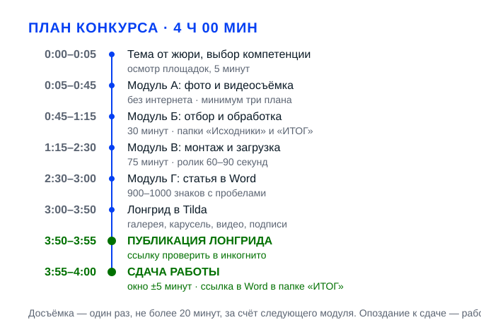
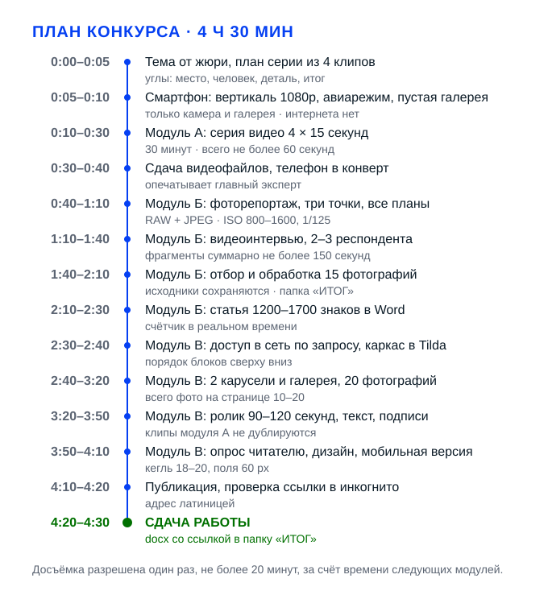
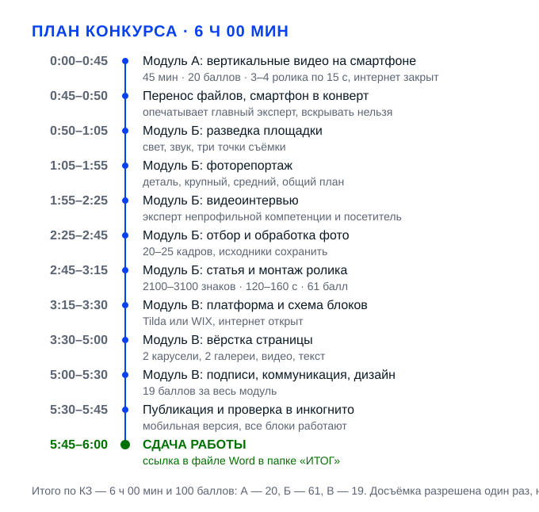

Мультимедийная журналистика (Р,О)
Задания ниже — официальные файлы «Абилимпикс» (источник: abilympics-russia.ru), разложенные по категориям. Решения написаны по тексту задания, регламенту и критериям оценки; в них указано, что именно проверяет эксперт.
Школьник
14–16 лет, базовый уровень заданияВыдержка из официального конкурсного задания: страницы, относящиеся к категории «Школьник» (стр. 4–7 источника).
Пошаговое решение
Задание категории «Школьники» — мультимедийный материал об одной из компетенций чемпионата: серия репортажных фотографий, видеоролик и лонгрид на Tilda по теме. Работа идёт четыре часа и разложена на четыре модуля: сорок пять минут съёмки на площадке без интернета, тридцать минут отбора и обработки, семьдесят пять минут монтажа с частичным доступом в сеть и девяносто минут статьи и сборки страницы. Требования считаются формально: от семи до десяти фотографий, ролик на шестьдесят-девяносто секунд с четырьмя склейками и не более чем двумя переходами, титр с компетенцией и ФИО, статья на 900–1000 знаков, галерея, карусель, подписи и элементы коммуникации. Всё, что вы снимаете и пишете, должно быть авторским. Главный ресурс — не техника, а распределение времени: досъёмка разрешена один раз и не дольше двадцати минут за счёт следующего модуля, поэтому материал собирают сразу и с запасом.

Задача 1. Снять материал на площадке компетенции за 45 минутМодуль А · 45 минут · без интернета
Первый модуль решает судьбу всей работы: из отснятого здесь материала потом соберут серию, ролик и лонгрид, а доснять что-то заново почти невозможно — досъёмка разрешена один раз и не дольше двадцати минут, причём это время вычитается из следующих модулей. Сорок пять минут на площадке нужно потратить не на красивые кадры, а на доказательство: вот компетенция, вот участник за работой, вот эксперт с бланком, и всё это снято минимум в трёх разных планах. Поэтому сначала выбираем компетенцию и раскладываем время, потом снимаем фото, потом видео и только в конце переносим материал в папку.
Действие 1.1. Выбрать компетенцию и разложить 45 минут
Шаг 1.1.1
Тему чемпионата вы получаете от экспертного жюри перед стартом, а компетенцию выбираете сами — это первый содержательный выбор конкурса. Идите по площадкам и смотрите не на красоту стенда, а на процесс: видно ли руки, инструмент, материал, экран; работает ли участник всё время, а не ждёт команды; есть ли рядом эксперт с бланком. На осмотр отводите не больше пяти минут и выбирайте ту площадку, где за минуту происходит два-три заметных действия: деталь ставят, шов прошивают, плату паяют, манекен стригут.
Требование задания прямолинейно: на фотографиях и видео обязательно должна быть видна выбранная компетенция, процесс выполнения задания участниками и работа экспертов. Если площадка статичная — все сидят за ноутбуками спиной к проходу, — вы принесёте портреты затылков, в которых невозможно опознать компетенцию, и потеряете баллы по содержанию всей серии. Пять минут осмотра экономят двадцать минут пересъёмки, которых у вас нет.
Проверьте выбор тремя вопросами и ответьте на них вслух. Первый: назову ли я компетенцию, посмотрев на кадр, без подписи? Второй: видно ли в кадре действие, а не только человека? Третий: есть ли на площадке эксперт, которого можно снять за работой? Если хотя бы на один вопрос ответ «нет», идите к соседней площадке, времени на это хватает.
Самая частая ошибка — выбрать компетенцию, которая нравится вам как зрителю, но не даёт движения: например, дизайн или программирование, где все смотрят в монитор с одной точки. Вторая — остаться на первой попавшейся площадке из вежливости перед участником: серия получится пустой, а переделать её уже нечем.
Эксперт смотрит первые кадры сразу после модуля А и мысленно отвечает на тот же вопрос: понятно ли, что здесь происходит. Если непонятно, дальше работу спасает только текст.
Шаг 1.1.2
Разложите сорок пять минут на четыре отрезка и держитесь этой разметки: пять минут на осмотр и выбор площадки, двадцать пять на фотографии, двенадцать на видео и три минуты резерва на переход и проверку файлов. Видео снимайте после фото, а не наоборот, потому что фотоаппарат в руках быстрее, а на видео уходит больше дублей. Если вы видите, что фотографий уже достаточно, а видео нет, честно перекладывайте остаток времени в видео: ролик обязателен, и без него модуль В просто нечем заполнять.
Общее время конкурсного задания — четыре часа: сорок пять минут на съёмку, тридцать на отбор и обработку, семьдесят пять на монтаж и девяносто на статью с лонгридом. Всё расписано под ноль, поэтому опоздание внутри модуля А не растягивает конкурс, а отнимает время у монтажа, где каждая минута дороже. Досъёмка разрешена один раз и не более двадцати минут, и эти двадцать минут вы платите из следующего модуля.
К середине модуля у вас должно быть не меньше десяти разных кадров и хотя бы три видеозаписи по восемь-десять секунд. Проверьте это по счётчику камеры, а не по ощущению: ощущение «снял много» почти всегда обманывает, потому что серии из одинаковых кадров считаются за один.
Классическая ошибка — увлечься фото и спохватиться про видео за пять минут до конца. Второй провал — снимать всё в одном месте площадки: потом не из чего собрать три плана, и монтаж превращается в набор похожих кадров.
Эксперт отмечает, успел ли участник сдать материал к концу модуля, и отдельно смотрит на распределение времени: недоснятое видео фиксируется как невыполнение части задания, а работа, сданная в последнюю минуту, почти всегда лишена крупных планов и деталей.
Действие 1.2. Снять серию фотографий в трёх планах
Шаг 1.2.1
До первого кадра приведите камеру в рабочее состояние: заряженная батарея, свободная карта памяти, формат JPEG максимального качества, а если камера умеет — JPEG вместе с RAW, потому что RAW даст запас на обработку в модуле Б. Поставьте выдержку не длиннее 1/125 секунды, чтобы руки и инструмент не смазывались, и включите автофокус по центральной точке. Баланс белого выставьте по белому листу в тех же условиях освещения: иначе половина кадров уйдёт в жёлтый оттенок от ламп.
Площадки чемпионата освещены плохо и по-разному: сверху лампы, сбоку окно, рядом экран. Автоматика в таких условиях ошибается, и серия получается разноцветной, что сразу читается как небрежность. Кроме того, настройки, сделанные заранее, освобождают голову для содержания: вы смотрите на людей и действия, а не в меню.
Проверьте пробным кадром: гистограмма не прижата к краям, на увеличенном просмотре резкая надпись или контур инструмента, цвет белого листа на снимке белый, а не кремовый. Если пробный кадр не нравится, меняйте настройки сейчас, а не после двадцатого кадра.
Ошибка новичка — снимать в автоматическом режиме «пусть камера решает»: часть кадров выйдет с шевелёнкой, часть с пересветом на лампах. Вторая — не проверить карту: полная или чужая карта обнаруживается на десятом кадре, и снять серию уже не на что.
Эксперт оценивает техническое качество серии целиком и делает это в модуле Б, когда кадры уже отобраны: смотрит резкость на увеличении, ровность экспозиции и единство цвета. Один смазанный кадр из десяти прощают, три — уже нет, потому что замена была под рукой.
Шаг 1.2.2
Начните с общего плана: отойдите к дальней стене или встаньте на возвышение, чтобы в кадр вошли площадка целиком, участник, оборудование и табличка с названием компетенции. Снимите два-три варианта с разных точек, в том числе вертикальный, а потом перейдите на средний план — человека по пояс или по грудь вместе с тем, что он делает руками. Общий план объясняет «где», средний — «кто и что», и вместе они держат любую серию.
Задание требует минимум трёх разных планов, и общий со средним — самые надёжные: они читаются на любом экране и в лонгриде, где фотография часто стоит во всю ширину. Табличка или надпись с названием компетенции в общем плане работает как доказательство, что вы снимали именно эту площадку, а не соседнюю.
Посмотрите на кадр и проверьте: читается ли название компетенции, не перекрывает ли голова прохожего половину кадра, не срезаны ли ноги и инструмент, ровный ли горизонт. Если человек в кадре занял меньше восьмой части площади, это уже не средний план, а случайный прохожий.
Типичная ошибка — снимать всю площадку с одной точки в упор: в кадр лезут спины зрителей и волонтёров, а самой работы не видно. Вторая — ставить участника в центр и просить «посмотреть в камеру»: получается постановочный портрет, а нужен репортаж.
Эксперт ищет в серии композиционную разноплановость и следы реальной работы, а не позирования. Смотрит он на это в модуле Б, разложив отобранные кадры рядом: если все они сняты с одной точки и с одного расстояния, серия считается однообразной независимо от качества каждого снимка.
Шаг 1.2.3
Крупный план и деталь — то, чем серия отличается от набора общих видов. Подойдите ближе, насколько позволяет площадка, и снимайте руки: как держат инструмент, как выравнивают деталь, как нажимают клавишу; потом лицо в момент сосредоточенности, глаза и брови без улыбки в камеру. Деталь — это один элемент крупно: шов, микросхема, срез, кисть, экран с результатом, бланк эксперта с галочками. На каждую такую сцену делайте серию из трёх-пяти кадров подряд, чтобы потом было из чего выбрать фазу движения.
Именно крупный план и деталь показывают уровень владения компетенцией: по рукам видно, уверенно ли человек держит инструмент, а по экрану или бланку — что работа идёт по регламенту. В серии из пяти-десяти кадров крупный план и деталь должны занимать примерно половину: без них лонгрид выглядит как отчёт о мероприятии, а не как репортаж о деле.
Увеличенный просмотр обязателен: на маленьком экране камеры смаз не заметен. Проверьте резкость по ресницам или по кромке инструмента, а не по центру кадра. Следите, чтобы деталь не была обрезана краем: срез детали по краю кадра читается как ошибка кадрирования.
Ошибка — снимать детали с той же точки, где стояли для общего плана, и потом растягивать кадр при обработке: получится рыхлая, шумная картинка. Вторая — гнаться за лицами и забыть про руки, хотя в компетенции работают именно руками.
Эксперт смотрит крупные планы первыми: по ним видно, был ли участник рядом с работой или снимал издалека, не решаясь подойти. Отдельно отмечает, есть ли в кадрах деталь инструмента или материала, по которой компетенция опознаётся без подписи и без текста.
Шаг 1.2.4
После каждых пяти-семи кадров останавливайтесь на десять секунд и просматривайте снятое в режиме увеличения. Отбраковывайте сразу: смаз, промах фокуса, пересвет на лампе, случайный человек, перекрывший кадр. На каждую важную сцену держите два-три дубля с разной точки — в репортаже невозможно повторить момент, но можно перестраховаться вторым углом.
Модуль Б длится тридцать минут, и в нём нужно отобрать и обработать пять-десять фотографий. Если вы принесёте восемьдесят случайных кадров, полмодуля уйдёт на просмотр брака, а на обработку останется десять минут. Отбраковка на месте — это перенос чужой работы в начало, где она стоит дешевле.
Хороший признак: после просмотра вы можете назвать, что именно сняли в каждом кадре. Если про кадр хочется сказать «вроде ничего», он не нужен. Пять-семь сильных кадров лучше тридцати никаких, потому что в галерею и карусель попадут единицы.
Самая дорогая ошибка — не смотреть снятое вообще и обнаружить смаз уже в модуле Б, когда площадка закрыта. Вторая — экономить на дублях: единственный кадр с закрытыми глазами становится единственным кадром сцены.
Эксперт видит, сколько участник отсмотрел и отбросил: в модуле Б он наблюдает, как идёт отбор, и способность отбирать здесь оценивается отдельно от умения снимать. Тот, кто уверенно отбрасывает свои кадры и объясняет причину, выглядит сильнее того, кто защищает каждый снимок.
Действие 1.3. Записать видеоролик без рывков
Шаг 1.3.1
Снимайте видео двумя руками, прижав локти к корпусу, а камеру — к груди, и дышите ровно, без задержки дыхания: задержанное дыхание даёт микротолчки в конце. Если есть штатив или монопод, ставьте камеру на них, особенно для общих планов и панорам. Панораму ведите медленно, в три раза медленнее, чем кажется правильным, начиная и заканчивая на неподвижной точке: резкое начало панорамы невозможно исправить на монтаже, потому что резать её придётся вместе с полезным кадром.
Задание разрешает съёмку с рук, но требует стабильности, без резких рывков и сильного дрожания. Дрожание — главная причина, по которой школьные ролики выглядят любительскими, и никакая стабилизация в программе монтажа не спасает кадр с рывком: она сглаживает дрожание, но не убирает смаз и «желе».
Проверьте себя на короткой записи: включите воспроизведение на телефоне и посмотрите, дрожит ли неподвижный предмет в кадре — край стола, штатив, надпись. Если дрожит, переснимите с опорой. Второй признак — горизонт «плывёт» во время панорамы.
Ошибка — снимать на ходу, обходя площадку, и разговаривать при этом: камера идёт волной, а в звук попадает ваше дыхание и шаги. Вторая — снимать вертикально, когда в лонгриде нужен горизонтальный кадр: торчащие по бокам чёрные поля выглядят как небрежность.
Эксперт смотрит первые десять секунд ролика и по ним судит о стабильности: рывок на старте обесценивает весь материал, даже если дальше кадры ровные. В модуле В он отдельно отмечает, есть ли кадры с опоры и не пришлось ли сглаживать дрожание программной стабилизацией.
Шаг 1.3.2
В видео тоже нужны минимум три разных плана, и снимать их надо отдельными фрагментами, а не одним длинным проходом. Сначала общий: подойдите и снимите площадку десять секунд неподвижно, чтобы в кадре читались люди, оборудование и название компетенции. Потом средний: участник и его руки за работой, восемь-двенадцать секунд. Потом крупный и деталь: инструмент, экран, шов, лицо, по пять-семь секунд каждый. Каждый фрагмент — не короче четырёх секунд, иначе его нечем резать и он мелькнёт как вспышка.
Из этих фрагментов в модуле В нужно собрать ролик длительностью от шестидесяти до девяноста секунд с минимум четырьмя склейками. Чтобы четыре склейки были осмысленными, нужно минимум пять разных фрагментов с разными планами — значит, на площадке надо снять не пять, а десять-двенадцать коротких, и потом выбрать.
Проверка простая: пролистайте записи и назовите план каждого фрагмента. Если из десяти записей восемь — средний план с одной точки, материал негоден, срочно добирайте общий и крупный. Общая длительность полезных фрагментов должна быть не меньше двух минут: из двух минут легко собрать девяносто секунд, из сорока секунд — нет.
Ошибка — записать один длинный проход по площадке на три минуты и считать, что материала много: резать такой проход нечем, все кадры одинаковые. Вторая — снимать только лица говорящих, без работы, и потом обнаружить, что компетенции в ролике не видно.
Эксперт в модуле В ищет в ролике разные планы и обоснованность склеек: однообразный материал снижает оценку, даже если монтаж аккуратный. Ему важно увидеть, что участник понимал разницу между общим, средним и крупным планом ещё на съёмке, а не спасал положение кадрированием файла.
Шаг 1.3.3
Присутствие в кадре разрешено, но не более четверти общего хронометража: на ролик в девяносто секунд это не больше двадцати двух секунд с вами в кадре, а на ролик в шестьдесят секунд — пятнадцать. Если хотите появиться, снимите короткий стендап на десять секунд: встаньте в кадре так, чтобы за спиной была видна работа, скажите одну фразу и уйдите из кадра. Звук пишите отдельно от картинки, если умеете: подойдите к эксперту или участнику на расстояние вытянутой руки, так речь будет слышна без ветра и гула зала.
Ограничение в четверть хронометража нужно не для формальности: репортаж рассказывает о чужой работе, а не об авторе, и зритель должен увидеть процесс, а не лицо корреспондента. Кроме того, превышение порога фиксируется экспертом при просмотре ролика и снимает балл по критерию соблюдения требований задания, причём независимо от качества самого стендапа.
Проверьте по секундомеру: сложите длительность всех фрагментов, где вы в кадре, и сравните с четвертью предполагаемого хронометража. Отдельно проверьте звук в наушниках: речь не должна тонуть в шуме зала, а ваши шаги и дыхание не должны быть громче речи.
Ошибка — записать трёхминутный рассказ о себе на фоне площадки: половина хронометража уходит на говорящую голову, а работы не видно. Вторая — снимать звук с расстояния пяти метров и потом обнаружить, что речь неразборчива.
Эксперт при просмотре ставит ролик на паузу и складывает время фрагментов с участником в кадре: превышение фиксируется отдельной строкой в оценочном листе. Отмечает он и качество звука — если речь неразборчива, материал считается снятым, но неготовым к публикации.
Действие 1.4. Сохранить материал так, чтобы его не потерять
Шаг 1.4.1
Не форматируйте карту памяти и не удаляйте снятое до самой сдачи работы: даже отбракованные кадры остаются доказательством съёмки. Сразу после модуля А перенесите всё на компьютер или внешний носитель, а лучше в два места — на рабочий диск и на флешку, и проверьте, что файлы открываются: щёлкните по первому и последнему кадру серии, проиграйте первую видеозапись. Копирование, а не перемещение — так на карте остаётся резервная копия на случай сбоя.
Модуль Б проходит без доступа в интернет, и восстановить утраченное из облака не получится. Потеря карты или папки в этой компетенции означает ноль за три модуля сразу: без фотографий нет серии, без видео нет ролика, без того и другого лонгрид превращается в голый текст. Две копии — это не паранойя, а стандарт работы репортёра.
Проверьте три вещи: количество файлов совпадает с тем, что показывает камера; первый и последний файл открываются и воспроизводятся; папка находится на диске, а не в корзине или в загрузках браузера. Если файлов меньше, чем ожидали, ищите причину сразу, пока камера под рукой.
Ошибка — «почистить карту, чтобы было место», сделанная до копирования: карта чистится после сдачи, а не после съёмки. Вторая — копировать в папку «Загрузки» и потерять её среди чужих файлов: на конкурсном компьютере это происходит чаще, чем кажется.
Эксперт может попросить показать исходники, и это не формальность: наличие и целостность файлов подтверждают, что материал авторский, а не взят из чужой публикации. Проверяет он это в модуле Б, когда рядом лежат исходники и обработанные версии, и по датам файлов видно, что съёмка шла на площадке.
Шаг 1.4.2
Создайте на рабочем столе папку с именем «ФИО участника Национального чемпионата» — именно в таком виде, с фамилией, именем и отчеством полностью. Внутри сделайте подпапку «Исходники» и перенесите туда весь снятый материал без отбора: все кадры, все видеозаписи, включая брак. Рабочие файлы обработки и итоговый отбор будут в отдельных папках, но структуру задавайте сразу, чтобы не перекладывать её в спешке на последней минуте.
Требование к папке прописано в задании дословно, и проверяют его формально: работу с неправильным именем ищут в общем архиве дольше, а иногда не находят вовсе. Разделение на «Исходники» и итог нужно и вам: обработка фотографий оценивается вместе с возможностью посмотреть, что было до неё, поэтому исходник обязан остаться на месте.
Проверьте путь целиком: рабочий стол, папка с вашим ФИО полностью, внутри «Исходники», внутри файлы. Имя папки должно читаться без сокращений — «Иванов Иван Иванович», а не «ivan_2026» и не «конкурс_итог». Отдельно убедитесь, что в «Исходниках» лежат все файлы, включая дубли и брак: именно по ним видно, из чего вы выбирали.
Ошибка — назвать папку «Новая папка» или «Конкурс»: формально работа есть, а найти её по имени участника нельзя. Вторая — разложить файлы по папкам «фото» и «видео», но не создать «Исходники»: при проверке обработки нечего сравнить.
Эксперт проверяет имя папки и наличие исходников в первые же минуты модуля Б, пока вы ещё не начали обработку. Если папка названа иначе или исходники уже перезаписаны, он делает пометку, и восстановить балл за организацию работы потом нельзя: к концу модуля доказательств не останется.
Задача 2. Отобрать и обработать серию из 5–10 фотографийМодуль Б · 30 минут · без интернета
Тридцать минут на то, чтобы из сотни отснятых кадров получилась серия, которую не стыдно поставить в галерею и карусель. Работа идёт в жёстком порядке: сначала раскладываем материал по папкам и делаем копию, потом отбраковываем по технике, потом отбираем по содержанию, и только в конце трогаем обработку. Если начать с обработки, время уйдёт на кадры, которые всё равно не войдут в серию, а на отбор останется пять минут. Исходники при этом остаются нетронутыми: по заданию обработка оценивается вместе с возможностью увидеть, что было до неё.
Действие 2.1. Разложить материал по папкам
Шаг 2.1.1
Внутри папки с вашим ФИО создайте три подпапки: «Исходники», «Обработка» и «ИТОГ». В «Исходники» уже лежит всё отснятое, в «Обработку» будут ложиться рабочие файлы редакторов, в «ИТОГ» — только финальные экспортированные JPEG. Отбор удобно вести не перетаскиванием, а пометками: в любом просмотрщике ставьте звёзды или флажки на кандидатах и только после этого копируйте выбранное в «ИТОГ», чтобы не гонять файлы туда-обратно.
Требование к папке задано в задании дословно, и проверяется оно формально: работу с неправильным именем ищут в архиве дольше, а иногда не находят. Три подпапки нужны не для красоты: эксперту важно видеть исходник рядом с обработанной версией, иначе невозможно понять, что именно вы изменили и не выдаёте ли чужой кадр за свой.
Проверьте: путь от рабочего стола до файла состоит из папки с полным ФИО и одной из трёх подпапок. В «ИТОГ» пока пусто — это нормально, он заполнится в конце модуля. В «Исходниках» число файлов совпадает с тем, что было на карте.
Ошибка — держать всё в одной куче и разбирать по ходу: через десять минут вы уже не помните, какая версия кадра финальная. Вторая — сразу переименовать исходники «под серию»: по одинаковым именам потом не восстановить, что было до обработки.
Эксперт заходит в папку в начале модуля и отмечает структуру и точное имя: это первые баллы за организацию работы, и они не зависят от качества снимков. Отдельно смотрит, лежат ли файлы обработки отдельно от исходников, — по этому видно, понимает ли участник, что можно менять, а что трогать нельзя.
Шаг 2.1.2
До первой правки скопируйте всю подпапку «Исходники» на флешку или во второе место на диске и назовите копию так, чтобы её нельзя было перепутать, например «Исходники_копия». Работайте только с копией, а оригинал не открывайте вообще: так исключено случайное сохранение поверх. Если у вас RAW, правки в Lightroom и так неразрушающие, но привычка держать второй экземпляр спасает в тот момент, когда кадр нужно вернуть в исходное состояние и сравнить.
В задании прямо сказано: при обработке обязательно нужно оставлять исходник, чтобы было возможно просмотреть изменения. Это не бюрократия, а способ отличить обработку от подмены: если исходник перезаписан, доказать авторство и характер правок нельзя, и баллы за обработку снимаются целиком, даже когда результат хорош.
Откройте свойства файлов и сравните даты создания в оригинале и в копии: они должны совпадать. Убедитесь, что размер архивной копии равен размеру папки: недокопированный файл — самая обидная потеря, потому что обнаруживается в момент экспорта.
Ошибка — «я аккуратно, мне копия не нужна»: одно нажатие Ctrl+S поверх исходника уничтожает возможность сравнения. Вторая — копировать только отобранные кадры: доказательство отбора как раз в том, что видно и отброшенное.
Эксперт проверяет исходники выборочно: просит открыть конкретный кадр до обработки и рядом — после, и смотрит на дату создания файла. Если даты одинаковые и файл один, значит, работа шла поверх оригинала, и критерий сохранения исходника не выполнен.
Действие 2.2. Отбраковать кадры по технике
Шаг 2.2.1
Просматривайте кадры на увеличении до ста процентов, а не в режиме сетки миниатюр: именно в масштабе один к одному видно смаз от шевелёнки, промах фокуса по лицу и шум на тенях. Отбраковывайте беспощадно: если резкость «вроде есть», но ресницы или кромка инструмента размыты, кадр не годится. Отдельно проверьте кадры, снятые на длинной выдержке у ламп: там часто двоится контур, и на миниатюре это незаметно.
Требование к отбору сформулировано прямо: отобрать от пяти до десяти не размытых и необрезанных фотографий. Размытый кадр в серии портит впечатление от всей подборки, потому что смотрят её подряд, и глаз цепляется именно за дефект. Кроме того, при проверке на большом экране, а лонгрид будет смотреться и на ноутбуке эксперта, недостатки видны сильнее, чем на камере.
Хороший тест — уменьшить кадр до размера почтовой марки: сильная композиция читается и так, а смазанная превращается в пятно. Второй тест — посмотреть на кадр, отойдя от экрана на два шага: если непонятно, что происходит, кадр работает только в подписи.
Ошибка — оставить кадр «на всякий случай, может, пригодится»: в серии из десяти фотографий один технический брак заметен сразу и снимает балл за качество всей серии. Вторая — оценивать резкость по экрану камеры: там картинка уменьшена и подсвечена.
Эксперт смотрит отобранную серию на мониторе и первым делом проверяет резкость на увеличенном просмотре, особенно в кадрах с движением рук. Подряд идущие кадры он оценивает как подборку: один смаз заметен сильнее, чем в одиночном снимке, потому что глаз сравнивает соседние.
Шаг 2.2.2
Проверьте кадрирование в самом начале, до всякой обработки: не срезана ли голова, не отрезаны ли кисти рук и инструмент, ровный ли горизонт. Если кадр обрезан неудачно, спасайте его кадрированием при обработке, но не «дотягивайте» обрезкой до квадрата: из горизонтального кадра с обрезанной рукой квадрат не получится, рука не появится. Горизонт выравнивайте по вертикальным линиям — стойке, стене, краю стола, а не по линиям на глаз.
Задание отдельно оговаривает, что фотографии должны быть необрезанными: имеется в виду не только техническая обрезка, но и небрежное кадрирование, когда у человека нет макушки или инструмент выходит за край. Такие кадры выглядят как случайные и читаются как неумение компоновать, хотя снимали вы, возможно, хороший момент.
Проверка простая: проведите по краям кадра воображаемую рамку и спросите, не режет ли она что-то важное — палец, лезвие, экран, надпись. Горизонт проверяйте, приложив к экрану лист бумаги: расхождение в один-два градуса на фотографии площадки заметно.
Ошибка — выравнивать горизонт поворотом на глаз и терять при этом часть кадра: после поворота края обрезаются, и рука снова отрезана. Вторая — кадрировать в квадрат всё подряд, потому что «так модно в соцсетях»: в лонгриде квадраты дают рваную сетку.
Эксперт отмечает кадрирование в оценочном листе отдельно от резкости: это разные критерии, и оба видны без увеличения. Смотрит он на края кадра — макушку, кисти, инструмент, надпись — и на горизонт: заваленный на два градуса горизонт на фотографии площадки бросается в глаза сразу.
Шаг 2.2.3
Разберите серии: если с одной сцены снято пять-восемь похожих кадров, оставьте один. Выбирайте по трём признакам — фаза движения (инструмент в работе, а не занесён над столом), взгляд и выражение лица (сосредоточенность, а не моргание), чистота фона (никто не влез в кадр). Сравнивать проще, переключаясь между кадрами стрелками в просмотрщике: так видно, что меняется только мимика, а композиция та же.
Из серии похожих кадров в подборку идёт один, максимум два: пять почти одинаковых снимков занимают место в лимите из десяти и не добавляют ничего нового. Отбор по фазе движения — профессиональный приём: в репортаже ценится момент, когда действие происходит, а не когда оно уже закончилось.
Проверьте серию на просвет: разложите кадры миниатюрами в ряд и посмотрите, отличается ли выбранный от соседних положением рук и направлением взгляда. Если отличий нет, выбирайте по резкости и чистоте фона, но не оставляйте два одинаковых.
Ошибка — оставить в серии три кадра одного действия, потому что жалко: подборка выглядит беднее, чем есть на самом деле, а место в лимите из десяти кадров потрачено впустую. Вторая — выбрать кадр по яркости, а не по моменту, и получить красивую, но пустую картинку без действия.
Эксперт сравнивает кадры между собой и отмечает повторы: дубли в серии читаются как нехватка материала. Ему важно увидеть, что участник выбрал момент, а не просто самый яркий файл из папки, — именно по этому признаку отличают репортажный отбор от случайного.
Действие 2.3. Отобрать кадры по содержанию
Шаг 2.3.1
Разложите прошедшие технический отбор кадры по планам и посчитайте: общий (площадка, участник, оборудование), средний (человек по грудь или по пояс за работой), крупный (лицо, руки, инструмент) и деталь (один элемент крупно). Нужно минимум три разных плана, и в готовой серии каждый должен быть представлен хотя бы двумя кадрами. Если какого-то плана нет, вернитесь к исходникам: возможно, нужный кадр вы отбраковали только за мелкий дефект, который исправляется обработкой.
Требование о минимум трёх разных планах задано и для фотографий, и для видео, и это главный содержательный критерий серии. Общий план объясняет, где мы находимся, средний показывает работу, крупный и деталь доказывают уровень владения компетенцией. Серия из одних средних планов выглядит как любительский отчёт, даже если каждый кадр технически безупречен.
Проверьте раскладку руками: разложите кадры в ряд в порядке планов и посмотрите, читается ли история — вот площадка, вот человек, вот его руки, вот результат. Если история рассыпается и все кадры про одно и то же, серия не готова.
Ошибка — отобрать десять красивых крупных планов и ни одного общего: зритель не понимает, где происходит действие. Вторая — оставить общий план, снятый с прохода, где половину кадра занимают спины зрителей.
Эксперт раскладывает серию и смотрит на планы: разноплановость входит в критерий содержания и оценивается по подборке, а не по отдельному снимку. Он проверяет, есть ли общий план площадки, средний с работой и крупный с деталью, — если одного уровня нет, серия считается неполной.
Шаг 2.3.2
Теперь проверьте серию на обязательные сюжеты: должна быть видна компетенция (её инструмент, материал, оборудование или надпись), процесс выполнения задания участником и работа эксперта. Эксперта снимайте за делом: с бланком, секундомером, планшетом, в момент, когда он смотрит на работу или что-то записывает. Количество держите в коридоре от семи до десяти кадров: семь — нижняя граница описания задания, десять — верхняя граница таблицы модулей.
В описании задания указано от семи до пятнадцати фотографий, а в таблице модулей — от пяти до десяти отобранных и обработанных. Единственный способ выполнить оба требования сразу — попасть в пересечение, то есть сдать семь-десять кадров. Работа эксперта упомянута отдельно, потому что она показывает: вы снимали чемпионат, а не только одного симпатичного участника.
Посчитайте кадры и подпишите мысленно каждый одним словом: площадка, руки, деталь, эксперт, лицо, финал. Если на два кадра придумать слово не получается, они лишние. Проверьте, что ни один обязательный сюжет не выпал.
Ошибка — сдать пятнадцать кадров, рассчитывая, что «чем больше, тем лучше»: таблица модулей ограничивает отбор десятью, и лишние кадры считаются нарушением объёма. Вторая — забыть про эксперта и принести только участника.
Эксперт проверяет количество по списку файлов в папке «ИТОГ» и наличие обязательных сюжетов — это формальные пункты, которые видно за минуту. Отдельно он ищет кадр, где работает эксперт: без него невозможно доказать, что съёмка шла на конкурсной площадке, а не в коридоре.
Действие 2.4. Обработать кадры, сохранив исходники
Шаг 2.4.1
Откройте отобранные кадры в Adobe Lightroom или в аналогичном редакторе и работайте ползунками в таком порядке: экспозиция, тени и света, баланс белого, затем контраст и насыщенность. Двигайте по одному параметру и сравнивайте с исходником клавишей переключения до/после. Ориентируйтесь на гистограмму: она не должна упираться в правый край, иначе на лампах и белых халатах пропадёт фактура. Кадры одной серии приводите к общему виду, чтобы они не отличались по цвету и плотности.
Обработка в этой компетенции оценивается не как искусство, а как аккуратность: серия должна выглядеть единой, а цвета — естественными. Пересвеченные и «переслащённые» кадры сразу выдают неопытность, а излишняя насыщенность убивает цвет кожи. Кроме того, неразрушающая правка в Lightroom позволяет вернуться к исходнику в любой момент, и именно этого требует задание.
Проверьте на двух мониторах, если есть возможность, или хотя бы на экране и на телефоне: переслащённый кадр на телефоне выглядит кислотным. Отдельно посмотрите на лица: кожа не должна быть оранжевой или серой. И проверьте, что тени не «залиты» в чёрное.
Ошибка — тянуть насыщенность и контраст до предела: на первом кадре это выглядит эффектно, на пятом серия превращается в плакат. Вторая — обрабатывать кадры по отдельности, не сверяя с соседними: подборка получится разноцветной.
Эксперт сравнивает обработанную версию с исходником и смотрит, осталась ли фактура в светах и не появились ли цветные ореолы. Единство серии он оценивает, листая кадры подряд: если один холоднее другого на заметную величину, подборка выглядит собранной из разных съёмок.
Шаг 2.4.2
Точечные правки — пыль, царапины, случайный яркий предмет у края — делайте в Adobe Photoshop, но только их: вырезать людей и дорисовывать детали нельзя, это уже не обработка. Работайте на копии слоя, а исходный слой оставляйте отключённым, и сохраняйте результат в PSD или TIFF в папке «Обработка». Если правок нет, не открывайте Photoshop вообще: время модуля дороже, а лишние действия повышают риск испортить кадр.
Оценка идёт по совокупности: аккуратность, естественность, отсутствие следов грубой ретуши. Слои и сохранённый рабочий файл нужны как доказательство, что вы правили точечно, а не собирали изображение из фрагментов. Материалы должны быть авторскими, и именно поэтому любое вмешательство должно быть видно и объяснимо.
Проверьте кадр в масштабе сто процентов на месте правки: не должно быть размытых пятен, повторяющегося узора клонирования, обрубленных краёв. Убедитесь, что PSD сохранился в «Обработку», а не в «Исходники».
Ошибка — «почистить» фон инструментом штамп и оставить пятна и повторы текстуры: на однотонном фоне это видно сразу, особенно на большом экране. Вторая — править кадр в JPEG и сохранять поверх исходника, теряя доказательство авторства и характера правок.
Эксперт смотрит на кадр в увеличении и проверяет, нет ли следов ретуши в зонах, где её быть не должно, — на однотонном фоне, на коже, на металле. Он также смотрит, сохранён ли рабочий файл со слоями: это доказательство точечной правки, а не пересборки изображения.
Действие 2.5. Экспортировать серию в папку «ИТОГ»
Шаг 2.5.1
Экспортируйте финальные кадры в JPEG с профилем sRGB, длинной стороной от двух до трёх тысяч пикселей и качеством около девяноста. Меньше двух тысяч — и на большом экране лонгрида кадр будет мыльным, больше трёх — файл станет тяжёлым, а Tilda начнёт подгружать галерею рывками. Имена файлов делайте осмысленными и латиницей: «01-obshchiy-plan», «02-ruki», «03-detal», чтобы порядок в галерее собирался сам, а кириллица не превращалась в кракозябры при загрузке.
Параметры экспорта влияют на две вещи сразу: на качество показа в лонгриде и на скорость загрузки страницы, а модуль Г ограничен девяноста минутами и открытым интернетом, где каждая тяжёлая галерея отнимает время. Профиль sRGB обязателен: без него цвета на чужом экране уедут, и серия будет выглядеть бледной или зелёной.
Проверьте: файлов ровно столько, сколько вы отобрали, все с расширением .jpg, вес каждого в пределах двух-трёх мегабайт, цвета при открытии в другом просмотрщике не меняются. Откройте один кадр в браузере — так вы увидите то же, что увидит эксперт.
Ошибка — экспортировать в Adobe RGB: на большинстве экранов такой файл выглядит приглушённым. Вторая — сохранить имена вида «IMG_4471.JPG»: в галерее кадры выстроятся в случайном порядке, а подписи придётся подбирать по памяти.
Эксперт открывает папку «ИТОГ» и оценивает серию как набор: единый размер, единый цвет, понятный порядок по именам файлов. Он проверяет и вес кадров — слишком тяжёлые файлы в галерее грузятся рывками, и это видно при просмотре лонгрида.
Шаг 2.5.2
Последний шаг модуля — сравнить серию с исходниками и посмотреть на неё как на чужую работу. Разложите миниатюры по порядку и проверьте, что рядом не стоят два похожих кадра, что планы чередуются, что нет провала по резкости. Пролистайте быстро, как листал бы читатель: если на третьем кадре взгляд останавливается, потому что там что-то не так, этот кадр лучше заменить.
Тридцать минут модуля заканчиваются, и после них изменить серию уже нельзя: в модуле В идёт монтаж видео, а в модуле Г — лонгрид, где фотографии только расставляются. Быстрый пролистыв — единственный способ увидеть серию целиком, а не по одному кадру, и именно так её увидит эксперт.
Признаки готовой серии: история читается без подписей, ни один кадр не выпадает по цвету, все семь-десять кадров разные по плану, в папке «ИТОГ» нет ничего лишнего. Если хотя бы один признак не выполняется, у вас есть минуты на замену.
Ошибка — закончить серию «как получилось» и уйти в монтаж: потом возвращаться некогда, а именно серия заполняет галерею и карусель в лонгриде. Вторая — оставить в «ИТОГЕ» пробные экспорты с суффиксом «-2»: эксперту придётся гадать, какая версия финальная.
Эксперт оценивает серию в конце модуля Б, до начала монтажа, и фиксирует количество и состав: позже добавить кадры в зачёт уже не получится. Он листает подборку быстро, как читатель, и отмечает кадры, на которых взгляд спотыкается.
Задача 3. Смонтировать ролик на 60–90 секунд и загрузить егоМодуль В · 75 минут · интернет частично
Семьдесят пять минут на монтаж и публикацию — здесь чаще всего теряют время: сначала полчаса смотрят весь материал, потом час переставляют фрагменты, а на экспорт и загрузку остаётся пять минут. Правильный порядок обратный: жёсткий отбор клипов, сборка по планам, склейки, титр и звук, затем экспорт с запасом на загрузку, потому что видеохостинг обрабатывает файл не мгновенно. Требования конкретны: от шестидесяти до девяноста секунд, минимум четыре склейки, не больше двух переходов, титр с компетенцией и ФИО, разрешение не ниже 1280 на 720 при 25 кадрах в секунду.
Действие 3.1. Собрать проект и отобрать клипы
Шаг 3.1.1
Создайте новый проект и сразу задайте параметры последовательности: 1920 на 1080 пикселей, 30 кадров в секунду, стереозвук 48 кГц. Сохраните проект в папку с вашим ФИО, а не в «Документы» по умолчанию, и назовите файл так, чтобы его можно было узнать: «ролик-компетенция-ФИО». Затем импортируйте все видеозаписи из «Исходников» и дайте программе достроить пики и превью — на слабом компьютере это занимает минуту, и лучше потратить её сейчас, чем ждать рывков при перетаскивании.
Параметры последовательности определяют, что получится на выходе: если задать 1280 на 720 и потом экспортировать в 1920, картинка останется мягкой, потому что программа растянет её. Требование задания — не ниже 1280 на 720 при 25 кадрах, но рекомендуется 1920 на 1080 при 30, и начинать надо с рекомендуемого, чтобы не пересобирать проект в конце модуля.
Проверьте в настройках проекта три числа — ширина, высота, частота кадров — и убедитесь, что они совпадают с тем, что вы снимали. Если камера писала 25 кадров, а проект стоит на 30, движение начнёт дёргаться: программе придётся дублировать кадры.
Ошибка — начать монтаж, не посмотрев настройки: через сорок минут выясняется, что вертикальные клипы с телефона занимают треть кадра, а пересобирать проект нет времени. Вторая — импортировать материал с карты, а не из папки: карту могут забрать.
Эксперт смотрит, в каком проекте шла работа, если участник показывает экран: аккуратный проект с понятным именем читается как понимание процесса, а безымянный «Untitled» — как спешка. Отдельно он отмечает, сохранён ли проект: незакрытый файл легко потерять при зависании программы.
Шаг 3.1.2
Просмотрите записи подряд и отметьте маркерами или в списке те фрагменты, где есть действие: движение рук, работа инструмента, реакция лица, общий вид площадки. Каждый полезный фрагмент — от трёх до восьми секунд. Рывки, поиск кадра, ваши шаги и разговоры не отмечайте вообще: их место в корзине, а не на таймлайне. В результате отбора должно остаться десять-двенадцать фрагментов разной длины и разных планов.
Из этих фрагментов нужно собрать ролик на шестьдесят-девяносто секунд, то есть полезного материала должно быть примерно вдвое больше: полторы-две минуты. Если отмеченных фрагментов меньше минуты, склейки будут вынужденными, а на четыре склейки материала может не хватить. Отбор до монтажа — это половина успеха ролика.
Проверьте счёт: суммарная длительность отмеченных фрагментов — не меньше девяноста секунд, среди них есть общий план, средний и крупный. Если все фрагменты сняты с одной точки, отбор не решает главную задачу и нужно искать другие записи в материале.
Ошибка — тащить на таймлайн всё подряд и «резать по ходу»: полчаса уходит на мусор, а времени на склейки не остаётся. Вторая — отбирать только длинные фрагменты: короткие перебивки как раз и дают ритм.
Эксперт видит по ролику, был ли отбор: случайный материал выдаёт себя длинными неподвижными кусками и кадрами, где камера ещё ищет объект. Он смотрит, есть ли в ролике перебивки разной длины, — по ритму видно, отбирал участник или ставил всё подряд.
Шаг 3.1.3
Выложите отобранные фрагменты на таймлайн в черновом порядке: сначала общий план площадки, чтобы зритель понял, где он, затем средний план работы, потом крупные планы и детали, в конце — момент завершения или общий вид результата. Не подрезайте фрагменты на этом этапе, просто поставьте их подряд и посмотрите, получается ли около девяноста секунд и читается ли история. Черновик должен собираться за десять-пятнадцать минут.
Логика повествования — отдельный критерий: ролик без внятной последовательности рассыпается на отдельные кадры, даже если каждый хорош. Схема «где — кто — как — чем закончилось» работает всегда и не требует изобретательности. Кроме того, черновик показывает, хватает ли материала: если после четвёртого фрагмента история уже кончилась, надо добавлять детали.
Проверьте черновик без правок: длительность в пределах девяноста секунд, каждый фрагмент опознаётся как отдельный план, история читается без звука. Если при выключенном звуке непонятно, что происходит, значит, не хватает общего плана или деталей.
Ошибка — начинать с деталей: зритель не понимает, что это крупно и зачем, и первые десять секунд уходят впустую. Вторая — ставить фрагменты в том порядке, в каком они сняты: хронология съёмки почти никогда не совпадает с логикой рассказа, и ролик провисает в середине.
Эксперт смотрит ролик целиком и первым делом отвечает на вопрос, понятна ли последовательность: смысл важнее красивых кадров. Если после первого просмотра он не может сказать, что происходило на площадке, композиция ролика считается не выстроенной.
Действие 3.2. Сделать склейки и расставить переходы
Шаг 3.2.1
Теперь подрежьте каждый фрагмент: уберите дрожащее начало, где камера ещё ищет кадр, и хвост, где вы опускаете руки. Оставляйте ядро движения — три-пять секунд, в которых действие начинается и завершается. Резать лучше на движении: если рука заносит инструмент, склейка на этом движении пройдёт незаметно, а склейка на статике даст заметный скачок. Пользуйтесь покадровым просмотром, а не перетаскиванием края мышью на глаз: разница в два кадра уже видна.
Задание требует, чтобы фрагменты были корректно обрезаны, а склейки и переходы обоснованы. Неподрезанный фрагмент с «болтанкой» в начале — самая заметная любительская ошибка: зритель видит, как камера ищет кадр, и сразу понимает, что монтажа не было. Аккуратная подрезка стоит пяти минут и снимает половину претензий.
Проверьте стык покадрово: перед склейкой кадр устойчив, после склейки — тоже, а движение продолжается в ту же сторону. Если объект «прыгает» через полкадра, склейка попала в середину движения и её надо сдвинуть на два-три кадра.
Ошибка — обрезать фрагмент по звуку речи и оставить висящий кадр: получается пауза, которую нечем заполнить. Вторая — резать все фрагменты до двух секунд «для динамики»: ролик превращается в мельтешение, и детали не рассмотреть.
Эксперт смотрит стыки в покадровом режиме, если ролик вызывает сомнения: корректность обрезки — отдельный пункт оценки. Он ищет кадры, где видно, как камера ищет объект, и отмечает длинные пустые паузы в начале фрагментов.
Шаг 3.2.2
Соберите ролик так, чтобы в нём было минимум четыре склейки, и каждая меняла что-то понятное: план (общий на средний), точку съёмки (слева на справа), действие (начало работы на результат) или время (начало на финал). Не ставьте рядом два кадра с одной точки и одинаковым масштабом — это выглядит как рывок камеры. Проверяйте каждую склейку вопросом «что изменилось для зрителя»: если ответа нет, склейка лишняя и её лучше убрать.
Требование минимум четырёх склеек нужно не для галочки: оно заставляет строить ролик из разных планов, а значит, показать и площадку, и работу, и детали. Обоснованность склейки — критерий оценки, и эксперт отличает осмысленный монтаж от нарезки, где кадры меняются потому, что кончились.
Проверка простая: посмотрите ролик без звука и назовите вслух, что изменилось на каждом стыке. Если на двух стыках подряд вы говорите «ничего, просто другой кадр», монтаж нужно переделать, а не защищать на сдаче.
Ошибка — нарезать один длинный план на четыре куска и считать это четырьмя склейками: получается «джамп-кат», при котором человек дёргается на месте. Вторая — ставить склейки только в начале, а вторую половину ролика оставить одним куском.
Эксперт считает склейки и оценивает их оправданность: четыре осмысленных лучше десяти бессмысленных. Он смотрит, меняется ли на стыке план или точка съёмки, и отдельно отмечает склейки, где человек «дёргается» на месте.
Шаг 3.2.3
Переходы разрешены, но не больше двух на весь ролик, поэтому ставьте их только там, где меняется место или время: например, между съёмкой на площадке и кадром общего вида зала. Тип — плавное растворение длиной от трети до половины секунды; длинное растворение на секунду и больше выглядит как заставка из телепередачи. На остальных стыках оставляйте прямую склейку: в репортаже она честнее и не отвлекает.
Ограничение в два перехода прямо прописано в задании, и превышение фиксируется при просмотре. Логика ограничения в том, что переходы маскируют разрыв, а в репортаже разрывов должно быть мало: зритель следит за действием, а не за спецэффектами. Каждое растворение ещё и съедает хронометраж, которого у вас девяносто секунд.
Посчитайте переходы по таймлайну и запишите число: ноль, один или два — допустимо, три — уже нарушение. Проверьте, что после растворения звук не проваливается в тишину: переход по видео и переход по звуку должны совпадать.
Ошибка — поставить растворение на каждый стык «чтобы было красиво»: ролик начинает плыть, а хронометраж уезжает. Вторая — использовать «часы», «кубы» и прочие эффекты из библиотеки программы: это сразу читается как неумение монтировать.
Эксперт считает переходы и смотрит на их тип: библиотечные эффекты в репортаже считаются ошибкой вкуса, даже если их количество в норме. Он проверяет, совпадает ли переход по картинке с переходом по звуку, — расхождение слышно как провал.
Действие 3.3. Поставить титр и привести звук в порядок
Шаг 3.3.1
Добавьте титр с названием компетенции и вашим ФИО — в начале или в конце ролика, как удобнее по композиции. В начале он должен стоять на кадре, где есть фон, а не на чёрном поле: так ролик сразу начинается с действия. Кегль выбирайте такой, чтобы текст читался на телефоне с расстояния вытянутой руки, цвет — белый с тонкой тёмной обводкой или подложкой, потому что чистый белый теряется на светлом фоне. Держите титр на экране четыре-шесть секунд: быстрее прочитать не успевают.
Титр — обязательный элемент задания, и он же решает практическую задачу: без него непонятно, о какой компетенции ролик, а эксперт смотрит несколько работ подряд. Читаемость титра оценивается как часть оформления, а нечитаемый титр приравнивается к отсутствующему: формально он есть, но информацию не передаёт.
Проверьте на телефоне: отойдите на два шага, включите ролик и попробуйте прочитать титр с одного раза. Если приходится всматриваться — увеличьте кегль или добавьте подложку. Проверьте и то, что титр не перекрывает лицо или важную деталь кадра.
Ошибка — поставить титр на чёрном поле в самом конце: половина зрителей до него не досмотрит, а формально элемент есть. Вторая — использовать тонкий декоративный шрифт: на телефоне он превращается в полоски, и титр не читается без увеличения.
Эксперт проверяет наличие обоих элементов — компетенции и ФИО — и читаемость: титр оценивается в момент просмотра, отдельной проверки не будет. Опечатку в фамилии он тоже отмечает: это формальная ошибка оформления.
Шаг 3.3.2
Приведите звук к ровному уровню: речь и звуки работы должны быть слышны, но не «царапать» на пиках. Ориентируйтесь на индикатор: громкие места не должны уходить в красную зону, тихие — проваливаться в неслышимость. Если вы добавляете музыку, опустите её на шесть-десять децибел ниже речи, чтобы она не перекрывала слова эксперта или звук инструмента. На стыках ставьте короткие фейды по звуку на два-три кадра, иначе в месте склейки будет щелчок.
Звук в репортаже несёт половину информации: без него ролик превращается в немое кино о непонятном действии. Провалы и щелчки слышны даже на ноутбуке и сразу выдают незаконченный монтаж. Кроме того, шум зала и ветер на площадке записаны вместе с картинкой, и привести их в порядок — часть работы, а не украшение.
Прослушайте ролик в наушниках от начала до конца, не пропуская: на каждом стыке не должно быть щелчка, на громких участках — искажений, в тихих — полной тишины. Проверьте на динамике ноутбука: если речь неразборчива там, в зале её тоже не услышат.
Ошибка — залить весь ролик музыкой «чтобы было живее»: речь тонет, а звук работы, который и есть доказательство компетенции, исчезает. Вторая — выкрутить общий уровень до предела: на пиках появляется треск, и файл звучит грязно.
Эксперт слушает ролик с начала и отмечает провалы и перегрузки: ровный звук — признак того, что монтаж доведён до конца. Он проверяет, слышна ли речь и звук работы, — если всё перекрыто музыкой, материал считается немым.
Действие 3.4. Экспортировать ролик с нужными параметрами
Шаг 3.4.1
В окне экспорта выберите формат H.264 в контейнере MP4, разрешение 1920 на 1080, частоту 30 кадров в секунду, битрейт в пределах десяти-шестнадцати мегабит в секунду, звук AAC 192 килобита. Если компьютер не тянет 1080, ставьте 1280 на 720 при 25 кадрах — это нижняя граница, допустимая заданием, и лучше честные 720, чем рваные 1080. Назовите файл осмысленно, например «kompetenciya-fio.mp4», и сохраните в папку с вашим ФИО.
Требование к разрешению и частоте задано прямо: не ниже 1280 на 720 пикселей и не ниже 25 кадров в секунду, рекомендуется 1920 на 1080 при 30. Если экспортировать в меньшем разрешении или с частотой 24, ролик формально не соответствует заданию, и это фиксируется без обсуждения качества монтажа. Формат MP4 нужен ещё и потому, что видеохостинг принимает его без перекодирования и обрабатывает быстрее.
Проверьте файл после экспорта: правый клик, свойства — разрешение, частота кадров, длительность, размер. Файл на девяносто секунд в 1080 при десяти мегабитах весит примерно сто-сто пятьдесят мегабайт; если получилось двадцать, значит, битрейт слишком низкий и картинка будет рассыпаться на движении.
Ошибка — экспортировать «как в прошлый раз», не глядя на настройки: программа может запомнить 1280 при 24 кадрах, и формально работа не пройдёт. Вторая — выбрать промежуточный кодек вроде ProRes: файл огромный, видеохостинг его не примет или будет обрабатывать полчаса.
Эксперт может проверить параметры файла: разрешение и частоту кадров он видит в свойствах, не просматривая ролик целиком. Если значения ниже 1280 на 720 и 25 кадров, это фиксируется как несоблюдение требований задания.
Шаг 3.4.2
Проиграйте готовый файл целиком, с начала до конца, на том же компьютере и, если есть возможность, на телефоне. Проверьте три вещи: длительность в пределах шестидесяти-девяноста секунд, отсутствие чёрных кадров и пропусков, читаемость титра на маленьком экране. Отдельно посмотрите последний кадр: ролик не должен обрываться на середине движения, дайте ему две-три секунды после последней склейки.
Проверка перед загрузкой экономит самый дорогой ресурс — время. Обнаружив пропуск или неверную длительность после загрузки, вы будете переэкспортировать, заново загружать и ждать обработки, а модуль В ограничен семьюдесятью пятью минутами, и в конце его уже начнётся модуль Г.
Запишите на бумаге три числа: длительность в секундах, разрешение, частоту кадров. Они понадобятся, чтобы быстро проверить себя и ответить эксперту. Убедитесь, что в ролике ровно один титр и в нём нет опечаток в фамилии.
Ошибка — проверять только первые десять секунд: обрыв или чёрный кадр обычно оказывается в конце, на последней склейке. Вторая — не заметить, что ролик длится сто десять секунд: верхняя граница в таблице модулей — девяносто.
Эксперт смотрит ролик целиком и фиксирует длительность: выход за границы шестидесяти-девяноста секунд считается несоблюдением требований. Он же отмечает чёрные кадры и обрывы в конце — они видны при первом просмотре и читаются как небрежность.
Действие 3.5. Загрузить ролик и получить рабочую ссылку
Шаг 3.5.1
Загрузите файл на видеохостинг, к которому есть доступ на площадке. В названии укажите компетенцию и ФИО, в описании — одну строку о том, что это конкурсная работа, и не ставьте ограничение «доступ по ссылке только для меня». Выберите доступ «по ссылке» или «открытый», дождитесь окончания обработки: полоса загрузки заканчивается раньше, чем появляется качественная версия, поэтому не закрывайте вкладку сразу после ста процентов.
Задание требует загруженный на видеохостинг ролик, а не файл на флешке: в лонгриде видео встраивается ссылкой, и без публикации его некуда вставить. Доступ «по ссылке» нужен, чтобы эксперт и жюри открыли ролик без вашего аккаунта. Обработка занимает от минуты до пяти, и это время надо заложить заранее, а не искать его в конце модуля.
Откройте страницу видео в режиме инкогнито, без входа в аккаунт: если ролик играет, значит, доступ настроен верно. Проверьте, что название содержит компетенцию и ФИО, длительность совпадает с файлом, а картинка не перевёрнута.
Ошибка — загрузить ролик с доступом «приватный»: он не откроется ни у эксперта, ни в лонгриде, и работа считается несданной. Вторая — закрыть вкладку на девяноста процентах и потерять ссылку: обработка прервётся, видео останется в статусе «недоступно».
Эксперт проверяет, что ссылка открывается: нерабочая ссылка приравнивается к отсутствию ролика, каким бы хорошим он ни был. Он открывает её со своего устройства и смотрит, не требует ли хостинг входа в аккаунт.
Шаг 3.5.2
Скопируйте ссылку и сохраните её в трёх местах: в текстовый файл в папке с вашим ФИО, в черновик документа Word, который станете сдавать в модуле Г, и просто в заметки телефона. Проверьте ссылку вставкой в новую вкладку — она должна открываться целиком, без обрезанных символов. Если хостинг даёт короткую ссылку и полную, берите ту, которая открывается без входа.
Ссылка — единственный след вашей работы в сети, и её потеря означает потерю всего модуля В: восстановить видео на чужом аккаунте нельзя, а файл на диске не считается загрузкой. Три копии нужны потому, что буфер обмена на конкурсном компьютере живёт до первой перезагрузки, а Word в модуле Г будет открыт заново.
Проверьте ссылку дважды: первый раз сразу после копирования, второй — через пять минут, когда обработка точно закончилась. Убедитесь, что при открытии видно название с компетенцией и вашим ФИО, а не случайное «Мое видео 1».
Ошибка — переслать ссылку себе в мессенджер на телефон с ограничением по времени: через час она станет недоступна, а на сдаче выяснится, что открывать нечего. Вторая — скопировать адрес из строки браузера, где он обрезан или содержит лишние параметры.
Эксперт сверяет ссылку с названием работы и проверяет открываемость: это последний формальный пункт модуля В. Если название видео не содержит компетенции и ФИО, он может не опознать работу в общем списке загруженных файлов.
Задача 4. Написать статью и собрать лонгрид в TildaМодуль Г · 90 минут · интернет открыт
Последние девяносто минут превращают разрозненные файлы в опубликованную страницу: статья объёмом 700–1000 знаков в Word, галерея, карусель, встроенный ролик, заголовок, подписи и элементы коммуникации. Интернет здесь открыт, и это ловушка: вместо работы легко уйти в перебор шаблонов. Порядок жёсткий — сначала текст, потому что он задаёт структуру, потом каркас страницы, потом медиаблоки, подписи и коммуникация, и только в конце оформление, публикация и ссылка в Word. Задание считается выполненным не когда страница собрана, а когда она опубликована и ссылка лежит в файле Word в папке «ИТОГ».
Действие 4.1. Определить, о чём статья, и собрать факты
Шаг 4.1.1
Прежде чем открывать Word, сформулируйте одну фразу: о ком и о чём ваша история. Не «о чемпионате», а, например, «о школьнике, который первый раз в жизни паял плату и справился со второго раза». Дальше придумайте лид — два-три предложения, которые начинаются с конкретной сцены, а не с общей фразы: «За столом номер двенадцать двенадцатилетний Артём держит паяльник так, будто это ручка, и ждёт, когда припой наконец схватится».
Тема чемпионата задана жюри, но раскрыть её можно только через конкретного человека и конкретное действие: текст из общих слов о важности чемпионата не раскрывает тему, сколько бы в нём ни было пафоса. Лид со сценой удерживает читателя в лонгриде, где фотографии и видео конкурируют с текстом за внимание.
Проверьте замысел тремя вопросами: есть ли герой с именем, есть ли действие, есть ли поворот или деталь, которую запомнит читатель. Если хотя бы одного нет, тема ещё не найдена, и писать рано — лучше потратить пять минут на поиск детали на площадке.
Ошибка — начинать текст со слов «Абилимпикс — это международное движение»: первые двадцать знаков из ста возможных уходят в никуда. Вторая — писать о себе вместо героя: читателю интереснее чужая работа, чем ваш путь к конкурсу.
Эксперт читает лид первым: по нему видно, умеет ли участник начинать текст, а не разгоняться три абзаца. Если в первых двух предложениях нет ни героя, ни сцены, он предполагает, что текст писался по шаблону, и читает остальное с поправкой на это.
Шаг 4.1.2
Соберите факты, которые войдут в текст: имя и фамилия героя (и разрешение на публикацию), возраст, город или школа, название компетенции, что именно он делал, сколько времени заняло, что получилось и что не получилось. Возьмите одну-две короткие цитаты — по одному-два предложения, записанные дословно, с пометкой, кто это сказал. Записывайте в блокнот или в заметки, а не в голове: через сорок минут точная фраза забудется, а придумывать цитату нельзя.
Все материалы должны быть авторскими, и это относится к фактам тоже: цифры, имена и цитаты берутся только из вашей съёмки и ваших разговоров на площадке, а не из пресс-релиза или чужой статьи. Точность здесь оценивается прямо: одна перепутанная фамилия или класс обучения обесценивает весь текст, потому что читатель перестаёт верить остальному.
Проверьте список: у каждого факта есть источник — вы видели это сами или услышали от конкретного человека. Цитата записана дословно и не длиннее трёх предложений. Имя героя написано полностью и проверено по бейджу или у самого героя.
Ошибка — записать «примерно двенадцать лет» и потом поставить точный возраст наугад: такая мелочь запоминается эксперту. Вторая — придумать цитату «по смыслу», потому что точная фраза забылась: это уже не журналистика.
Эксперт сверяет факты в тексте с тем, что видно на фотографиях и в ролике: расхождения он замечает, потому что смотрит все материалы одной работы. Перепутанный возраст или чужое имя в подписи он отмечает отдельно, даже если текст написан хорошо.
Действие 4.2. Написать текст на 700–1000 знаков в Word
Шаг 4.2.1
Пишите в Word черновик по плану: лид со сценой, абзац о том, что происходило на площадке, абзац с цитатой и деталью, короткий финал с мыслью или вопросом. Четыре-шесть абзацев по два-три предложения — это и есть объём. Следите за длиной по счётчику Word: сервис, статистика, число знаков с пробелами, и держите текст в коридоре от девятисот до тысячи знаков, чтобы попасть и в требование описания задания (900–1200), и в требование таблицы модулей (700–1000).
Двойное ограничение объёма — единственная настоящая ловушка модуля: в описании задания говорится о 900–1200 знаках, в таблице модулей — о 700–1000. Пересечение этих коридоров и есть безопасная зона, 900–1000 знаков с пробелами, и попасть в неё нужно сразу, потому что сокращать готовый текст в конце модуля почти не остаётся времени.
Проверьте счётчик дважды: сразу после написания и после правок, потому что вычитка обычно добавляет или убирает десятки знаков. Убедитесь, что текст сохранён в формате docx, а не в блокноте, и лежит в папке с вашим ФИО.
Ошибка — написать полторы тысячи знаков «с запасом»: превышение верхней границы таблицы модулей фиксируется так же, как недобор. Вторая — считать знаки без пробелов и недодать сотню, потому что требование считается именно с пробелами.
Эксперт открывает файл Word, включает статистику и смотрит число знаков: объём проверяется формально, до чтения. Отдельно он отмечает, в каком файле лежит текст — если это блокнот или страница в браузере вместо docx, требование к формату считается нарушенным.
Шаг 4.2.2
Прочитайте текст вслух — так слышны длинные канцелярские конструкции и повторы. Уберите штампы: «в рамках мероприятия», «активное участие», «неоценимый вклад», «раскрыл свои таланты». Проверьте имена, названия компетенции и термины: если герой говорит «паяльная станция», не пишите «паяльник». Поставьте заголовок из пяти-восьми слов, в котором есть конкретика, а не общее слово «Чемпионат».
За качество текста дают баллы отдельно от объёма: оценивается ясность, отсутствие ошибок и живость языка. Штампы и канцелярит читаются как текст из пресс-релиза, а неточный термин показывает, что участник не разобрался в компетенции, о которой пишет. Заголовок в лонгриде работает как вход: по нему решают, читать дальше или нет.
Проверьте по списку: в тексте нет штампов из четырёх перечисленных, все имена написаны одинаково, заголовок понятен без контекста, в каждом абзаце есть конкретное действие или деталь. Запустите проверку орфографии и прочитайте выделенные слова глазами, а не нажимайте «исправить всё».
Ошибка — оставить «уникальную возможность» и «широкий спектр»: эксперт отмечает это как слабое владение языком. Вторая — переименовать компетенцию по-своему, например «ремонт техники» вместо её официального названия.
Эксперт читает текст целиком после проверки объёма и обращает внимание на первый абзац и на цитату: по ним видно, работал участник на площадке или писал по шаблону.
Действие 4.3. Собрать каркас лонгрида в Tilda
Шаг 4.3.1
Откройте Tilda, создайте новый проект и назовите его так, чтобы в имени были компетенция и ваша фамилия. Внутри создайте страницу и выберите шаблон с готовой сеткой блоков или начните с пустой — второе дольше, но даёт полный контроль. Не перебирайте больше двух шаблонов: время модуля ограничено, а разница между ними видна только в отступах. Сразу сохраните страницу и запомните адрес, по которому она будет опубликована.
Публикация и активная ссылка — обязательный результат модуля, и без созданного проекта её не будет. Имя проекта нужно, чтобы эксперт нашёл работу среди чужих страниц. Выбор шаблона влияет на внешний вид, но оценивается не красота библиотеки, а логика повествования и коммуникативный дизайн, поэтому тратить двадцать минут на перебор нельзя.
Проверьте: проект создан, страница открывается в редакторе, в адресе есть ваш идентификатор или понятное имя. Убедитесь, что вы работаете в своём аккаунте, а не в чужом, оставшемся от предыдущего участника.
Ошибка — собирать лонгрид в чужом аккаунте и потерять доступ к публикации: страница останется в черновиках. Вторая — выбрать шаблон, который сам не даёт вставить галерею и карусель, и обнаружить это на середине работы.
Эксперт смотрит на страницу в браузере: имя проекта и адрес помогают ему понять, что работа создана в этом модуле, а не взята из чужого шаблона. Он же проверяет, что страница принадлежит аккаунту участника и открывается без его участия.
Шаг 4.3.2
Разложите конструкцию сверху вниз и не меняйте её по ходу: обложка с заголовком, короткий лид, первая фотография во всю ширину, текст статьи, блок с цитатой, галерея, видео, карусель, финальный текст с вопросом читателю. Такая последовательность чередует медиа с текстом, и читатель не устаёт ни от простыни, ни от карусели фотографий. Каждый блок подписывайте в редакторе служебным именем, например «01-обложка», «05-галерея».
Логика повествования — отдельный критерий задания, и она видна именно в конструкции: если видео стоит до того, как читатель понял, о чём речь, ролик проматывают. Чередование текста и медиа — базовый приём лонгрида, и он же спасает от провала, когда фотографий много, а текста мало.
Проверьте конструкцию в режиме предпросмотра, прокрутив страницу целиком: заголовок читается, лид не растянут на полэкрана, между блоками нет пустых полос, порядок блоков совпадает с задуманным. Если на экране теряется логика, переставьте блоки сейчас, пока их пять, а не пятнадцать.
Ошибка — поставить все фотографии подряд в конце: получается текст отдельно, картинки отдельно, и связи между ними нет. Вторая — начать с видео: ролик в начале страницы без объяснения воспринимается как реклама.
Эксперт прокручивает страницу сверху вниз и отмечает, читается ли она как единый материал, а не как набор блоков. Он смотрит, где стоит видео и не приходится ли читателю листать наугад, чтобы понять, о чём история.
Действие 4.4. Вставить галерею, карусель и видео
Шаг 4.4.1
Добавьте блок «Галерея» и загрузите в него отобранные в модуле Б кадры из папки «ИТОГ» — все семь-десять, в том порядке, который вы выстроили. Выберите раскладку, при которой на широком экране видно две-три фотографии в ряд, а на телефоне одна, и включите увеличение по клику. Загрузка идёт по одному файлу, поэтому начните с неё, пока кадры ещё не перепутались: Tilda показывает имена файлов, и порядок собирается по ним.
Галерея — обязательный элемент: в задании прямо сказано, что лонгрид должен содержать галерею и карусель из отснятых фотографий. Галерея показывает серию целиком, и именно по ней видно, что кадры разные по планам. Тяжёлые файлы замедляют загрузку страницы, а модуль короткий, поэтому кадры должны быть уже сжаты на экспорте.
Проверьте: в галерее ровно столько фотографий, сколько вы отобрали, ни одна не перевёрнута, при клике кадр открывается крупно, порядок соответствует логике рассказа. Пролистайте галерею на телефоне — там раскладка другая, и это нормально.
Ошибка — загрузить в галерею все кадры из «Исходников», включая дубли и брак: страница превращается в свалку, а обязательный элемент выглядит небрежно. Вторая — оставить в галерее одну фотографию: галерея из одного кадра не считается галереей.
Эксперт открывает галерею и смотрит состав: разноплановость и качество он оценивает здесь же, потому что это единственное место, где видна вся серия. Он листает до последнего кадра и проверяет, нет ли в конце случайного или размытого снимка.
Шаг 4.4.2
Добавьте отдельный блок «Карусель» и вставьте в него три-пять фотографий, объединённых одной темой, но не повторяющих галерею: например, только детали, только руки или только эксперты за работой. Карусель — это листалка с точками внизу, и в ней хорошо смотрятся кадры одной серии, снятые подряд. Подписи к карусели делайте отдельным коротким текстовым блоком под ней, а не внутри картинки.
Карусель в задании указана как обязательный элемент, и она выполняет другую задачу, чем галерея: показывает изменение во времени или серию одного действия. Если карусель повторяет галерею теми же кадрами, эксперт отмечает дублирование и считает элемент формальным. Три-пять кадров — оптимум: меньше выглядит случайно, больше никто не долистает.
Проверьте, что карусель листается в предпросмотре, точки внизу работают, первая фотография — самая сильная из серии. Убедитесь, что кадры в карусели не пересекаются с галереей: сравните списки файлов.
Ошибка — собрать карусель из тех же кадров, что и галерея: два обязательных элемента превращаются в один, и балл за второй не начисляется. Вторая — вставить в карусель вертикальные и горизонтальные кадры вперемешку: листалка прыгает по высоте.
Эксперт листает карусель до конца и проверяет, отличается ли она от галереи по составу и теме. Если кадры дублируются, он отмечает это как формальное выполнение: элемент есть, но второй обязательной карусели фактически нет.
Шаг 4.4.3
Вставьте видео отдельным блоком: в Tilda это блок с видеоплеером, куда вставляется ссылка с видеохостинга, а не файл с компьютера. Возьмите ссылку, сохранённую в модуле В, вставьте её в поле и проверьте, что плеер появился и запускается. Поставьте блок после текста и галереи, чтобы к моменту просмотра читатель уже понимал, о чём ролик. Если плеер не грузится, обновите страницу и вставьте ссылку ещё раз — иногда мешает лишний параметр в адресе.
Ролик — третий обязательный медиаэлемент, и он связывает лонгрид с модулем В: именно поэтому ссылка нужна рабочая и с открытым доступом. Вставка файлом с компьютера не годится: страница станет тяжёлой, а видео не будет воспроизводиться у читателя. Место блока влияет на восприятие: ролик, поставленный без подготовки, проматывают.
Проверьте в предпросмотре: плеер виден, при нажатии играет, звук есть, длительность совпадает с той, что вы записали. Откройте страницу на телефоне: там плеер занимает всю ширину, и в этом нет ошибки.
Ошибка — вставить ссылку на страницу канала вместо ссылки на конкретное видео: плеер покажет список роликов. Вторая — оставить блок с видео пустым и понадеяться вставить ссылку позже: в спешке это забывается, и обязательный элемент выпадает.
Эксперт нажимает на плеер при просмотре страницы: неработающее видео приравнивается к отсутствию элемента. Он смотрит и на место блока — если ролик стоит первым, до всякого объяснения, он отмечает это как ошибку композиции.
Действие 4.5. Подписать материалы и добавить коммуникацию
Шаг 4.5.1
Подпишите каждую фотографию и видео так, чтобы подпись добавляла информацию, а не повторяла картинку: кто на снимке, что делает, где и когда. Формат короткий, одна строка: «Артём Ковалёв, компетенция Электроника, собирает плату на площадке чемпионата, 16 ноября». Не пишите «Фото 1» и «Участник конкурса»: такие подписи бесполезны. К видео добавьте подпись с тем же принципом и укажите длительность, если она важна.
Подписи к фото и видео материалам указаны в задании отдельным пунктом, и это один из самых простых способов потерять баллы: сам материал хороший, а подписей нет. Подпись ещё и показывает, что участник знает своих героев по именам, — это признак настоящей работы на площадке. В лонгриде подписи связывают медиа с текстом, и без них страница рассыпается на несвязанные картинки.
Проверьте: под каждым блоком есть подпись, в каждой подписи есть имя или название компетенции, нет подписей вида «фотоотчёт». Имена в подписях совпадают с именами в тексте статьи — это замечают быстрее всего.
Ошибка — подписать всё одной общей фразой в конце страницы: формально подпись есть, но она не относится к конкретному кадру, и связь между медиа и текстом теряется. Вторая — перепутать имена героев в подписи и в тексте статьи.
Эксперт проверяет подписи по списку: наличие, содержательность и совпадение имён — формальный, но заметный пункт. Подпись, повторяющая слово в слово абзац текста, он тоже отмечает: она занимает место и ничего не добавляет.
Шаг 4.5.2
Добавьте хотя бы два элемента коммуникации с читателем: вопрос в конце текста («А вы пробовали паять? Расскажите в комментариях»), кнопку с переходом на форму или опрос, блок с вариантами ответа. В Tilda для этого есть готовые блоки — опрос, кнопка, форма подписки. Важно, чтобы элемент работал: кнопка ведёт на реальную форму, опрос сохраняет ответ, а вопрос стоит там, где читатель уже дочитал до конца.
Коммуникации с читателем — отдельный пункт требований к лонгриду, и он проверяется наличием работающего элемента, а не обещанием «пишите нам». Именно из-за этого пункта лонгрид называется мультимедийным продуктом с элементами коммуникации, а не просто страницей с фотографиями. Один вопрос в конце часто спасает оценку, когда всё остальное сделано наспех.
Проверьте: элементов коммуникации минимум два, оба видны в предпросмотре, кнопка открывает нужную форму, опрос не выдаёт ошибку. Пройдите путь читателя до конца — дочитал, ответил, нажал, — и убедитесь, что на каждом шаге ничего не ломается.
Ошибка — поставить кнопку «Оставить отзыв», которая ведёт на пустую страницу: неработающий элемент хуже отсутствующего, потому что эксперт его нажимает. Вторая — спрятать вопрос внутрь длинного абзаца, где его никто не увидит.
Эксперт нажимает на элементы коммуникации при просмотре: он проверяет не замысел, а работоспособность. Отдельно он смотрит, есть ли обращение к читателю в самом тексте, — один вопрос в конце часто спасает пункт, когда остальное сделано наспех.
Действие 4.6. Оформить, опубликовать и сдать ссылку
Шаг 4.6.1
Приведите оформление к единому виду: один шрифт для заголовков и один для текста, размер основного текста не меньше шестнадцати пикселей, межстрочный интервал около полутора, поля по краям не меньше двадцати пикселей. Цвет текста — тёмно-серый или чёрный, акцент один и тот же во всей странице. Затем переключитесь в мобильный вид и проверьте, что заголовок не рвётся на пять строк, галерея не вылезает за экран, а кнопки не наезжают друг на друга.
Коммуникативный дизайн — отдельный критерий: страницу читают с телефона, и половина оценок за оформление складывается именно из мобильного вида. Мелкий шрифт и пёстрая палитра читаются как небрежность, даже если содержание сильное. Единый шрифт и один акцент — минимальный набор, который сразу отличает аккуратную страницу от собранной наспех.
Проверьте в предпросмотре на двух ширинах: широкий экран и телефон. Основной текст читается без увеличения, ни один блок не обрезан, горизонтальной прокрутки нет, картинки не растянуты. Пролистайте страницу целиком и отметьте места, где взгляд спотыкается.
Ошибка — раскрасить блоки в разные цвета «чтобы было живее»: страница выглядит как детский альбом, и целостность теряется. Вторая — оставить размер шрифта по умолчанию шаблона, где основной текст мельче четырнадцати пикселей и на телефоне не читается.
Эксперт открывает страницу со своего устройства и оценивает оформление вместе с читаемостью: дизайн смотрят после содержания, но помнят его дольше. Если основной текст приходится увеличивать, он снижает оценку за коммуникативный дизайн, не читая дальше первых абзацев.
Шаг 4.6.2
Опубликуйте страницу кнопкой «Опубликовать» и дождитесь, пока Tilda выдаст адрес. Откройте этот адрес в режиме инкогнито, без входа в аккаунт: страница должна быть видна постороннему. Скопируйте адрес, вставьте его в новый документ Word, добавьте строкой выше название компетенции и своё ФИО, сохраните файл в папку «ИТОГ» с понятным именем — например «ssylka-fio.docx». Задание считается выполненным только после этого.
Публикация и активная ссылка в файле Word в папке «ИТОГ» — формальное условие сдачи: неопубликованный лонгрид в черновиках не оценивается вообще, потому что эксперт не может его открыть. Проверка в инкогнито нужна, чтобы поймать настройку «страница видна только мне», которая включается по умолчанию в некоторых шаблонах.
Проверьте ссылку трижды: она открывается в инкогнито, на странице видны все блоки, файл Word лежит в «ИТОГ» и содержит ту же ссылку. Убедитесь, что скопирован полный адрес — от «http» до последнего символа, без пробелов и обрезаний.
Ошибка — оставить страницу в предпросмотре и считать её опубликованной: адрес предпросмотра у видящего его работает не так, как у эксперта. Вторая — положить ссылку в блокнот вместо Word: формат файла указан в задании прямо.
Эксперт открывает файл Word из папки «ИТОГ» и переходит по ссылке: это последняя проверка модуля, и без неё работа не засчитывается. Если ссылка ведёт на предпросмотр или требует входа в аккаунт, он фиксирует, что страница не опубликована.
Задача 5. Сверить работу с требованиями и сдать еёВсе модули · последние 15 минут
Финальная сверка не добавляет новых файлов, она спасает уже сделанное. Требований в этом задании много и они разбросаны по четырём модулям: количество фотографий, длительность ролика, титр с ФИО, четыре склейки, два перехода, объём статьи, галерея и карусель, подписи, коммуникация, опубликованная страница и ссылка в Word. Каждое из них проверяется формально, и каждое легко упустить, потому что во время работы внимание занято содержанием. Поэтому последние пятнадцать минут нужно потратить не на улучшение, а на проверку по списку, начиная с того, что дороже всего стоит: папки, ссылки и объёмы.
Действие 5.1. Пройти по требованиям задания
Шаг 5.1.1
Откройте папку с вашим ФИО и проверьте состав по списку: в «ИТОГ» лежат семь-десять фотографий, в отдельном файле — статья в формате docx на 900–1000 знаков, в папке — файл со ссылкой на лонгрид, ролик доступен по ссылке и весит как готовый файл. Затем откройте сам лонгрид и пройдите по нему сверху вниз, отмечая: заголовок, лид, галерея, карусель, видео, подписи, элементы коммуникации. В ролике проверьте титр, четыре склейки, не больше двух переходов и длительность.
Каждый пункт этого списка прописан в задании отдельно, и проверяются они по отдельности же: хорошая статья не компенсирует отсутствие карусели, а красивый ролик — отсутствие титра. Сверка занимает десять минут и возвращает баллы, которые уже заработаны, но могут быть потеряны из-за одной незамеченной детали.
Считайте вслух и записывайте: фотографий столько, ролик длится столько секунд, статья столько знаков, склеек столько, переходов столько. Если какое-то число выходит за границы, у вас ещё есть время исправить именно его, а не переделывать всё.
Ошибка — проверять только то, что делали последним, то есть лонгрид: титр и количество склеек остаются непроверенными, а они стоят баллов. Вторая — верить памяти вместо счётчика: «вроде десять фотографий» почти всегда оказывается восемь или двенадцать.
Эксперт принимает работу по этому же списку, поэтому сверка своими руками — это репетиция его проверки. Он идёт от папки к странице и от страницы к файлу Word, и каждый пропущенный пункт для него очевиден: фотографии считаются по списку, длительность видна на плеере.
Шаг 5.1.2
Найдите свой резерв и оцените его честно: если до конца остаётся больше двадцати минут, можно улучшить одно место — самую слабую фотографию в галерее или лид статьи. Если остаётся меньше десяти, не трогайте ничего, кроме ссылок и сохранений. Помните про правило досъёмки: она разрешена один раз и не дольше двадцати минут, а время на неё вычитается из следующего модуля, поэтому в конце конкурса досъёмка почти всегда обходится дороже, чем приносит пользы.
Правило про один раз и двадцать минут задано в задании прямо, и оно меняет арифметику последних минут: двадцать минут досъёмки в модуле Г — это двадцать минут, отнятых у публикации, а без публикации работа не засчитывается вообще. Поэтому досъёмку планируют в модуле А, а в конце только проверяют.
Проверьте, что все файлы сохранены: в Word нажато сохранение, в Tilda — публикация, в редакторе видео — экспорт завершён. Закройте и снова откройте файл Word: если ссылка на месте, значит, сохранение прошло.
Ошибка — начать переделку лонгрида за десять минут до сдачи: не сохранится ни старая версия, ни новая, а публикация останется в черновике. Вторая — уехать на досъёмку в конце, вернуться без времени и сдать неопубликованную страницу.
Эксперт фиксирует время сдачи: работа, сданная с опозданием, не принимается независимо от качества, и это правило действует для всех модулей одинаково. Он же проверяет, что страница опубликована, а не оставлена в предпросмотре.
Действие 5.2. Сдать работу и объяснить, что сделано
Шаг 5.2.1
Позовите эксперта и сдайте работу по порядку: сначала папку с вашим ФИО, в ней «Исходники» и «ИТОГ», затем файл Word со ссылкой, затем страницу на экране. Пока эксперт смотрит, коротко объясните конструкцию: почему видео стоит после галереи, почему в карусели только детали, что было самым трудным на площадке. Говорите по делу, две-три фразы, без рассказов о том, как вы волновались.
Сдача — часть оценки коммуникации: участник, который может объяснить свою работу, выглядит увереннее и получает балл за понимание, а не за случайный результат. Порядок сдачи тоже важен: эксперт начинает с папки, и если в ней нет исходников или структура не та, дальше он смотрит с поправкой.
Убедитесь, что эксперт открыл именно вашу страницу и увидел ссылку в Word, а не название файла. Спросите, всё ли на месте, — это нормальный вопрос, а не признание слабости: лучше услышать ответ сейчас, чем увидеть пометку в оценочном листе.
Ошибка — молча отдать флешку и отойти: эксперт не обязан искать ваши файлы, а вопрос о структуре останется без ответа. Вторая — начать оправдываться за недочёты, вместо того чтобы назвать то, что получилось.
Эксперт оценивает и результат, и то, как участник его представляет: короткое точное объяснение конструкции добавляет веса всей работе. Он задаёт один-два вопроса по материалам — например, почему выбран этот кадр для обложки, — и по ответу видит, понимает ли участник свою работу.
Студент
учащиеся колледжей и техникумовВыдержка из официального конкурсного задания: страницы, относящиеся к категории «Студент» (стр. 4–8 источника).
Пошаговое решение
Решение разобрано по официальному конкурсному заданию регионального чемпионата «Абилимпикс» 2026 для категории «Студенты» по компетенции «Мультимедийная журналистика». На всё даётся 4 часа 30 минут: модуль А — 30 минут на серию вертикальных видеороликов по 15 секунд со смартфона, модуль Б — 120 минут на фоторепортаж, видеоинтервью на 90–120 секунд и статью на 1200–1700 знаков, модуль В — 120 минут на лонгрид в Tilda с двумя каруселями, галереей и роликом. В модулях А и Б интернет закрыт, смартфон разрешён только в приложениях камеры и галереи, а после съёмки его опечатывают до конца конкурса. Работа считается сданной только после публикации страницы и файла Word со ссылкой в папке «ИТОГ».

Задача 1. Принять тему и подготовить смартфон к вертикальной съёмкеМодуль А · 0:00–0:10 · интернета нет, только камера и галерея
Модуль А длится тридцать минут, и первые десять из них уходят не на съёмку, а на голову: тема выдаётся жюри прямо перед стартом, и её нужно успеть разложить на четыре клипа. Смартфон здесь единственный инструмент, причём пользоваться разрешено только камерой и галереей, поэтому настройки проверяются до первого кадра, а не в процессе. Если на этом этапе серия получается бессвязной или телефон снят не в той ориентации, спасать материал уже нечем: переснять его после опечатывания конверта нельзя.
Действие 1.1. Разобрать тему и построить раскадровку серии
Шаг 1.1.1
Первым делом переписываем тему из брифинга в блокнот А4 слово в слово и разбиваем её на три опоры: что происходит на площадке, кто здесь главный герой и почему это важно читателю. Потом выбираем угол — не «чемпионат вообще», а конкретный срез: например, участник, который впервые держит инструмент, или эксперт, который объясняет деталь. На серию из четырёх клипов берём четыре разных угла: место, человек, деталь, итог.
Тему задаёт экспертное жюри, и оно же проверяет, раскрыта ли она, поэтому «красиво поснимал» работой не считается. Четыре клипа по пятнадцать секунд дают шестьдесят секунд экранного времени, и за них зритель должен увидеть историю с началом и финалом, а не набор случайных кадров. Если все четыре угла об одном и том же, серия рассыпается и в сториз, и в лонгриде.
В блокноте появляются четыре строки: номер клипа, что в кадре, с какого кадра клип начинается и чем заканчивается, чем он отличается от предыдущего. Если две строки совпадают по смыслу, угол не найден — ищите другой, пока не потратили время на съёмку.
Самая частая ошибка — снимать «что вижу»: получаются четыре похожие панорамы зала, тема не читается, а на монтаже спасать нечего, потому что материал уже отснят. Вторая — выбрать угол, который физически нельзя снять: например, кабинет экспертов, куда участника не пускают.
Эксперт смотрит серию целиком и первым делом проверяет, складывается ли из четырёх клипов один рассказ. Перед съёмкой он может спросить, какой угол вы выбрали, — ответ должен укладываться в одну фразу.
Шаг 1.1.2
Прикидываем маршрут: три-четыре точки, между которыми можно дойти за минуту, чтобы не бегать по всему залу с телефоном в руке. Для каждой точки записываем, что там видно, откуда падает свет и кто попадает в кадр. Отдельно отмечаем место, где можно записать человека говорящим: там меньше гула, нет прохода за спиной и есть ровная стена за плечом. Отдельно уточняем у эксперта, до какого времени пускают на площадку: иногда вход закрывают за пять минут до старта модуля.
Тридцать минут модуля А — это очень мало: дорога между площадками съедает больше времени, чем сама съёмка, а свет в разных концах зала разный. Продуманный маршрут позволяет снять четыре клипа с запасом на дубли, а не два с половиной. Кроме того, тихое место для говорящего человека нужно найти заранее, иначе в клипе с героем останется гул и обрывки чужих разговоров.
На плане площадки четыре отметки, у каждой подписано, что снимаем и куда встаём. Проверьте расстояние шагами: от крайней точки до выхода не больше минуты ходу, иначе на перебежки уйдёт половина модуля.
Идти без маршрута и искать кадр на месте: половина времени уходит на «а тут интереснее», в итоге снято два клипа вместо четырёх. Вторая ошибка — встать спиной к окну: в кадре появляется засветка, и лицо героя превращается в силуэт.
Наблюдает, насколько участник владеет площадкой: пришёл, посмотрел, встал в нужную точку — или бродит между столами. Это видно по темпу работы и по тому, сколько клипов готово к середине модуля.
Шаг 1.1.3
Для каждого клипа проговариваем про себя текст: одна фраза на вход, одна на суть, одна на финал — это примерно пятнадцать секунд спокойной речи. Если фраз получается шесть, клип не влезет в формат, и сцену надо упрощать. Записываем эти фразы в блокнот дословно: потом они станут подписями и закадровым текстом в лонгриде. Если тема требует цифры, сразу выясняем её у эксперта: сколько компетенций на площадке, сколько участников, сколько длится смена.
Пятнадцать секунд — жёсткая рамка социальных сетей, и всё, что не влезло, придётся резать на монтаже, а резать в телефоне почти нечем. Заранее проговорённый текст держит клип собранным: зритель успевает понять, что происходит, и не листает дальше. Эти же фразы потом экономят время в модуле В, когда нужно подписывать фото и видео.
Прочитайте фразы вслух с обычной скоростью и засеките время. Если вышло больше пятнадцати секунд — убирайте определение или вводное слово, а не говорите быстрее: скороговорку в сториз не слушают. Пятнадцать секунд — это не «примерно», а точное время: считайте до трёх медленно, это как раз ваш темп.
Придумывать текст уже на площадке, глядя в экран: клип получается длиннее формата, и его либо обрезают на середине фразы, либо он не годится для публикации. Вторая ошибка — писать текст «литературно», такими словами в кадре никто не говорит.
Оценивает, есть ли у клипов драматургия: вход, суть, финал. Серия, где каждый клип начинается и заканчивается одинаково, читается как техническая нарезка.
Действие 1.2. Настроить смартфон под вертикальную съёмку
Шаг 1.2.1
До старта проверяем память и галерею: свободного места должно быть хотя бы на десять гигабайт, потому что минутное видео в хорошем качестве весит немало. Галерея обязана быть пустой — это требование задания, и эксперты смотрят её вместе с вами. Включаем авиарежим, отключаем Bluetooth и снимаем с руки умные часы: любые подключённые устройства запрещены.
Пустая галерея — не формальность, а способ доказать, что весь материал отснят сегодня: заранее подготовленные файлы и чужие кадры из интернета запрещены, за них дисквалифицируют. Авиарежим закрывает сразу две проблемы: случайный звонок посреди дубля и подозрение в несанкционированном выходе в сеть, который в модулях А и Б закрыт.
В галерее ноль фотографий и видео, ваши часы лежат в сумке, в строке состояния нет значка сети. Если на телефоне остался чей-то старый снимок — удалите его при эксперте и покажите пустой экран. Проверьте ещё заряд: если ниже сорока процентов, поставьте телефон на зарядку на пять минут, пока пишете план.
Оставить в галерее пару кадров «для настроения»: любой посторонний файл выглядит как нарушение правила об авторских материалах, и объясняться придётся уже главному эксперту. Вторая ошибка — забыть про часы, которые синхронизируются по Bluetooth.
Проверяет галерею и наличие подключённых устройств на входе в модуль. Это делается один раз и быстро, а последствия нарушения — вплоть до снятия с чемпионата.
Шаг 1.2.2
В приложении камеры выставляем видео 1080p при тридцати кадрах в секунду, соотношение сторон 9:16, то есть вертикаль. Отключаем HDR, если он включается сам, и «умное» улучшение лица: они делают картинку плоской и добавляют задержку старта. Сетку включаем, вспышку выключаем — она бесполезна на расстоянии больше метра. Если камера не даёт выставить 9:16 в видео, снимаем в вертикали экрана и не переворачиваем телефон: пропорции сохранятся сами.
Вертикаль и пятнадцать секунд — требования соцсетей, под которые делается серия: горизонтальный клип придётся кадрировать, и половина кадра уйдёт в чёрные полосы. Тридцать кадров в секунду дают плавное движение, а 1080p по короткой стороне хватает для телефона и для вставки в лонгрид. Сетка помогает держать горизонт ровно, когда снимаешь с рук в толпе.
На экране видно «1080p 30», пропорции вертикальные, сетка включена, вспышка выключена. Снимите тестовый трёхсекундный фрагмент и откройте его: картинка должна быть полной, без чёрных полос по краям. Сетка должна быть тонкой и не закрывать лицо: если линии мешают, оставьте только центральную вертикаль.
Снимать в 4K «чтобы качественнее»: файлы огромные, телефон греется, а на монтаж и загрузку уходит время, которого нет. Вторая ошибка — не заметить, что камера осталась в горизонтальном режиме, и принести четыре клипа, которые в сториз не встают.
Смотрит разрешение и ориентацию готовых файлов, когда вы их сдаёте. Горизонтальный клип в серии для сториз читается как невыполненное требование формата.
Шаг 1.2.3
Ставим камеру на телефон и запоминаем, как держать: двумя руками, локти прижаты к корпусу, палец не касается экрана во время записи. Включаем стабилизацию, если она есть в настройках, и проверяем зум — он должен стоять на единице, а не на двух, иначе картинка посыплется зерном. Быстро проверяем фокус и экспозицию: тапаем по лицу и, если требуется, придерживаем ползунок яркости.
Стабильность прямо влияет на оценку: дрожание и рывки в серии для соцсетей выглядят как брак, а не как «живая съёмка». Цифровой зум на смартфоне — это кроп, он теряет детали и в сумраке зала даёт шум. Зафиксированная экспозиция спасает от «дыхания» картинки, когда в кадр входит человек в белом халате.
Снимите пятнадцать секунд неподвижного кадра и посмотрите его на телефоне: горизонт не гуляет, яркость не скачет, лицо в фокусе. Если картинка «дышит» — включите блокировку экспозиции и повторите. Проверьте на записи звук собственных шагов: если он перебивает речь, держите телефон плотнее к корпусу.
Держать телефон одной рукой на вытянутой руке: к концу пятнадцати секунд появляется дрожь, а на большом экране она заметна сразу. Вторая ошибка — крутить зум пальцем по экрану во время записи, из-за этого в кадре слышны щелчки и видно рывок.
Смотрит клипы на большом экране и отмечает дрожание, рывки панорамы и расфокус. Съёмка с рук разрешена, но без резких движений — это записано в задании.
Шаг 1.2.4
Проверяем звук: в зале всегда гудит вентиляция и играет музыка, поэтому подходим к говорящему на полтора-два метра и поворачиваемся так, чтобы шум был за спиной телефона. Если есть наушники с микрофоном — используем их, но помните, что провод попадёт в кадр. Записываем десятисекундную пробу и слушаем её в наушниках. Если в зале играет музыка, договариваемся с героем говорить чуть медленнее: так речь лучше читается на фоне шума.
Клип без разборчивой речи не спасает ни картинка, ни титры: в сториз смотрят со звуком и без, но текст в кадре обязан читаться. Микрофон смартфона направленный, и полметра разницы между «слышно» и «не слышно» — обычное дело. Проба звука занимает полминуты и избавляет от пересъёмки целого клипа.
В пробе слышно каждое слово без наушников на средней громкости, нет гула и щелчков. Если речь тонет в шуме — подойдите ближе или развернитесь, но не повышайте голос героя: крик в кадре звучит фальшиво.
Писать человека с трёх метров «чтобы влез в кадр»: в записи остаётся гул зала, и клип приходится выбрасывать. Вторая ошибка — не послушать пробу и узнать о проблеме только при сдаче, когда телефон уже опечатан.
Слушает серию и отмечает разборчивость речи. Клип, в котором слов не разобрать, не закрывает требование раскрыть тему через человека. Проба звука занимает полминуты, и эксперт видит, что участник проверяет технику до съёмки, а не после.
Задача 2. Снять серию из четырёх вертикальных клипов по пятнадцать секундМодуль А · 0:10–0:30 · 4 клипа × 15 секунд, всего не более 60 секунд
Съёмка занимает оставшиеся двадцать минут модуля, и в них нужно уложить четыре клипа с дублями. Серия строится как маленькая история: первый клип вводит в место, второй показывает человека, третий — деталь работы, четвёртый закрывает историю общим планом или эмоцией. Каждый клип снимается одним непрерывным фрагментом ровно пятнадцать секунд, потому что склеивать в телефоне почти нечем, а лишний вес файлов замедлит сдачу.
Действие 2.1. Снять первый клип — вход в историю
Шаг 2.1.1
Встаём так, чтобы в вертикальный кадр вошли и человек, и то, что он делает: телефон держим на уровне груди или глаз, отходим на два-три метра. Проверяем фон — в кадре не должно быть мусорного ведра, чужих спин и растяжки с логотипом конкурента. Если фон пёстрый, смещаемся на полшага в сторону, пока за героем не окажется ровная стена или баннер чемпионата.
Вертикальный кадр узкий, и всё лишнее в нём сразу бросается в глаза: композиция читается сверху вниз, как страница. Чистый фон и правильное расстояние дают герою воздух вокруг головы, без которого картинка выглядит тесной. Баннер или логотип в кадре заодно подтверждают, что съёмка сделана на площадке, а не найдена в сети.
Посмотрите на экран до записи: голова героя не касается верхнего края, руки в кадре, за спиной нет прохода и ярких пятен. Если приходится наклонять телефон, чтобы всё влезло, — отойдите, а не наклоняйте.
Снимать вплотную «чтобы было видно лицо»: в вертикальном кадре остаётся только лоб и подбородок, а работа руками, ради которой снимали, не видна. Вторая ошибка — встать в проходе, и через кадр начинают ходить люди.
Оценивает композицию серии: заполнен ли кадр, нет ли обрезков тел по краям. Вертикальная съёмка в конкурсном задании — обязательное требование, а не пожелание.
Шаг 2.1.2
Нажимаем запись и начинаем движение: медленный шаг вперёд или короткий проход слева направо, чтобы кадр ожил. Движение должно быть ровным и закончиться раньше, чем закончится запись, — последние две секунды держим кадр неподвижно. Следим по таймеру, чтобы запись остановилась на пятнадцати секундах, а не на двадцати. Если в кадре мешает проходящий человек, не бежим за ним, а ждём: пятнадцати секунд хватает, чтобы толпа прошла.
Лёгкое движение удерживает внимание в сториз, но резкий рывок читается как брак и снижает оценку за стабильность. Пауза в конце даёт монтажный запас: если клип придётся обрезать, вы обрежете воздух, а не фразу. Точные пятнадцать секунд нужны потому, что общая длительность серии ограничена шестьюдесятью.
Откройте файл и посмотрите первые и последние кадры: на входе и на выходе видно героя, картинка не «клюёт» вниз, длительность ровно 15 секунд. Если последний кадр смазан — дубль в брак. Прокрутите запись без остановки: если глаз «спотыкается» о рывок, дубль в брак.
Начать движение с первого кадра: зритель видит рывок и теряет ориентацию в первые полсекунды. Вторая ошибка — не следить за таймером и записать двадцать пять секунд, которые потом некуда девать. Снимать, держа телефон в одной руке и одновременно показывая что-то другой, — картинка теряет устойчивость.
Смотрит вход и выход клипа: нет ли обрыва на половине фразы. Склейка «на живом» слове — самый заметный признак небрежного монтажа. Отмечает, есть ли в клипах «мёртвые» секунды в начале: они читаются как неумение работать с таймингом.
Шаг 2.1.3
Записываем три дубля подряд, не меняя точку и настройки, и после каждого проверяем только две вещи: резкость на лице и длительность. Лучший дубль выбираем сразу, пока помните, в каком был посторонний звук. Лишние файлы не удаляем до сдачи, но помечаем в блокноте, какой идёт в дело. Записывая дубли, не меняем высоту и расстояние до героя: иначе клипы не склеятся между собой по крупности и свету.
Три дубля — это страховка от моргания, случайного прохожего и сорванной фразы; переснять позже будет нельзя, потому что смартфон опечатывают сразу после модуля. Отбор на месте экономит время в конце, когда остаётся пять минут на перенос файлов. Пометки в блокноте нужны, чтобы не разбирать двадцать файлов с похожими именами.
В блокноте у первого клипа стоит номер выбранного файла и время записи. Все три дубля открываются, звук в них слышен, картинка не рассыпается при увеличении. Сравните дубли по звуку: в зале шум меняется волнами, и лучший по картинке может оказаться худшим по речи.
Записать один дубль «наверняка хорошо»: именно в нём герой моргнёт или за спиной пройдёт человек с тележкой, и клип придётся оставить как есть. Вторая ошибка — удалять дубли на месте, а потом обнаружить, что лучший был среди удалённых.
Не знает, сколько было дублей, но видит результат: есть ли запас по кадрам в серии. Один дубль обычно выдаёт себя смазанным движением или обрезанной фразой.
Действие 2.2. Снять клипы о человеке, детали и итоге
Шаг 2.2.1
Второй клип — человек. Просим героя сказать одну короткую фразу о том, что он делает прямо сейчас: не «расскажите о себе», а «скажите, что держите в руках и зачем». Снимаем средним планом, телефон на уровне глаз, герой смотрит в камеру или чуть в сторону, но не в пол. Перед записью просим повторить фразу про себя, чтобы не было «э-э» в начале. Если человек стесняется камеры, начинаем запись до вопроса: первые секунды записи он ещё не играет на публику.
Интервью в задании — обязательный элемент, и серия без живого голоса выглядит как набор открыток. Одна конкретная фраза от человека, который занят делом, раскрывает тему лучше трёх общих рассуждений о значении чемпионата. Средний план оставляет в кадре и лицо, и руки, то есть сразу видно, о чём речь.
В клипе слышно фразу целиком, лицо в фокусе, руки в кадре, длительность 15 секунд. Если герой говорит больше пятнадцати секунд, оставьте самое конкретное предложение и переснимите вход. Послушайте фразу без наушников: если слова сливаются, герой говорил слишком быстро, переснимите с просьбой повторить медленнее.
Спрашивать «что для вас значит чемпионат»: ответ получается общим, на три предложения, и в пятнадцать секунд не влезает. Вторая ошибка — снимать человека сверху вниз, когда он сидит за столом: лицо искажается, поза выглядит подавленной.
Смотрит, есть ли в серии человек и его речь. Требование раскрыть тему через интервью проверяется именно по таким фрагментам, а не по количеству кадров.
Шаг 2.2.2
Третий клип — деталь. Подходим на расстояние двадцать-тридцать сантиметров, включаем макро, если оно есть, и снимаем руки, инструмент, материал, экран прибора. Свет должен падать сбоку, чтобы появилась тень и объём; если сверху бьёт лампа, ладонью прикрываем её от объекта. Держим кадр неподвижно и даём действию случиться внутри него. Если макро нет, отходим на минимальную дистанцию фокусировки и кадрируем уже на монтаже: главное, чтобы резкость была на детали.
Деталь — это то, что отличает репортаж от общего плана: по ней зритель понимает профессию и уровень сложности. Крупный план в серии закрывает требование разных масштабов и держит ритм между двумя разговорными клипами. Боковой свет выявляет текстуру, без него деталь сливается в пятно.
На кадре видно фактуру — стружку, ткань, контакт, резьбу, а не просто размытое пятно. Резкость на главном элементе, фон размыт, экспозиция не выбита в белое. Увеличьте кадр на телефоне до предела: если фактура рассыпается в кашу, деталь снята слишком далеко.
Снимать деталь с общего плана и потом увеличивать: получается каша из пикселей, которую видно на любом экране. Вторая ошибка — снимать под прямым светом вспышки, от которого металл и стекло превращаются в белые блики.
Проверяет набор планов: общий, средний, крупный. Серия из одинаковых средних планов не закрывает требование разнообразия, даже если кадры красивые. Крупный план в серии оценивается по тому, узнаётся ли профессия без подписи.
Шаг 2.2.3
Четвёртый клип — итог. Отходим и берём общий план площадки так, чтобы в кадре были люди, работа и баннер, и медленно ведём телефон по горизонтали или поднимаем его с уровня стола к лицу героя. В конце оставляем две секунды статики и, если уместно, даём герою закончить действие: поставить деталь, расписаться, поднять голову. Если общий план не строится из-за тесноты, поднимаем телефон над головой и снимаем сверху, но держим горизонт ровно.
Финальный клип закрывает историю и связывает её с темой чемпионата: зритель видит место целиком после того, как рассмотрел детали. Общий план с движением даёт ощущение масштаба, которого не хватает в трёх предыдущих клипах. Завершённое действие в конце выглядит как точка, а не как обрыв записи.
В кадре читаются лица, работа и принадлежность к чемпионату, движение ровное, длительность ровно 15 секунд. Прокрутите серию подряд: четыре клипа должны складываться в связный рассказ без пояснений. Проверьте, что в финальном клипе нет обрезанных по колено людей на переднем плане: это сразу выдаёт случайный кадр.
Закончить клип на пустом зале: история обрывается, и зритель не понимает, зачем смотрел. Вторая ошибка — сделать финал панорамой всего зала с людьми, которые смотрят в камеру и машут: это уже не репортаж, а любительская съёмка.
Смотрит серию целиком и оценивает, есть ли в ней завершение. Четыре клипа, каждый из которых обрывается на полуслове, читаются как черновик. Смотрит, заканчивается ли серия точкой: клип, оборванный на движении, читается как недоснятый.
Действие 2.3. Сдать видеофайлы и упаковать смартфон
Шаг 2.3.1
Садимся за компьютер, подключаем телефон кабелем и копируем выбранные четыре файла в папку с названием по схеме «ФИО участника Национального чемпионата», внутри — подпапка «Исходники». Копируем, а не перемещаем: оригиналы остаются в телефоне до момента опечатывания. После копирования открываем каждый файл на компьютере и сверяем длительность и разрешение.
Папка с правильным именем — это требование задания, по нему эксперты находят работу; безымянные файлы на рабочем столе теряются при сдаче. Проверка на компьютере нужна потому, что экран телефона скрывает артефакты и обрезанный звук. Копирование вместо перемещения оставляет страховку на случай сбоя при передаче.
В папке ровно четыре видеофайла, у каждого 15 секунд и вертикальные 1080×1920, звук на месте. Откройте первый и последний — картинка полная, без чёрных полос и без зелёного мусора в начале. Сверьте время создания файлов: все четыре должны быть записаны сегодня, иначе возникнет вопрос об авторстве материала.
Переместить файлы и отформатировать телефон «для чистоты»: если копия окажется битой, восстанавливать нечего, а модуль А уже закрыт. Вторая ошибка — назвать папку «видео1» вместо имени участника, и эксперты ищут её дольше, чем идёт сама проверка.
Принимает файлы и сверяет количество и длительность. Пропавший клип или клип на восемь секунд означает невыполненный объём задания, даже если остальные три хороши.
Шаг 2.3.2
После переноса закрываем все приложения, выключаем телефон и кладём его в конверт, который выдаёт эксперт. Конверт запечатывается при главном эксперте, подпись ставится на клапане, конверт остаётся на вашем рабочем столе до конца конкурса. С этого момента телефон не берём в руки даже для проверки времени. Перед тем как закрыть телефон, выходим из всех приложений и снимаем блокировку экрана: эксперт должен видеть, что устройство выключено.
Опечатывание — процедура, а не формальность: она доказывает, что материал после модуля А не менялся и не доснимался в обход правил. Самостоятельно вскрытый конверт означает нарушение, за которое снимают с чемпионата. Телефон на столе, а не в кармане, потому что карманы для хранения предметов использовать запрещено.
Конверт запечатан, подпись эксперта на месте, телефон выключен и лежит на краю стола лицевой стороной вниз. Убедитесь, что на столе нет второго устройства — планшета, часов, наушников с питанием. Убедитесь, что в конверт не попали наушники или карта памяти: он опечатывается пустым, кроме телефона.
Оставить телефон включённым «на всякий случай»: любое уведомление на экране выглядит как использование устройства не по назначению. Вторая ошибка — положить конверт в сумку, где его не видно: эксперты должны видеть, что телефон опечатан.
Сам запечатывает конверт и проверяет, что он лежит на столе. Вскрытие фиксируется актом, и дальше разговор идёт уже не о баллах. Отмечает время опечатывания в протоколе, и по нему потом видно, успел ли участник уложиться в тридцать минут модуля.
Шаг 2.3.3
Пока файлы ещё свежие, записываем в блокнот по каждому клипу: номер, что в кадре, кто говорит и какую фразу произносит. Эти записи потом станут подписями и цитатами в лонгриде, поэтому фиксируем имена и роли дословно, а не «женщина в синем». Тут же помечаем, какой клип можно использовать как заставку раздела. Если герой назвал только имя, уточняем фамилию и роль сразу: потом подойти к нему будет уже нельзя без нарушения правил.
Через два часа вы не вспомните, как зовут героя и в какой компетенции он выступает, а подписи к фото и видео — отдельное требование к лонгриду. Дословные цитаты нельзя восстановить по памяти: искажение прямой речи в статье считается фактической ошибкой. Отметка про заставку экономит время в модуле В, когда до публикации остаётся полчаса.
В блокноте четыре записи, у каждой есть имя, роль и одна точная фраза. Прочитайте запись вслух: если из неё непонятно, о ком речь, дополните на месте, пока человек ещё рядом. Проверьте запись через десять минут: если фраза восстановилась по смыслу, но не дословно, лучше переписать её с пометкой «по памяти».
Пообещать себе «запомню»: к модулю В в памяти остаётся только общее впечатление, и в подписях появляются «участник» и «эксперт» без имён, что снижает оценку за информативность. Вторая ошибка — пересказывать цитату своими словами и потерять интонацию.
Оценивает подписи и цитаты позже, в лонгриде, но именно здесь видно, работал участник с блокнотом или надеялся на память. Позже, в лонгриде, видно, кто работал с блокнотом: подписи с именами и ролями выглядят совсем иначе, чем «участник чемпионата».
Задача 3. Провести фоторепортажную съёмку и подготовить пятнадцать кадровМодуль Б · 0:30–1:10 · 10–15 фото к публикации, интернета нет
Модуль Б идёт два часа, и первая его половина — сорок минут — уходит на фотографию. Здесь уже работает настоящая техника: фотоаппарат, объективы, при необходимости накамерный свет и штатив. Задача не в том, чтобы снять много, а в том, чтобы из тридцати кадров отобрать пятнадцать, которые вместе раскрывают тему: место, люди, работа рук, эмоция. Интернета в модуле нет, поэтому ни проверить референс, ни скачать пресет нельзя — всё решается настройками камеры и головой.
Действие 3.1. Собрать технику и выставить параметры под зал
Шаг 3.1.1
Собираем камеру заранее и спокойно: ставим объектив 24–70 мм или штатный 18–55, проверяем, что он защёлкнулся до конца, вставляем заряженную батарею и вторую держим в кармане сумки, а не в кармане одежды. Формат записи — RAW плюс JPEG, на две карты сразу, если камера умеет. Ремень надеваем на шею, а не на плечо: с плеча камера съезжает в самый неудобный момент.
Всё, что не собрано до старта, собирается в ущерб съёмке: замена объектива в толпе занимает минуты и собирает пыль на матрице. RAW нужен, чтобы вытянуть тени в зале, где свет неровный, а JPEG — чтобы сразу видеть результат на ноутбуке. Две карты и вторая батарея страхуют от отказа техники, который на конкурсе не компенсируют.
Объектив без люфта, карты отформатированы в камере, батарея показывает полный заряд, дата и время выставлены верно. Сделайте тестовый кадр и увеличьте его на экране до ста процентов: резкость есть, мусора на матрице нет.
Форматировать карту на компьютере вместо камеры: иногда камера перестаёт видеть её в самый неподходящий момент. Вторая ошибка — взять один объектив и обнаружить, что в тесном помещении им не снять общий план.
Смотрит, готова ли техника к работе, и отмечает возню с оборудованием в первые минуты. Организация рабочего места входит в общую оценку модуля. Готовая техника к первой минуте модуля читается как опыт: участник не тратит конкурсное время на сборку.
Шаг 3.1.2
Выставляем параметры под освещение зала: ISO 800–1600, диафрагму 2,8–4, выдержку не короче 1/125 секунды, чтобы не смазать руки в движении. Баланс белого ставим вручную по серой карте или по листу бумаги, если свет смешанный и зелёный от люминесцентных ламп. Экспозицию контролируем по гистограмме, а не по картинке на экране: экран в зале всегда кажется ярче.
Свет на площадках разный: над одним столом лампа, над другим окно, и автоматика промахивается на каждом кадре по-своему. Ручные параметры дают одинаковый цвет в серии, а значит, фотографии можно обрабатывать пачкой, а не по одной. Выдержка короче 1/125 важнее низкого ISO: смазанный кадр нельзя спасти, шумный — можно.
Гистограмма не прижата к краям, света в белом халате не выбиты, кожа не зелёная. Снимите три кадра подряд в разных концах площадки и сравните цвет: он должен совпадать, иначе баланс белого придётся поправлять в обработке.
Снимать на автомате: камера поднимает ISO до предела и ставит выдержку 1/30, в результате половина кадров смазана, а в тенях каша. Вторая ошибка — гнаться за ISO 100 «ради чистоты» и получить шевелёнку на каждом кадре.
Оценивает техническое качество: резкость, экспозицию, цвет. Серия с разным балансом белого читается как небрежность, даже если сюжеты сильные. Ручные настройки видны по одинаковому цвету всей серии: это первое, что отличает подготовленного фотографа.
Шаг 3.1.3
Проходим площадку и выбираем три точки: от входа, где видно общий план и баннер, сбоку от рабочего стола, где не мешаешь участнику и видно руки, и точку у стены, откуда можно снять портрет на ровном фоне. В каждой точке проверяем, откуда падает свет и что попадает в фон. Дальше работаем только с этих точек, чтобы не толкаться в проходе. Отдельно договариваемся с участником взглядом, что будем снимать его с этой стороны, чтобы он не оборачивался на каждый щелчок.
Три продуманные точки дают все нужные планы без беготни: общий, средний и портрет снимаются с разных расстояний, но с понятных мест. Заранее выбранный фон избавляет от «стены с розетками» за спиной героя. И ещё одно: участник, который стоит на месте, меньше мешает работе на площадке, а это правило чемпионата.
В каждой точке кадр строится без перестановки мебели, фон чистый, свет на лицо, а не в затылок. Проверьте, не попадает ли в кадр ваш собственный ремень или локоть. Снимите по одному пробному кадру с каждой точки: так видно, попадает ли в фон чужое оборудование или яркая лампа.
Ходить по площадке вслед за движением и снимать откуда получилось: половина кадров окажется с чужими спинами на переднем плане. Вторая ошибка — встать между участником и экспертом, который смотрит работу.
Наблюдает, мешает ли участник ходу конкурса. Замечание в этом месте стоит дороже, чем кадр, который вы пытались поймать. Отмечает, ходит ли участник по площадке с камерой у лица или работает спокойно: суета мешает и участникам, и экспертам.
Действие 3.2. Снять кадры всех планов и поймать эмоцию
Шаг 3.2.1
Начинаем с общего плана: отходим к стене и снимаем площадку так, чтобы в кадре были стол, участник, эксперт и баннер чемпионата. Снимаем в горизонтали два-три варианта с разной высоты — с уровня глаз и чуть сверху с поднятых рук. Следим, чтобы горизонт был ровным, а вертикали не заваливались: по сетке это видно сразу. Если в зале мало света, поднимаем ISO до 1600, но выдержку не удлиняем: люди двигаются, и любой смаз уже не исправить.
Общий план в серии нужен как точка отсчёта: он показывает место и масштаб, без него крупные кадры висят в воздухе. Баннер в кадре подтверждает, что съёмка сделана на чемпионате, а не где-то ещё, — это часть раскрытия темы. Ровный горизонт — признак аккуратной съёмки, и его видно на первом же слайде галереи.
На кадре читается, что происходит и где, горизонт ровный, в кадре нет обрезанных по колено людей. Увеличьте кадр до ста процентов: лица не смазаны, текст на баннере читается. Сравните два общих плана с разной высоты: тот, где меньше пустого пола внизу, и пойдёт в галерею.
Снимать общий план с уровня пояса: перспектива искажается, люди выглядят присевшими, а стол кажется наклонённым. Вторая ошибка — завалить горизонт на три градуса и не заметить этого на маленьком экране.
Смотрит, есть ли в наборе кадр, объясняющий место действия. Галерея из одних крупных планов теряет смысл без опоры на общий. Общий план показывает, умеет ли участник строить кадр целиком, а не только ловить лица.
Шаг 3.2.2
Переходим на средний план: подходим на два-три метра и снимаем участника за работой так, чтобы в кадре были и лицо, и руки. Снимаем сериями по три-четыре кадра, чтобы поймать момент, когда движение закончено и человек на секунду замирает. Ставим главный объект не в центр, а по правилу третей, оставляя воздух в сторону движения. Если участник закрывает руками то, что делает, обходим стол с другой стороны: рабочая зона должна быть видна, а не угадываться.
Средний план — рабочий кадр репортажа: он показывает и человека, и профессию. Серийная съёмка нужна потому, что лучший кадр почти всегда не первый: человек моргает, поправляет инструмент, и только третий кадр выходит живым. Воздух в сторону движения делает композицию спокойной, без ощущения, что герой вот-вот выйдет за край.
Руки и лицо в фокусе, в кадре видно, чем человек занят, за спиной нет слияния головы с тёмным пятном. Из серии выберите кадр, где взгляд направлен в сторону свободного пространства. Отберите из серии кадр, где видно и лицо, и действие одновременно: только он закроет средний план в наборе.
Снимать по одному кадру «наверняка»: на нём всегда закрытые глаза или наполовину поднятая рука. Вторая ошибка — поставить героя в центр кадра вплотную к краю стола, и композиция становится плоской. Снимать с уровня стола снизу вверх: перспектива искажает руки, и работа выглядит неуклюжей.
Оценивает, видно ли на фотографиях процесс работы. Кадр, где человек просто стоит и улыбается, репортажным не считается. Средний план — основной кадр репортажа, и по нему эксперт понимает, что именно происходит на площадке.
Шаг 3.2.3
Снимаем крупный портрет: подходим на полтора метра, открываем диафрагму до 2,8, наводимся по ближнему глазу и держим точку фокуса на нём. Просим человека не смотреть в объектив, а продолжать работать, и ждём момента, когда он поднимает голову. Ловить нужно не улыбку, а сосредоточенность: сведённые брови, прищур, пауза перед движением. Если фоновое пятно слишком яркое, делаем полшага в сторону: смена точки меняет рисунок фона сильнее, чем любая обработка.
Портрет даёт эмоцию, которой нет в общем плане, и именно он чаще всего становится обложкой галереи. Открытая диафрагма отделяет лицо от пёстрого фона, без этого портрет в зале превращается в кашу из людей и ламп. Взгляд в сторону работы честнее постановочной улыбки в камеру, а задание требует репортажности.
Ресницы и зрачок резкие, кожа не выбита в белое, фон размыт, но угадывается. Проверьте кадр на сто процентов: если резкость ушла на кончик носа, портрет в брак, переснимите сразу. Посмотрите на портрет в уменьшении до размера иконки: лицо должно читаться даже в таком масштабе.
Фокусироваться по центру кадра, а не по глазу: при открытой диафрагме лицо уходит в мягкость, и кадр выглядит браком. Вторая ошибка — снимать портрет с нижней точки, от которой у человека появляются широкие ноздри и второй подбородок.
Смотрит на портреты отдельно: глаза в фокусе, эмоция живая. Портрет — самый заметный кадр в галерее, и по нему судят обо всей серии. Отмечает естественность: постановочный портрет с указующим пальцем в объектив репортажным не считается.
Шаг 3.2.4
Добираем детали: руки, инструмент, материал, экран прибора, следы работы на столе. Снимаем на длинном конце объектива с расстояния, чтобы не лезть в рабочую зону, и снимаем много — деталь либо попадает в фокус, либо нет. Отдельно берём кадр с движением: разлетающуюся стружку, каплю, ткань в руках, — выдержкой 1/250 и короче. Если деталь мелкая и дрожит в кадре, используем штатив или упираемся локтем в стол: на длинном фокусе любое движение заметно.
Детали в репортаже доказывают подлинность: по ним видно, что съёмка была, а не сочинена. Они же закрывают требование разнообразия планов и дают ритм в галерее, где иначе идут подряд похожие люди за столами. Движение в кадре добавляет динамики, но требует короткой выдержки, иначе получается смаз.
На детали видна фактура и понятно, что это за предмет, без подписи. Движение остановлено, а не размазано в полосу. Отберите две-три детали, разные по цвету и масштабу. Проверьте, видно ли на детали следы работы — стружку, каплю, неровный край: именно они делают кадр живым.
Снимать деталь со вспышкой в лоб: металл и стекло дают белые блики, фактура исчезает. Вторая ошибка — снимать движение на длинной выдержке и получить вместо кадра цветную полосу. Снимать деталь на автомате с вспышкой: камера выберет выдержку 1/60, и движение смажется в полосу.
Проверяет набор по смыслу: место, человек, деталь, эмоция. Если все кадры одного типа, набор считается бедным даже при хорошем техническом качестве. Деталь без подписи должна читаться сама.
Действие 3.3. Отобрать, обработать и выложить пятнадцать фотографий
Шаг 3.3.1
Переносим весь материал в папку «Исходники» и просматриваем на ноутбуке, а не на камере: на большом экране видно смаз и промах по фокусу. Отбраковываем всё, что нерезко, обрезано по лицу или с закрытыми глазами, и оставляем пятнадцать кадров по схеме: пять общих и средних, пять портретов и эмоций, пять деталей. Каждый отобранный кадр помечаем звёздочкой и не удаляем остальные.
Задание требует от десяти до пятнадцати подготовленных к публикации фотографий, и лучше выйти на верхнюю границу: пятнадцать кадров дают запас для лонгрида. Схема отбора не даёт уйти в однообразие: без неё участники приносят двадцать портретов и ни одного кадра места. Исходники сохраняются, потому что обработку нужно суметь показать вместе с оригиналом.
В папке «Исходники» лежат все файлы, в отдельной папке — ровно пятнадцать отобранных. Пролистайте их подряд в режиме сетки: серия должна выглядеть как один рассказ, а не как альбом из разных событий. Проверьте, что ни один отобранный кадр не обрезан по макушке или подбородку: такое видно только на большом экране.
Отбирать по принципу «все хорошие»: тридцать кадров в галерее распыляют внимание, а эксперты видят неумение выбирать. Вторая ошибка — удалить «лишние» файлы сразу, а потом понять, что лучший кадр был среди них.
Смотрит именно отобранные кадры и оценивает выбор: нет ли повторов одного сюжета и есть ли кадры разных планов. Количество проверяется по факту. Считает кадры в папке «ИТОГ» и смотрит, нет ли среди них дублей одного сюжета.
Шаг 3.3.2
Обрабатываем отобранное в Lightroom или Photoshop: выравниваем экспозицию, поднимаем тени на полстопа-стоп, убираем зелёный или жёлтый оттенок, слегка повышаем резкость и убираем пыль. Кожу не «пластим», лишние предметы на фоне не дорисовываем. Каждый файл сохраняем с исходником рядом, чтобы видно было, что именно изменилось. Если кадр тёмный, тянем тени ползунком, а не общей яркостью: иначе света в халатах выгорают в белое пятно.
Обработка нужна, чтобы серия выглядела цельно: одинаковый цвет и контраст связывают кадры, снятые в разных концах зала. При этом обработка не должна превращаться в монтаж: удалённый со стола предмет — это уже изменение факта, а задание требует репортажности. Сохранённый исходник — обязательное условие, потому что эксперт может попросить показать кадр до обработки.
Откройте два разных кадра рядом: цвет кожи и белого совпадает, тени не «шумят», света не выбиты. Сравните с исходником — изменения должны быть заметны, но не превращать кадр в другой. Увеличьте тёмные участки до ста процентов: если пошли цветные точки, тени подняты слишком высоко.
Перекрутить контраст и насыщенность: на проекторе серия выглядит ядовито, а кожа становится оранжевой. Вторая ошибка — сохранить поверх исходника и остаться без доказательства обработки. Применять готовый пресет ко всей серии без правки: на части кадров он выкручивает цвет в ядовитый.
Сверяет обработанный кадр с исходником, если возникнут сомнения. Слишком сильная ретушь читается как попытка выдать постановку за репортаж. Смотрит на кожу и белое: оранжевые лица и выбитые халаты — самые частые следы неумелой обработки.
Шаг 3.3.3
Экспортируем пятнадцать кадров в JPEG, цветовое пространство sRGB, длинная сторона 1920 пикселей, качество 80–85, чтобы файлы не весили по двадцать мегабайт. Кладём их в папку «ИТОГ» и переименовываем по схеме: фамилия, порядковый номер, короткое описание. Рядом создаём текстовый файл со списком кадров и подписями к ним. Если камера писала в Adobe RGB, конвертируем при экспорте в sRGB: иначе на чужом экране цвета уедут в серо-зелёный.
sRGB — единственный профиль, который корректно показывают и браузер, и Tilda, и проектор в зале; Adobe RGB на чужом экране выглядит тускло. Имена файлов нужны, чтобы в лонгриде вы не путали кадры и подписи. Список с подписями экономит время в модуле В, где до публикации остаётся час.
В папке «ИТОГ» ровно пятнадцать JPEG, вес каждого в пределах одного-двух мегабайт, имена по схеме. Откройте любой файл в просмотрщике: цвет не сдвинулся, резкость на месте. Откройте один файл в браузере, а не только в редакторе: цвет должен остаться таким же, как в Lightroom.
Экспортировать в CMYK или оставить профиль камеры: на чужом экране цвета уедут, и галерея будет выглядеть бледной. Вторая ошибка — сдать файлы с именами вида IMG_2831, где невозможно найти нужный кадр.
Проверяет папку «ИТОГ»: количество, формат, читаемость имён. Порядок в папке — часть оценки организации работы. Проверяет имена файлов и наличие списка подписей: по ним видно, готовил участник материал к публикации или просто выгрузил.
Задача 4. Взять видеоинтервью и написать статью на 1200–1700 знаковМодуль Б · 1:10–2:30 · интервью 90–120 секунд, до трёх респондентов
Вторая половина модуля Б отдана под слово: видеоинтервью и статью. В задании прямо сказано, что интервью берётся у посетителей, экспертов и волонтёров, причём волонтёр не должен быть тем, кто сопровождает участника, — иначе источник считается заинтересованным. Из этого материала вырастает и ролик на 90–120 секунд, и статья на 1200–1700 знаков, так что вопросы нужно задавать с прицелом на обе задачи сразу.
Действие 4.1. Подготовиться и записать видеоинтервью
Шаг 4.1.1
Выбираем двух-трёх собеседников из разных групп: посетитель, эксперт и волонтёр, который не приставлен к вашему участнику. Подходим, представляемся, называем компетенцию и цель, просим две минуты и предупреждаем, что запись пойдёт в лонгрид. Сразу записываем имя, роль и то, чем человек занят на чемпионате: без этого цитаты потом не атрибутировать. Если человек отказывается, не уговариваем: рядом всегда есть другой посетитель, а время интервью ограничено модулем.
Три разных взгляда дают объём: участник видит работу изнутри, эксперт — критерии, волонтёр — организацию. Ограничение «не более трёх интервью» записано в задании, и его нарушение видно по хронометражу ролика. Имя и роль нужны в статье: цитата без атрибуции читается как выдумка.
В блокноте три строки: имя, роль, одна тема, о которой человек говорит уверенно. Если все трое говорят одно и то же, замените одного на другую роль. Убедитесь, что все трое не из одной команды: три волонтёра подряд дадут одинаковые ответы и слабый материал.
Брать интервью только у знакомых и у своего сопровождающего: это прямо запрещено, и материал считается недействительным. Вторая ошибка — подойти к человеку во время работы и получить односложные ответы.
Смотрит, у кого взято интервью. Сопровождающий в кадре — грубое нарушение, а не спорный момент. Сверяет, что волонтёр не был сопровождающим участника: это единственное ограничение по выбору собеседника.
Шаг 4.1.2
Готовим пять вопросов, все открытые: что вы делаете на чемпионате, сколько времени ушло на эту операцию, что оказалось сложнее всего, чему удивились, что изменится после конкурса. Первый вопрос задаём простой, чтобы человек заговорил, главный — третий, когда спало напряжение. Записываем ответы коротко, дословно, не пересказывая. Если собеседник уходит от ответа, возвращаем его одним уточнением: «а сколько именно времени это заняло?».
Открытые вопросы дают развёрнутую речь, а «вам нравится чемпионат» — только «да». Порядок вопросов управляет волнением: человек, ответивший на простой вопрос, дальше говорит свободнее. Дословная запись нужна для статьи, где прямая речь должна совпадать с роликом.
В блокноте пять вопросов и под каждым — по одной-две точные фразы. Проверьте: если из ответа нельзя взять цитату, вопрос был закрытым, переформулируйте для следующего собеседника. Проверьте, что хотя бы в одном ответе есть цифра или время: без этого статья получится без фактуры.
Спрашивать «расскажите о чём-нибудь»: ответ получается рыхлым, и в ролик нечего вставлять. Вторая ошибка — задавать вопрос и тут же перебивать, чтобы помочь, — в записи остаются обрывки. Задавать три вопроса подряд без паузы: человек отвечает на последний, а первые два остаются без ответа.
Слушает вопросы, если стоит рядом, и оценивает качество интервью по ответам: конкретика вместо общих слов. По ответам видит качество подготовки: вопрос про сложность всегда даёт цитату, вопрос про впечатления — нет.
Шаг 4.1.3
Ставим камеру на штатив на уровне глаз собеседника, включаем запись 1920×1080 при 25–30 кадрах в секунду, крепим петличку под воротник на расстоянии ладони от подбородка. Второй микрофон, если есть, направляем на себя — вопросы тоже нужны в записи. Фон выбираем ровный, свет на лицо, а не в окно за спиной. Если петлички нет, ставим камеру ближе и разворачиваем микрофон в сторону говорящего: встроенный микрофон направленный.
1920×1080 и 25 кадров в секунду — нижняя граница, ниже которой ролик выглядит мыльно в лонгриде. Петличка убирает гул зала, из-за которого речь приходится переозвучивать, а переозвучка в репортаже недопустима. Свет на лицо и ровный фон дают картинку, которую не нужно спасать цветокоррекцией.
На тестовой записи лицо видно целиком, нет пересвета на лбу, звук чистый, вопросы слышны. Проверьте уровень: индикатор не должен уходить в красную зону. Проверьте кадр по краям: в него не должны попадать ваши руки с вопросами и чужие ноги у штатива.
Снимать против окна: лицо превращается в тёмное пятно, а фон — в белую заливку. Вторая ошибка — положить телефон или камеру на стол и снимать снизу вверх, от чего у собеседника появляется второй подбородок.
Оценивает качество картинки и звука интервью. Ролик, где речь не разобрать, не закрывает требование интервью, даже если вопросы были хорошие. Обращает внимание на фон: пустая стена или баннер работают, спина прохожего в кадре — нет.
Шаг 4.1.4
Сразу после записи проверяем хронометраж: чистого материала должно быть не меньше двух с половиной минут, чтобы собрать ролик на 90–120 секунд. Считаем общий хронометраж всех фрагментов: если он перевалил за 150 секунд, лишнее отбрасываем ещё на площадке, а не в монтаже. Помечаем в блокноте тайм-коды двух лучших ответов. Если материала мало, дозаписываем один уточняющий вопрос сразу, пока человек рядом: потом подойти к нему будет сложнее.
Требование 90–120 секунд относится к готовому ролику, а суммарный хронометраж интервью ограничен 150 секундами, поэтому запас нужен, но не бесконечный. Отбор на месте экономит самый дорогой ресурс — время модуля В. Тайм-коды избавляют от повторного просмотра всего материала при монтаже.
В блокноте записаны длительности фрагментов и сумма — она не больше 150 секунд. Если сумма больше, вычеркните самый слабый ответ сразу, пока помните, где он. Отметьте в блокноте, какой фрагмент станет финалом ролика: без готовой концовки монтаж затягивается.
Записать двадцать минут интервью: разбирать его в модуле В некогда, и в ролик попадёт первое, что попалось под руку. Вторая ошибка — не посчитать сумму и обнаружить превышение при монтаже, когда переснять уже нельзя.
Сверяет длительность готового ролика с рамкой 90–120 секунд. Выход за границы на десять секунд считается нарушением объёма. Сравнивает длительность ролика с рамкой и смотрит, не растянут ли он перебивками ради хронометража.
Действие 4.2. Написать статью и уложиться в объём
Шаг 4.2.1
Прежде чем писать, выкладываем структуру: заголовок, лид на два-три предложения, два абзаца о том, что происходит на площадке, один абзац с цитатой эксперта и финал с наблюдением. Под каждый абзац ставим пометку, какой факт там будет: цифра, имя, деталь. Пишем сразу в Word с включённым счётчиком знаков, а не в блокноте. Первым делом вписываем в план две цифры и два имени: без них текст не наберёт объём и не удержит внимание.
Объём 1200–1700 знаков с пробелами — это примерно двести слов, то есть пять коротких абзацев; без плана текст либо не добирает, либо раздувается. Структура удерживает логику повествования, которую оценивают в лонгриде. Счётчик в Word показывает объём в реальном времени, и потом не приходится резать готовый текст.
В плане пять-шесть пунктов, у каждого есть факт. Прочитайте план вслух: если из него уже понятна история, текст пойдёт легко. Прочитайте план и скажите вслух, о чём история: если формулировка выходит в одну фразу, структура рабочая.
Начинать с чистого листа «как пойдёт»: через сорок минут получается тысяча знаков общих слов без единой цифры. Вторая ошибка — писать сначала длинно, рассчитывая сократить потом: сокращать всегда жальче, чем писать сразу по делу.
Оценивает логику и структуру текста: есть ли вход, развитие и финал. Текст без структуры читается как набор абзацев. Оценивает, есть ли в тексте развитие: план из пяти одинаковых абзацев о работе площадки читается как отчёт.
Шаг 4.2.2
Пишем лид с конкретикой: кто, где, что делает и сколько это длится. Вместо «на чемпионате кипит работа» — «в 10:40 участница третий раз переделывает шов, до сдачи два часа». Дальше держим тот же тон: каждое утверждение подкрепляем тем, что видели или услышали, без оценочных прилагательных. Цифры берём из блокнота, а не по памяти. Если не хватает цифры, берём её из блокнота или уточняем у эксперта, но не округляем «примерно» и не додумываем.
Конкретика — единственное, что отличает репортаж от пресс-релиза; по ней эксперт видит, был ли участник на площадке. Оценочные слова вроде «удивительная атмосфера» занимают знаки и не несут информации, а объём ограничен сверху. Каждая цифра из блокнота — страховка от фактической ошибки, которую проверяют при оценке.
В первых трёх предложениях есть минимум одна цифра, одно имя и одно действие. Если можно переставить текст на другой чемпионат без изменений — конкретики нет. Проверьте, что в тексте нет слов «уникальный», «незабываемый», «масштабный»: они занимают знаки и ничего не сообщают.
Писать «в этом году чемпионат собрал рекордное число участников» без числа: такая фраза ничего не доказывает и легко превращается в ошибку. Вторая ошибка — брать цифры из интернета, который в модуле закрыт, и придумывать их по памяти.
Проверяет факты в тексте: имена, компетенции, цифры. Одна выдуманная цифра стоит дороже, чем весь остальной текст. Первый абзац показывает, умеет ли участник начинать с факта: по нему складывается впечатление о всём тексте.
Шаг 4.2.3
Вставляем две-три прямые цитаты из интервью, каждую — с атрибуцией: имя, фамилия и роль, например «эксперт компетенции». Речь слегка чистим от «ну», «вот», «как бы», но смысл и порядок слов оставляем. Цитату ставим после абзаца, который она подтверждает, а не в конец текста для красоты. Если цитата длинная, оставляем два предложения и обязательно сохраняем смысл: обрезанная середина фразы читается как искажение.
Задание требует раскрыть тему посредством интервью, и в статье это видно именно по цитатам: текст без прямой речи читается как пересказ пресс-релиза. Атрибуция нужна, чтобы читатель понимал, кто говорит и почему ему можно верить. Чистка слов-затычек делает цитату читаемой, но переписывать её своими словами нельзя.
У каждой цитаты есть имя и роль, она дословно совпадает с записью в блокноте. Прочитайте цитату вслух: звучит как живая речь, а не как доклад. Сверьте цитату с записью слово в слово, включая порядок слов: перестановка меняет акцент и превращает прямую речь в пересказ.
Давать цитату без имени: «как отмечают эксперты» — это не интервью, и балл за него не начисляют. Вторая ошибка — пригладить речь до канцелярита, после чего исчезает интонация говорящего. Соединять две реплики в одну цитату через многоточие: читатель получает фразу, которой человек не говорил.
Сверяет цитаты с роликом. Расхождение между статьёй и видео — заметная небрежность, которую фиксируют отдельно. Проверяет, что цитаты принадлежат разным людям и подтверждают разные мысли, а не повторяют одну.
Шаг 4.2.4
Проверяем объём по счётчику Word: цель — 1450 знаков с пробелами, то есть середина коридора 1200–1700. Если не хватает, добавляем конкретную деталь или ещё одну короткую цитату, а не общий вывод. Затем вычитываем: убираем повторы, канцелярит и прилагательные, проверяем имена и названия компетенции. Файл сохраняем в папку «ИТОГ» под именем с фамилией.
Середина коридора оставляет запас в обе стороны: если при вычитке уйдёт абзац, объём всё равно останется в норме. Дописывать деталями правильнее, чем выводами: вывод без факта считается водой. Вычитка перед сдачей — последняя возможность поймать ошибку в фамилии, которую эксперты видят сразу.
Счётчик показывает 1400–1500 знаков с пробелами, в тексте нет двух одинаковых абзацев, все имена написаны одинаково. Перечитайте текст с последнего предложения к первому — так лучше видны повторы. Убедитесь, что в тексте нет двойных пробелов и переносов из другого документа: они видны при копировании на страницу.
Сдать текст на 1100 или 1800 знаков: обе цифры вне коридора, и объём считается невыполненным. Вторая ошибка — не вычитать и оставить в фамилии эксперта опечатку, которая читается как неуважение к человеку, о котором вы пишете.
Проверяет объём счётчиком и читает первый абзац. По лиду сразу видно, понимает ли участник, что такое репортаж. Читает финал текста: вывод, который повторяет лид, считается слабой концовкой.
Задача 5. Собрать лонгрид в Tilda, опубликовать и сдать ссылкуМодуль В · 2:30–4:30 · 2 карусели + 1 галерея, видео 90–120 секунд
Модуль В идёт два часа, и в нём весь собранный материал превращается в одну страницу. Лонгрид должен содержать заголовок, текст на 1200–1700 знаков, две карусели и одну галерею из отснятых фотографий, видеоролик на 90–120 секунд, подписи к фото и видео, элементы коммуникации с читателем и продуманный дизайн. Порядок блоков участник определяет сам, но логика повествования должна читаться без пояснений — за это и дают основную часть баллов.
Действие 5.1. Собрать каркас страницы в Tilda
Шаг 5.1.1
Открываем браузер, заходим в свой аккаунт Tilda и создаём новую страницу: в левом меню нажимаем кнопку создания страницы, затем выбираем пустую страницу, если шаблоны сбивают с толку, или готовый шаблон лонгрида. Называем проект по схеме «ФИО — тема чемпионата», чтобы его можно было найти в списке. Сразу сохраняем черновик, не дожидаясь первого блока. Если аккаунт Tilda уже содержит чужие проекты, создаём отдельную папку со своим именем: так страницу не потерять в общем списке.
Пока страница не создана, каждый блок приходится держать в голове, а время модуля идёт. Имя проекта нужно не для красоты: эксперты и вы сами находите работу в списке проектов именно по нему, а безымянная страница теряется среди чужих. Интернет в этом модуле открыт, но только для работы с конструктором и загрузки материалов.
В списке проектов появилась страница с вашим именем, внутри — пустое полотно и панель блоков. Адрес страницы сгенерирован, черновик сохранён. Проверьте, что в настройках страницы стоит ваш аккаунт, а не общий: иначе публикация уйдёт на чужой сайт.
Начинать с выбора красивого шаблона и двадцать минут листать галерею: шаблон придётся перестраивать под свои блоки, и время уйдёт. Вторая ошибка — работать в чужом или общем аккаунте, где страницу потом не найти.
Проверяет, что страница создана на Tilda и принадлежит участнику. Публикация на другом конструкторе в этой категории не принимается. Смотрит имя проекта и адрес страницы: аккуратное название говорит о том, что участник понимает, что сдаёт.
Шаг 5.1.2
Выстраиваем скелет из блоков сверху вниз: обложка с заголовком, лид, видео, первая карусель, основной текст, галерея, вторая карусель, блок коммуникации с читателем. Блоки добавляем пустыми и только потом наполняем — так видно всю конструкцию целиком. Лишние блоки из шаблона удаляем сразу, чтобы не тащить их в верстку. Между крупными разделами оставляем разделитель с отступом в сорок пикселей, чтобы блоки не слипались в сплошную ленту.
Логика повествования оценивается по тому, как читатель идёт по странице: сначала место и тема, потом люди, потом детали, потом вопрос читателю. Пустой скелет позволяет увидеть ритм до того, как вы увязли в тексте. Блоки из шаблона, оставленные «на всякий случай», ломают сетку и выглядят как мусор.
В списке блоков семь-восемь строк в нужном порядке, между ними нет пустых разделителей из шаблона. Пролистайте страницу в предпросмотре: сверху вниз история читается как рассказ. Проверьте, что видео стоит выше первой карусели: зритель должен сначала увидеть движение, потом кадры.
Наполнять блоки по мере добавления: к середине работы конструкция расползается, и приходится переставлять уже готовые куски. Вторая ошибка — оставить два заголовка подряд, от чего страница начинается с пустоты.
Смотрит порядок блоков и делает вывод о логике. Хаотичная страница, где видео стоит после финального вопроса, читается как непонимание жанра. По порядку блоков видно, выстроена ли история: место, люди, детали, вопрос читателю.
Шаг 5.1.3
Настраиваем сетку и поля: контейнер 1200 пикселей, боковые отступы не меньше шестидесяти, основной шрифт 18–20 пикселей, межстрочный интервал 1,5. Заголовок первого экрана — 40–48 пикселей, он должен умещаться в две строки. Проверяем, что текст не растягивается на всю ширину монитора. Если шрифт шаблона слишком узкий, меняем на нейтральный без засечек и проверяем, что кириллица в нём есть: часть импортных шрифтов её не содержит.
Читаемость — часть оценки дизайна: строка длиннее девяноста знаков утомляет, а кегль меньше восемнадцати на ноутбуке эксперта выглядит мелко. Поля дают воздух, без которого лонгрид кажется плотным и дешёвым. Двухстрочный заголовок читается сразу, а заголовок в четыре строки занимает весь первый экран.
Откройте предпросмотр на ширине ноутбука: строка укладывается в 70–90 знаков, поля одинаковые слева и справа, заголовок в две строки. Уменьшите масштаб до 80 процентов — вёрстка не должна разъезжаться.
Оставить настройки шаблона по умолчанию: шрифт 14 пикселей и текст во всю ширину делают страницу похожей на технический документ. Вторая ошибка — выровнять всё по центру, от чего длинные абзацы теряют левый край.
Оценивает коммуникативный дизайн: читаемость, ритм, аккуратность. Мелкий шрифт и текст в всю ширину — самые частые замечания. Оценивает поля и кегль: текст, прижатый к краям экрана, читается тяжелее всего.
Действие 5.2. Собрать две карусели и галерею
Шаг 5.2.1
Ставим блок карусели, он находится в разделе галерей конструктора, сразу после видео и загружаем пять кадров: общий план площадки, средний с работой, портрет, деталь и эмоцию. Порядок задаём по смыслу, а не по времени съёмки: широкий кадр, потом приближение. В настройках включаем стрелки и точки, автопрокрутку отключаем, высоту фиксируем по первому изображению, чтобы блок не прыгал.
Карусель — обязательный элемент, их должно быть две, и первая задаёт тему: зритель листает её в первые секунды и решает, читать дальше или нет. Автопрокрутка раздражает и не даёт рассмотреть кадр, а плавающая высота ломает вёрстку на телефоне. Пять кадров в карусели — оптимум: больше не листают до конца.
В карусели ровно пять фотографий, все одного размера, при листании ничего не обрезается по лицам. На телефоне карусель листается пальцем, точки внизу видны. Пролистайте карусель до конца и обратно: точки должны оставаться на месте, а кадры не прыгать по высоте.
Загружать кадры разной ориентации без обрезки: в карусели появляются белые полосы и разная высота, страница начинает дёргаться. Вторая ошибка — поставить десять кадров в карусель и превратить её в слайд-шоу, которое никто не долистает.
Проверяет наличие двух каруселей и одной галереи: это прямое требование задания, и отсутствие блока видно сразу. Смотрит, работает ли карусель на телефоне: половина проверок идёт с мобильного просмотра.
Шаг 5.2.2
Ставим блок «Галерея» (GRID) после основного текста и загружаем десять кадров в сетку три на три плюс один широкий, либо в сетку из пяти колонок. Добираем пять кадров из папки «Исходники», которых не было в модуле Б, и следим, чтобы в галерее не повторялись сюжеты из карусели. Подписи к кадрам пишем короткие: кто, где, что делает. Если в сетке кадры обрезаются по лицу, меняем пропорции плитки на 3:2, а не подрезаем фотографию вручную.
Требование «2 карусели и 1 галерея» и объём «от 10 до 20 фотографий» выполняются вместе: десять в галерее плюс десять в каруселях дают двадцать, что попадает и в вилку 10–20, и в вилку 15–25 из общего описания задания. Повторы сюжетов в разных блоках выглядят как нехватка материала. Подписи нужны отдельным пунктом оценки, и без них галерея читается как альбом.
В галерее десять кадров, всего на странице двадцать разных фотографий. Пролистайте карусели и галерею подряд: ни один кадр не повторяется. Подписи есть у всех десяти. Проверьте, что в галерее нет двух кадров одного человека с разницей в секунду: такие пары читаются как дубли.
Повторить в галерее лучшие кадры из карусели: страница выглядит беднее, чем есть на самом деле, а часть отснятого материала не показана. Вторая ошибка — оставить подписи вида «фото 1», которые не несут информации.
Считает фотографии и проверяет блоки. Двадцать уникальных кадров в правильной структуре закрывают требование полностью. Считает общее число фотографий на странице и сравнивает его с вилкой 10–20 из задания.
Шаг 5.2.3
Ставим вторую карусель в финале — после блока с вопросом читателю или перед ним, если история заканчивается эмоцией. Сюда берём пять кадров, которых ещё не было: моменты ожидания, разговоры, руки, награждение, общий план зала сверху. Проверяем, что вторая карусель не дублирует первую по ритму: если там были портреты, здесь даём движение и детали. Если кадров с движением не хватает, добираем их из папки «Исходники»: там остались кадры, не вошедшие в первые пятнадцать.
Вторая карусель закрывает требование по количеству блоков и даёт финальный аккорд: после текста зритель листает кадры ещё раз, и именно они остаются в памяти. Разный ритм двух каруселей держит внимание, одинаковые подборки читаются как случайный набор. Пять новых кадров — это ещё и доказательство, что материал отснят в достатке.
Во второй карусели пять кадров, ни один не повторяет предыдущие блоки, высота блока совпадает с первой каруселью. Прокрутите страницу целиком: фотоблоки не слипаются и не оставляют пустых полос. Сравните высоту двух каруселей на телефоне: они должны совпадать, иначе страница «дышит» при листании.
Сделать вторую карусель копией первой с другим порядком: эксперт видит это сразу и снимает балл за качество подборки. Вторая ошибка — поставить карусель вплотную к галерее, от чего страница превращается в сплошную ленту фото.
Смотрит обе карусели и сравнивает их содержимое. Разные кадры в двух блоках — признак того, что участник отработал материал, а не собрал страницу из пяти файлов.
Действие 5.3. Вставить видео, заголовок и подписи
Шаг 5.3.1
Собираем ролик на 90–120 секунд: ставим титр с компетенцией и фамилией, склеиваем фрагменты интервью с перебивками из фоторепортажа, оставляем два-три перехода и не больше. Экспортируем в 1920×1080 при 25–30 кадрах в секунду, загружаем на видеохостинг и вставляем в Tilda блоком «Видео» по ссылке. Клипы из модуля А сюда не берём — дублирование запрещено.
Готовый ролик должен укладываться в 90–120 секунд, а не в 150: запас нужен на титры и финальный кадр. Разрешение и частота кадров проверяются, потому что ниже 1280×720 и 25 кадров видео выглядит рваным. Запрет на дубли из модуля А прописан в задании, и это первое, что проверяют, сравнив клипы.
Ролик открывается по ссылке без запроса доступа, длительность 90–120 секунд, звук чистый, титр с фамилией читается. В блоке Tilda видео воспроизводится по нажатию, а не показывает чёрный прямоугольник.
Залить видео «для себя» с доступом по ссылке из аккаунта: у эксперта оно не откроется, и модуль считается несданным. Вторая ошибка — вставить те же вертикальные клипы, что в модуле А, и потерять балл за самостоятельный ролик.
Открывает видео со страницы и проверяет длительность, титр и отсутствие повторов из модуля А. Ролик, который не запускается, оценивается как отсутствующий.
Шаг 5.3.2
Пишем заголовок и подзаголовок: в заголовке — тема и место, в подзаголовке — конкретика, например количество участников или компетенция. Дальше подписи: под каждой фотографией в галерее и под обеими каруселями — одна строка, кто в кадре и что происходит; под видео — две строки о том, что в нём. Подписи пишем в прошедшем времени и без оценочных слов.
Заголовок — первое, что читает эксперт, и по нему понятно, раскрыта ли тема; общие заголовки вроде «Мой чемпионат» не работают. Подписи к фото и видео — отдельный пункт требований, без них блоки считаются неоформленными. Прошедшее время и факты в подписи дают ощущение репортажа, а не рекламного проспекта.
Заголовок умещается в две строки и содержит тему, подзаголовок — цифру или название компетенции. У каждой фотографии есть подпись, у видео — две строки описания. Имена в подписях совпадают с именами в статье.
Оставить подписи пустыми или ограничиться словом «фото»: это заметное нарушение требований, которое снижает оценку сразу по двум пунктам. Вторая ошибка — написать заголовок, который не связан с текстом и висит над страницей отдельно.
Начинает с заголовка и подписей: по ним видно, понимает ли участник, что делает медиатекст, а не фотоальбом. Сверяет имена в подписях с именами в статье и ролике: расхождение в фамилии считается фактической ошибкой.
Шаг 5.3.3
Вставляем в страницу текст статьи целиком — 1200–1700 знаков с пробелами, разбитый на абзацы по три-четыре предложения. Внутри текста оставляем одну-две выделенные цитаты отдельным блоком, чтобы страница дышала. Проверяем, что текст не дублирует подписи дословно и не повторяет то, что говорят в видео. Если при копировании из Word поехали кавычки и тире, вставляем текст через блокнот без форматирования: на странице останется только чистый текст.
Текст в лонгриде — тот же объём, что в модуле Б, и он проверяется счётчиком: если при переносе потерялся абзац, объём выйдет из коридора. Короткие абзацы читаются на телефоне, а длинные простыни теряют читателя на втором экране. Вынесенная цитата работает как акцент и одновременно закрывает требование коммуникативного дизайна.
Скопируйте текст со страницы и проверьте счётчик: 1200–1700 знаков с пробелами. Абзацы не длиннее четырёх предложений, цитата оформлена отдельным блоком, опечаток нет. Пролистайте текст на телефоне: абзацы не должны занимать больше экрана целиком, иначе читать невозможно.
Перенести текст картинкой или вставить его в блок с картинкой: счётчик не увидит объём, а поиск по странице не найдёт слова. Вторая ошибка — оставить в тексте служебные пометки из черновика вроде «вставить цитату».
Проверяет объём текста на странице и читает его целиком. Текст, разбитый на абзацы по одному предложению, читается как список и теряет связность. Проверяет, что текст на странице совпадает с текстом статьи в папке «ИТОГ»: разные версии читаются как небрежность.
Действие 5.4. Добавить коммуникацию с читателем и выстроить дизайн
Шаг 5.4.1
В финале страницы ставим блок коммуникации: вопрос читателю крупным кеглем, под ним — блок «Опрос» (QUIZ) с тремя вариантами ответа или блок «Форма» с полем для короткого ответа. Вопрос формулируем по теме: например, какая компетенция, по мнению читателя, требует самой твёрдой руки. Проверяем, что опрос отправляется и показывает результат. В вопросе не подсказываем ответ и не ставим вариант «затрудняюсь»: он забирает половину голосов и обнуляет смысл опроса.
Элементы коммуникации с читателем — обязательный пункт требований к лонгриду, и без них страница остаётся односторонним текстом. Вопрос в конце удерживает читателя на секунды дольше и даёт ощущение разговора, а не доклада. Опрос работает лучше открытой формы: отвечают на нажатие, а не на просьбу писать.
Опрос отображается, варианты читаются, после нажатия показывается результат. На телефоне кнопки не наезжают друг на друга и не обрезаются по краю. Проголосуйте сами и обновите страницу: результат должен сохраниться, а не сбрасываться при перезагрузке.
Оставить в шаблоне стандартный «Подпишитесь на новости»: это не коммуникация по теме, и пункт считается невыполненным. Вторая ошибка — спрятать опрос в подвал, где до него никто не долистает. Ставить опрос из чужого шаблона с вопросом не по теме: это видно сразу и не закрывает требование коммуникации.
Ищет на странице именно элемент коммуникации: вопрос, опрос, форму. Его отсутствие — прямой минус по критерию. Проверяет, работает ли опрос: нерабочая форма считается отсутствующей.
Шаг 5.4.2
Приводим дизайн к одному языку: один акцентный цвет для заголовков и кнопок, два шрифта — один для текста, другой для заголовков, и не больше. Выравниваем все блоки по одной левой линии, задаём одинаковые отступы между разделами не меньше сорока пикселей. Фотографии обрамляем одинаково: либо без рамок, либо с тонкой линией. Если акцентный цвет сливается с фотографиями, меняем его на контрастный к фону, но оставляем один на всю страницу.
Коммуникативный дизайн оценивается как отдельный критерий: пёстрая страница с пятью шрифтами читается как черновик. Единая левая линия и одинаковые отступы создают ритм, по которому глаз идёт сверху вниз без усилий. Акцентный цвет в двух-трёх местах работает как навигация, а в десяти — как шум.
На странице не больше двух шрифтов и одного акцентного цвета, все заголовки выровнены одинаково, отступы между блоками равные. Посмотрите на страницу издалека: она должна читаться как одна колонка. Пролистайте страницу целиком и отметьте, сколько разных цветов текста встретилось: больше двух — уже пёстро.
Раскрасить каждый блок в свой цвет: страница выглядит как набор чужих кусков, и балл за дизайн уходит. Вторая ошибка — ставить текст вплотную к фотографиям, от чего блоки слипаются. Красить заголовки в разные цвета по разделам: страница теряет единый ритм и выглядит собранной из чужих кусков.
Оценивает целостность оформления. Именно здесь чаще всего теряют баллы те, кто хорошо снял и написал, но собрал страницу на скорую руку. Смотрит на отступы и линии: ровные интервалы читаются как аккуратность, случайные — как спешка.
Шаг 5.4.3
Проверяем страницу на телефоне: открываем предпросмотр, листаем сверху вниз, смотрим, не обрезаются ли заголовки, не растягиваются ли фото, читаемы ли подписи. Отдельно проверяем горизонтальную ориентацию и ширину экрана 375 пикселей. Найденные огрехи правим сразу в мобильной версии Tilda. Если карусель на телефоне показывает кадры в обрез, включаем в настройках блока режим адаптации по ширине экрана и перезагружаем предпросмотр.
Большая часть читателей откроет лонгрид с телефона, и эксперты тоже смотрят мобильную версию: обрезанный заголовок или фото в четверть экрана портят впечатление от всей работы. Tilda строит мобильную версию автоматически, и её почти всегда нужно поправить руками. Проверка занимает пять минут и снимает половину замечаний по дизайну.
На экране 375 пикселей заголовок читается полностью, карусели листаются, опрос нажимается, подписи не обрезаны. Пролистайте до конца: нет белых провалов и полос прокрутки в стороны. Откройте страницу на телефоне рядом, а не только в эмуляторе: настоящий экран показывает то, чего не видно в браузере.
Проверить только на ноутбуке: на телефоне выясняется, что заголовок уехал за край, а галерея растянулась в одну колонку на десять экранов. Вторая ошибка — оставить мобильную версию «как получилось», сославшись на нехватку времени.
Открывает страницу с телефона или в режиме мобильного просмотра. Мелкий нечитаемый текст на телефоне фиксируется как недостаток дизайна. Проверяет мобильную версию: если заголовок уезжает за край, работа теряет балл за дизайн.
Действие 5.5. Опубликовать страницу и сдать ссылку
Шаг 5.5.1
Нажимаем «Опубликовать» и в настройках задаём адрес страницы латиницей: фамилия и слово по теме, например ivanov-chempionat. Дожидаемся окончания публикации, копируем ссылку и открываем её в режиме инкогнито, где нет вашей авторизации. Проверяем, что страница открывается без запроса пароля и все блоки на месте. Если Tilda предлагает несколько адресов, выбираем тот, что на домене конструктора: свой домен на конкурсе не настроить за оставшееся время.
Задание считается выполненным только после публикации: черновик по внутренней ссылке эксперт не откроет. Проверка в инкогнито — единственный способ увидеть страницу глазами постороннего: в обычном окне всё выглядит правильно просто потому, что вы в своей учётной записи. Читаемый адрес нужен, чтобы ссылку можно было продиктовать или вставить в документ без ошибок.
Ссылка открывается в инкогнито, все двадцать фотографий, видео и опрос на месте, заголовок на первом экране. Скопируйте ссылку и вставьте в блокнот — она не содержит лишних символов. Отправьте ссылку себе в мессенджер и откройте с телефона: так видно, как страницу увидит читатель.
Сдать ссылку на черновик: страница видна только автору, и работа считается неопубликованной. Вторая ошибка — оставить адрес из случайных символов, который при вводе вручную превращается в нерабочую ссылку.
Открывает ссылку сразу после сдачи. Если страница не грузится, дальше работу не оценивают — это самая обидная потеря времени из всех возможных. Открывает ссылку сразу: страница должна грузиться без задержки и без окна с паролем.
Шаг 5.5.2
Создаём документ Word на одну страницу: имя и фамилия, компетенция, тема, и ниже — ссылка на опубликованный лонгрид, вставленная как гиперссылка. Файл называем по схеме «ФИО_лонгрид.docx» и кладём в папку «ИТОГ» рядом с фотографиями и текстом статьи. Дублируем ссылку короткой строкой в блокнот на случай, если файл не откроется. Если Word недоступен, сохраняем в формате docx через текстовый редактор: главное, чтобы файл открывался и ссылка в нём была кликабельной.
Ссылка в файле Word в папке «ИТОГ» — форма сдачи, прописанная в задании: без неё работу не найдут, даже если страница опубликована. Гиперссылка нужна, чтобы эксперт открыл лонгрид одним щелчком, а не перенабирал адрес. Дублирование в блокноте страхует от повреждённого файла, который иногда не открывается на чужом компьютере.
В папке «ИТОГ» лежит docx с вашей фамилией, ссылка в нём кликабельна и ведёт на опубликованную страницу. Откройте файл с другого компьютера или после перезапуска Word — ссылка не должна потеряться. Убедитесь, что ссылка в документе начинается с http и не разбита переносом строки на две части.
Вставить ссылку простым текстом без гиперссылки и с опечаткой: эксперт не откроет страницу и посчитает работу несданной. Вторая ошибка — положить документ в корень рабочего стола, а не в папку «ИТОГ».
Первым делом ищет в папке «ИТОГ» файл со ссылкой. Нет файла — нет работы, таково правило сдачи в этой компетенции. Проверяет, что файл лежит именно в папке «ИТОГ», а не в «Исходниках»: порядок сдачи оценивается отдельно.
Шаг 5.5.3
Проводим финальную сверку по чек-листу задания: заголовок, текст 1200–1700 знаков, две карусели, одна галерея, всего не меньше десяти и не больше двадцати фотографий, видео 90–120 секунд, подписи к фото и видео, элемент коммуникации, опубликованная страница и ссылка в Word. Каждый пункт отмечаем в блокноте галочкой, не полагаясь на память, и на найденные пробелы оставляем время в резерве.
Оценка идёт по списку требований, и один пропущенный пункт стоит столько же, сколько час работы: чаще всего забывают подписи или вторую карусель. Сверка по бумаге занимает семь минут и показывает то, что глаз при сборке уже не замечает. Резерв нужен потому, что правки всегда находятся в последний момент.
Все восемь пунктов отмечены, ни одного «потом доделаю». Убедитесь, что страница опубликована после последней правки: изменения в черновике не попадают на страницу автоматически. Сверьте количество фотографий на странице вручную: счётчик блоков иногда показывает число плиток, а не файлов.
Править текст после публикации и не нажать «Опубликовать» снова: на странице остаётся старая версия, и расхождение с документом видно. Вторая ошибка — сверяться по памяти и пропустить подписи к видео.
Идёт по чек-листу в том же порядке и фиксирует каждый пункт. Ваша сверка нужна, чтобы к этому моменту вопросов уже не осталось. Идёт по чек-листу и отмечает каждый пункт: ваша сверка нужна, чтобы к этому моменту расхождений уже не было.
Специалист
работающие профессионалыВыдержка из официального конкурсного задания: страницы, относящиеся к категории «Специалист» (стр. 4–12 источника).
Пошаговое решение
Конкурсное задание регионального чемпионата «Абилимпикс» 2026 по компетенции «Мультимедийная журналистика» для категории «Специалисты» — шесть часов непрерывной работы и 100 баллов. Три модуля идут подряд: 45 минут на серию вертикальных видео для социальных сетей, 150 минут на фоторепортаж, видеоинтервью и статью на 2100–3100 знаков, 165 минут на лонгрид с двумя каруселями, двумя галереями и роликом на 120–160 секунд. В модулях А и Б интернет закрыт, смартфон разрешён только в модуле А и после съёмки уходит в опечатанный конверт; за чужие материалы, подсказки и сторонние гаджеты участник дисквалифицируется. Всё, что вы снимаете и пишете, должно быть авторским и сделано в этот день. Ниже — пошаговый разбор: что делать, зачем, как проверить и на что смотрит эксперт.

Задача 1. Войти в конкурсный день и подготовить техникуМодуль А · 20 баллов
До старта съёмки у вас должно быть закрыто четыре вопроса: что именно вы снимаете, где это происходит, чем вы это снимаете и куда складываете файлы. Модуль А идёт первым и длится 45 минут — это меньше, чем кажется, если техника не настроена, а папки не созданы. Всё, что делается здесь, делается один раз и экономит по десять-пятнадцать минут в каждом следующем модуле, где время уже расписано до минуты.
Действие 1.1. Зафиксировать тему и маршрут
Шаг 1.1.1
Сразу после брифинга записываем тему дословно — так, как её произнёс главный эксперт, а не в своём пересказе. Рядом на том же листе А4 фиксируем три вещи: компетенцию, площадку которой выбрали, и время окончания модуля А. Пишем карандашом, крупно, в левом верхнем углу: лист по правилам должен быть пустым на старте дня, а читать собственные каракули на бегу придётся ещё пять часов.
Тема — единственный критерий, по которому потом читают статью, ролик и лонгрид: если вместо неё записано «про чемпионат вообще», материал рассыпается на три несвязанных куска и теряет баллы сразу в трёх модулях. Модуль А стоит 20 баллов из 100, поэтому ошибка в теме, допущенная здесь, уже не исправляется до самого конца конкурса.
На листе есть формулировка темы, название компетенции, площадка и время. Прочитайте запись вслух: если из неё нельзя за десять секунд понять, о чём вы снимаете, значит записан пересказ, а не тема, и его надо переписать по словам эксперта.
Самая частая ошибка — положиться на память и на площадке увлечься съёмкой соседнего стенда. К листу возвращаются уже в модуле В, когда переснять нечего: досъёмка разрешена один раз и не более 20 минут, причём это время вычитается из следующих модулей, а не добавляется сверху.
Эксперт сверяет тему в тексте и на защите с формулировкой брифинга; расхождение читается как невыполнение задания, а не как авторская трактовка. Тему он держит в поле зрения с первой минуты и до сдачи.
Шаг 1.1.2
Выбираем компетенцию для съёмки осознанно: ту, где на площадке есть движение, видимый результат и люди, готовые говорить. Проходим мимо стендов, где участники сидят спиной к залу или работа закрыта экраном, и останавливаемся там, где видно руки, инструмент и лицо. На выбранной площадке сразу договариваемся с экспертом компетенции, что мы будем снимать в течение дня, и уточняем, где нельзя вставать в кадре и в проходе.
Репортаж держится на действии: если в кадре ничего не происходит, ни текст, ни монтаж это не спасут. Модуль Б стоит 61 балл из 100 — это самая дорогая часть задания, и она почти целиком зависит от того, насколько удачную площадку вы выбрали в первые десять минут.
Проверьте себя тремя вопросами: видно ли с рабочей точки процесс, слышно ли, что говорят, и есть ли куда поставить штатив так, чтобы не перекрыть проход. Если хотя бы один ответ «нет», ищите другую точку, пока не началась съёмка.
Ошибка — идти на самый шумный и людный стенд: там не будет ни чистого звука для интервью, ни возможности снять деталь. Вторая — начать снимать без согласования с экспертом площадки и получить требование освободить зону на середине репортажа.
Эксперт вашей компетенции отмечает, насколько выбранная площадка соответствует теме, — обычно это видно уже по первым двум кадрам серии. Он же проверяет, что площадка выбрана по теме, а не по удобству.
Шаг 1.1.3
Раскладываем 45 минут модуля А по минутам и записываем этот план под темой: пять минут на дорогу до площадки, двадцать пять на съёмку четырёх коротких роликов, десять на просмотр и отбор, пять в запас на возврат. Возвращаться на рабочее место нужно с запасом, потому что смартфон по окончании модуля у вас забирают и опечатывают, и сделать это надо до сигнала.
Модуль А — единственный, где разрешён смартфон, и единственный с жёстким внешним ограничением по времени: 45 минут и всё. Внутри этого окна нет возможности «доснять потом» — после модуля телефон уходит в конверт, поэтому план пишется не для дисциплины, а чтобы успеть физически.
К моменту возврата у вас на телефоне лежит не меньше четырёх готовых фрагментов по 15 секунд, а в плане отмечено, что снято. Если на просмотре выясняется, что чего-то не хватает, у вас остаётся запас по времени, чтобы вернуться, а не снимать в панике последнюю минуту.
Типичная ошибка — уйти на площадку без плана и вернуться к концу модуля с одним длинным видео на три минуты, которое не режется на пятнадцатисекундные фрагменты: в нём нет смены планов, и в сториз оно не годится.
Эксперт смотрит на результат модуля целиком: серия должна быть снята на заданную тему и в отведённое время, а не «когда получилось». Отдельно он смотрит на хронометраж: уложилась ли серия в отведённые 45 минут.
Действие 1.2. Настроить технику и папки
Шаг 1.2.1
Смартфон настраиваем до выхода с рабочего места: разрешение видео 1080p, частота 30 кадров в секунду, формат кадра 9:16, стабилизация включена, сетка правила третей выведена на экран. Отдельно проверяем свободное место — на серию из четырёх роликов и десяток дублей нужно не меньше двух гигабайт. Включаем авиационный режим: интернет в модуле А закрыт, а случайное уведомление посреди записи попадёт в звук.
Вертикаль 9:16 — не вкусовое требование, а условие публикации в сториз: горизонтальный кадр соцсеть обрежет по краям или покажет с чёрными полями. 30 кадров в секунду дают плавное движение при панораме, а стабилизация спасает съёмку с рук, которая на площадке почти неизбежна.
Откройте настройки камеры и прочитайте их вслух по пунктам: 1080p, 30 fps, 9:16, стабилизация, сетка, авиарежим. Затем запишите тестовый фрагмент на десять секунд и посмотрите его — он должен быть вертикальным и не дёргаться.
Классическая ошибка — снимать в 4K «на всякий случай»: файлы весят втрое больше, телефон греется и роняет кадры, а для сториз 1080p хватает с запасом. Вторая — забыть про авиарежим и получить звонок в звуковой дорожке.
Эксперт проверяет параметры по метаданным готового файла, поэтому «примерно вертикально» здесь не проходит. Проверяет он и то, что запись не прерывалась уведомлениями: чистый звук слышно сразу.
Шаг 1.2.2
Проверяем фото- и видеотехнику для модуля Б: фотоаппарат с заряженным аккумулятором и запасным, карту памяти на 64 гигабайта и больше, объектив 35 или 50 миллиметров, накамерный свет с нейтральным белым, петличный микрофон с запасной батарейкой, пушку, штатив и стабилизатор. Каждую единицу включаем и проверяем на месте: снимаем тестовый кадр, пишем десять секунд звука, слушаем в наушниках.
Модуль Б идёт 150 минут и стоит 61 балл — переснять интервью из-за севшего аккумулятора уже не получится, а досъёмка ограничена 20 минутами. Проверка техники занимает восемь минут и снимает половину рисков всего дня. К тому же проверенная техника позволяет работать спокойно, а спокойствие на площадке экономит кадры.
Признаки готовности простые: на карте есть место, аккумулятор показывает полный заряд, тестовый кадр резкий, в наушниках слышен голос без шипения и треска. Всё, что не проверено, считается нерабочим. Каждый разъём проверяем отдельно, а не «всё вместе».
Ошибка — понадеяться на «свежий» аккумулятор, который на самом деле пролежал ночь в сумке. Вторая — не проверить разъём петлички: кабель вставляется до щелчка, а не «сколько вошло». Проверять технику в спешке, за минуту до выхода, — та же ошибка, только позже.
Эксперт может попросить показать настройки камеры; аккуратно подготовленная техника видна и по работе, и по отсутствию пауз. Он же смотрит, насколько быстро участник находит нужный файл и настройку: это часть организации.
Шаг 1.2.3
Создаём на рабочем столе папку с именем «ФИО участника Национального чемпионата» — ровно в таком виде, без сокращений и лишних пометок. Внутри сразу три подпапки: «Исходники», «ИТОГ» и «Текст». В «Исходники» будет уходить всё отснятое без отбора, в «ИТОГ» — только отобранное и обработанное, в «Текст» — статья и файл со ссылкой на лонгрид. Лишние вложенности не создаём.
Каталог — это часть оцениваемого результата, а не личная привычка: эксперт открывает именно вашу папку и по ней видит, умеете ли вы вести производство. Разложенные по подпапкам файлы ещё и спасают от потери времени: в модуле В нужные кадры находятся за секунды, а не за десять минут.
Проверьте структуру глазами постороннего: откройте папку, закройте её и попробуйте сказать, где лежат фото, где видео и где текст. Если ответ не очевиден сразу, переименуйте. Внутри не должно быть папок «Новая папка» и «Разное».
Самая частая ошибка — сваливать всё в одну папку и разбирать в конце: при сдаче выясняется, что обработанные фото перемешаны с исходниками, и эксперт не может отличить одно от другого. Вторая половина ошибки — назвать папку сокращённо, «Иванов И.», и потом искать её по всему диску.
Эксперт проверяет наличие папки и подпапок при приёмке работы, а сохранённые исходники — при оценке обработки. Отдельно он отмечает, лежат ли исходники рядом с обработанными файлами и не затерялись ли они.
Действие 1.3. Снять ограничения и закрыть риски
Шаг 1.3.1
Оставляем в карманах пусто, как требует регламент: карманы одежды служат только для ничего, и проверяющий может попросить их показать. Снимаем умные часы, фитнес-браслеты и всё, что подключается по Wi-Fi или Bluetooth. Головные уборы и капюшоны, закрывающие лицо, не используем — исключение только для религиозных головных уборов. Смартфон до старта модуля А держим на столе, галерея должна быть пустой.
Это не формальность: за использование сторонних гаджетов, несанкционированный интернет и подсказки со стороны участник дисквалифицируется без права дальнейшего участия. Никакие баллы, набранные в модулях, этого не компенсируют, поэтому ограничения снимаются до начала работы, а не когда заметили.
Проверьте себя по трём пунктам: карманы пусты, на руках нет подключённых устройств, лицо открыто. Телефон лежит экраном вверх на столе, галерея открыта и пуста — это видно и вам, и эксперту. Кроме того, на столе нет второй техники, кроме разрешённой.
Ошибка — оставить часы «они же просто показывают время»: любые подключённые устройства трактуются одинаково. Вторая — держать в кармане запасную карту памяти и объясняться потом, что это «расходник». Третья — держать телефон в кармане после опечатывания и надеяться, что никто не заметит.
Главный эксперт проверяет это до старта и в процессе; нарушение фиксируется сразу, без предупреждения. Он же следит, чтобы в модуле Б не появилось снимков с телефона: это видно по качеству и по метаданным.
Шаг 1.3.2
По окончании съёмки и скачивания файлов выключаем смартфон, упаковываем его в индивидуальный конверт и отдаём главному эксперту на опечатывание. Конверт остаётся на вашем рабочем столе до конца конкурса, вскрывать его нельзя. Перед упаковкой убеждаемся, что все четыре фрагмента скопированы на компьютер и открываются, а не просто «перемещены». Конверт подписываем своей фамилией.
Правило про конверт существует ровно для того, чтобы модуль Б выполнялся на фото- и видеотехнике, а не на телефоне. Если файлы не скопированы до опечатывания, достать их будет невозможно, и 20 баллов модуля А сгорают не из-за качества съёмки, а из-за процедуры.
Откройте каждый файл с компьютера, а не с телефона: он должен воспроизводиться, быть вертикальным и длиться около 15 секунд. Только после этого конверт закрывается и подписывается. Если файл открывается с задержкой и «догружается», копирование ещё не закончено.
Ошибка — скопировать «на флешку в телефоне» и обнаружить, что на компьютере ничего нет. Вторая — упаковать телефон, не проверив, что запись вообще сохранилась: бывает, что камера не начала писать из-за нехватки места.
Эксперт принимает конверт и фиксирует время; наличие файлов на компьютере он проверяет при оценке модуля. При оценке он сопоставляет время опечатывания с отметкой о начале модуля Б.
Задача 2. Снять серию вертикальных видео на смартфонеМодуль А · 20 баллов
Здесь вы делаете не «нарезку красивых кадров», а серию коротких историй: каждый ролик длится 15 секунд, снят вертикально и держит внимание с первого кадра. Требование по количеству в задании расходится: в описании задания говорится о четырёх роликах, в таблице модулей — о трёх по 15 секунд общей длительностью не более 60 секунд. Безопасная стратегия одна: снимать четыре, чтобы при любом прочтении серия была полной. Смартфон — единственная техника модуля, и он же уходит в конверт сразу после.
Действие 2.1. Поставить кадр и звук
Шаг 2.1.1
Каждый ролик начинаем с проверки кадра: держим телефон двумя руками, локти прижимаем к корпусу, экран на уровне груди, верхняя треть отдана лицу или главному объекту. Перед записью тапом по экрану фиксируем экспозицию и фокус по лицу и удерживаем точку: иначе при движении камера начнёт «дышать» и пересчитывать яркость на каждом шаге. Проверяем это на тестовой записи, а не на первой же сцене.
Автоэкспозиция на площадке с софитами постоянно перестраивается, и в сториз это выглядит как мигание. Фиксация точки даёт ровный кадр и заодно показывает эксперту, что вы управляете камерой, а не наоборот; на модуль А приходится 20 баллов из 100. Ровный кадр не придётся переснимать, а пересъёмка в модуле А стоит времени.
Прокрутите тестовые три секунды: яркость не скачет, лицо не уходит в тень и не выгорает в белое, фокус держится. Проверьте по гистограмме, если она включена: столбик должен стоять ближе к середине, без провала вправо.
Ошибка — снимать против окна или софита: лицо превращается в силуэт, а автоматика вытягивает фон до белого. Вторая — держать телефон одной рукой на вытянутой руке, от этого кадр дрожит на каждой фразе.
Эксперт смотрит ролики подряд и сразу видит разницу между стабильным и «гуляющим» кадром. Отдельно он отмечает, держится ли горизонт: заваленный кадр видно по вертикалям стен и стоек.
Шаг 2.1.2
Звук в модуле А пишется встроенным микрофоном, поэтому к нему отдельное внимание: не закрываем пальцем нижний торец телефона, подходим к говорящему на полтора-два метра, а не кричим из другого конца зала. Перед записью слушаем площадку с закрытыми глазами десять секунд: если слышно гул вентиляции или музыку из соседнего стенда, ищем точку в двух-трёх метрах в стороне.
Плохой звук нельзя исправить на монтаже, а ролик без разборчивой речи не выполняет задачу «подготовить к публикации в социальных сетях». В шумном зале выигрывает не тот, у кого лучше картинка, а тот, кто выбрал точку с нормальной акустикой. К тому же плохой звук нельзя «додумать» при просмотре.
Запишите десятисекундную пробу и прослушайте в наушниках: голос разборчив, посторонний гул не перекрывает слова, нет щелчков от ветра. Если приходится вслушиваться — переписать в другой точке. Шипение и треск слышны сразу, без вслушивания.
Ошибка — снимать в проходе, где постоянно ходят люди и звук «съедается» шагами. Вторая — держать телефон слишком далеко и потом удивляться, что речь тонет в общем шуме. И третья ошибка — записывать рядом с работающим оборудованием: гул вентиляторов перекрывает речь полностью.
Эксперт оценивает пригодность ролика к публикации: если речь не разобрать, фрагмент не засчитывается. При оценке он слушает ролики в наушниках, а не через динамик телефона.
Шаг 2.1.3
Движение в кадре делаем управляемым: панораму ведём от общего плана к детали за три-четыре секунды, наезд не сопровождаем шагом, а проходку снимаем с согнутых колен, чтобы телефон шёл ровно. Зум не трогаем — в смартфоне он цифровой и рассыпает картинку в кашу; если нужно ближе, подходим ногами. Движение планируем до нажатия записи: начало и конец панорамы должны быть спокойными.
Ролик на 15 секунд не терпит рывков: два резких движения — и смотреть его невозможно. Плавная, медленная камера читается как профессиональная и позволяет потом поставить фрагмент в лонгрид без пересъёмки. Плавность важнее скорости: медленный кадр всегда можно ускорить, дрожащий — нет.
Просмотрите запись на телефоне в полный экран: горизонт не завален, движение начинается и заканчивается в спокойном кадре, нет рывка в момент нажатия «стоп». Если картинка дёргается при ходьбе, снимаем с опорой на стену или на поручень.
Ошибка — снимать всё с одной точки и одним планом: получается статичная картинка, из которой потом нельзя собрать историю. Вторая — использовать зум и потерять резкость на деталях. Третья — снимать на ходу без стабилизации и получить «желе» на каждом шаге, а вместе с ним и брак.
Эксперт смотрит именно на смену планов и качество движения: по ним видно, умеет ли участник думать кадром. Он же смотрит, не обрезаны ли края кадра: в вертикали легко потерять голову или руки.
Действие 2.2. Построить каждый ролик как историю
Шаг 2.2.1
Первый кадр ролика — крючок: в нём должно быть действие или лицо, а не табличка с названием стенда. Начинаем с рук, которые что-то делают, с крупного плана инструмента или с фразы человека, и только потом открываем общий план. Первые полтора-две секунды решают, досмотрят ролик или пролистнут. Крючок проверяем на паузе: остановите запись на второй секунде и посмотрите на кадр.
Сториз смотрят рывками, и если в начале пустой кадр, зритель уходит до того, как начнётся содержательная часть. Кроме того, именно первый кадр потом становится обложкой блока в лонгриде, а модуль В оценивается отдельно. Второй кадр потом уходит в обложку, поэтому он тоже должен быть сильным.
Проверьте первые две секунды отдельно: если по ним нельзя понять, что происходит на площадке, крючка нет. Покажите фрагмент коллеге и спросите, что он увидел, — ответ должен совпасть с вашим замыслом.
Ошибка — начинать с общего плана зала, где ничего не разобрать. Вторая — ставить название компетенции титром в первую секунду: титр закрывает действие и не цепляет. Третья — начинать с титра на пол-экрана: он закрывает действие и работает как заставка.
Эксперт смотрит серию подряд, как её увидит зритель в ленте, и оценивает удержание внимания. Он же проверяет, есть ли в ролике человек: серия без людей читается как видовые кадры.
Шаг 2.2.2
Внутри каждого пятнадцатисекундного ролика держим три плана: общий — где мы находимся, средний — кто работает, деталь — что именно делает рука с инструментом. Между планами оставляем по три-четыре секунды, чтобы зритель успел прочитать кадр. Склейку делаем по движению: если рука пошла вниз, следующий кадр начинаем с движения вниз. Длину планов не уравниваем, но и не режем по полсекунды.
Смена планов — то, что отличает репортаж от случайного видео; без неё ролик выглядит как запись с камеры наблюдения. Склейка по движению не видна глазу и создаёт ощущение непрерывности, а это прямо влияет на оценку монтажной культуры. Зритель не должен замечать склейку — он должен видеть действие.
Пересмотрите ролик и посчитайте планы вслух: их должно быть три и они должны отличаться масштабом. Если два кадра похожи по крупности — это не смена плана, а повтор. Проверьте, что деталь занимает не меньше трети кадра, иначе она не читается.
Ошибка — снять десять красивых деталей и ни одного общего плана: зритель не понимает, где происходит действие. Обратная ошибка — три общих плана подряд, в которых не видно работы. Третья — склеивать два кадра с одинаковым движением и получать рывок на месте склейки.
Эксперт отмечает наличие разных планов как отдельный признак качественного репортажа. Он же отмечает, отличается ли серия по крупности от кадров других участников: однообразие видно в сравнении.
Шаг 2.2.3
Финал ролика делаем осмысленным: либо результат работы в кадре (готовое изделие, поднятая деталь, улыбка), либо короткая фраза участника, либо спокойный общий план с уходом камеры. Название компетенции и вашу фамилию ставим титром или подписью в самом конце, а не в начале, и держим на экране не меньше двух секунд. Титр ставим на однотонную подложку, чтобы он читался с любого экрана.
Титр в конце нужен по двум причинам: он не мешает крючку и он закрывает ролик так, что серия читается как единый продукт с автором. Требование указать компетенцию и участника есть в задании, и его отсутствие снимает баллы независимо от картинки. Без подложки титр теряется на пёстром фоне, а вместе с ним теряется и авторство работы.
Проверьте: титр читается без паузы, не обрезан по краям и не наезжает на лицо. Пролистайте ролик на телефоне с расстояния вытянутой руки — текст должен быть виден сразу. Убедитесь, что титр не попадает в зону интерфейса соцсети — нижние 15 процентов кадра.
Ошибка — поставить титр мелким шрифтом на пёстром фоне: он теряется. Вторая — забыть про титр совсем, потому что «и так понятно, что это чемпионат». Третья — поставить титр на середину кадра и закрыть им главное действие.
Эксперт проверяет наличие титра с компетенцией и фамилией — это формальное требование задания. Он же смотрит, совпадает ли написание компетенции с официальным названием в задании.
Действие 2.3. Снять серию на площадке
Шаг 2.3.1
На площадке сначала тридцать секунд просто смотрим: где стоят участники, откуда падает свет, где проходит эксперт и куда можно встать, не мешая работе. Затем подходим к участнику или эксперту, коротко представляемся, говорим, что снимаем серию для конкурсной работы, и спрашиваем разрешение на съёмку лица. Только после этого достаём телефон. Телефон держим в руке, а не в кармане.
Согласие — не формальность: без него человек закроется, отвернётся или попросит прекратить, и вы потеряете и кадры, и время. Кроме того, уважительный подход к людям отмечается в критериях коммуникации, которые входят в 61 балл модуля Б. К тому же люди охотнее позируют, когда понимают, зачем это нужно.
Вы видите лицо человека в кадре, он не отворачивается и не закрывает работу руками. Если чувствуете напряжение — отойдите на общий план и снимайте процесс, а не лицо. Если человек начал прятать лицо или работу — переходим на общий план без вопросов.
Ошибка — снимать людей без предупреждения, «чтобы было естественно»: на чемпионате это быстро приводит к конфликту с экспертом площадки. Вторая — занять единственный проход и перекрыть работу. Третья — снимать в зоне, где уже работает оператор площадки, и мешать ему.
Эксперт наблюдает, как участник ведёт себя на чужой площадке: это часть оценки коммуникативных навыков. Он отмечает, предупреждает ли участник людей о съёмке и благодарит ли после неё.
Шаг 2.3.2
Свет на площадке используем тот, что есть: встаём так, чтобы источник был сбоку или за спиной у вас, а не за объектом съёмки. Если над рабочим столом висит лампа, подходим под неё и снимаем сверху вниз на деталь; если человек сидит у окна, снимаем со стороны окна, а не против него. Баланс белого оставляем автоматическим, но проверяем по белому листу.
Смешанный свет — главная причина зелёных и жёлтых лиц в репортажных кадрах: в зале одновременно работают лампы накаливания, светодиоды и дневной свет из окон. Проще выбрать точку, чем потом вытягивать цвет на монтаже, которого в модуле А нет. Цвет кожи — первое, что бросается в глаза на маленьком экране.
Посмотрите пробный кадр: кожа не зелёная и не оранжевая, белый лист в кадре выглядит белым, тени не проваливаются в чёрное. Если цвета уехали — смените точку или повернитесь. Снимите два пробных кадра в разных точках и сравните на телефоне.
Ошибка — снимать строго против окна и получить контровой свет с чёрным лицом. Вторая — пытаться «исправить цвет» настройками телефона и потерять естественность. Третья — снимать под лампой накаливания и получить жёлтые лица со сдвигом в оранжевый.
Эксперт оценивает качество света по кадрам серии, а не по объяснениям на защите. Он сравнивает кадры площадки с кадрами интервью: свет должен быть одного характера, иначе страница выглядит сшитой из разных съёмок.
Шаг 2.3.3
Снимаем четыре ролика про разные стороны одной площадки: подготовка рабочего места, сам процесс, руки и инструмент крупно, результат и реакция человека. Между дублями не пересматриваем запись целиком — только последние две секунды, чтобы понять, попал ли кадр. На каждый ролик оставляем по два дубля, не больше. Если дубль не удался с двух попыток — меняем точку, а не настройки.
Четыре разных ракурса дают материал и для серии, и для лонгрида: в модуле В разрешено использовать только отснятое сегодня, а переснять нечем. Просмотр каждого дубля на площадке съедает время, которого в модуле А ровно 45 минут. Четыре разные темы лучше, чем четыре варианта одной.
К моменту возврата на телефоне восемь файлов: по два дубля на четыре темы. Каждый длится 12–15 секунд, вертикальный, с титром или с запасом под титр. Убедитесь, что на каждом фрагменте видно лицо или руки: без человека ролик теряет смысл.
Ошибка — снимать один и тот же процесс десять раз «пока не понравится»: время кончается, а серии нет. Вторая — не снять результат работы, и финал каждого ролика оказывается пустым. Третья — снять всё за первые десять минут и остальное время не использовать вовсе.
Эксперт смотрит серию как набор: если все четыре ролика про одно и то же, набор считается слабым. Он смотрит, читается ли серия как рассказ о площадке, а не как набор случайных фрагментов.
Действие 2.4. Проверить серию и сдать модуль
Шаг 2.4.1
Перед возвратом на рабочее место просматриваем все дубли подряд с выключенным звуком, а потом с включённым. Отбираем сильнейший дубль каждого ролика по трём признакам: резкость, читаемое действие, разборчивая речь. Остальные не удаляем, а оставляем в отдельной папке: они пригодятся, если эксперт попросит другой вариант. Просмотр без звука занимает минуту на всю серию, не больше.
Отбор — это отдельный навык, который входит в оценку модуля: умение выбрать лучший кадр из восьми видно по тому, насколько ровной получилась серия. Просмотр без звука помогает увидеть композицию, со звуком — проверить речь; по отдельности половина брака не замечается.
Четыре отобранных файла отличаются по содержанию, каждый длится 15 секунд или чуть меньше, речь разборчива. Общая длительность серии укладывается в 60 секунд. Если серия длиннее 60 секунд в сумме, один фрагмент убираем сразу, а не надеемся на монтаж.
Ошибка — тащить в серию дубль с дрожащей картинкой только потому, что он последний. Вторая — оставить ролик на 40 секунд «он же лучше раскрывает тему»: в сториз он не встанет. Третья — отбирать по принципу «самое красивое», забывая про действие.
Эксперт оценивает не количество отснятого, а пригодность отобранного к публикации. Он же смотрит на первый кадр каждого фрагмента: по нему видно, думал ли участник о зрителе в ленте.
Шаг 2.4.2
Переименовываем отобранные файлы по схеме «фамилия_тема_01» и копируем в подпапку «Исходники», а следом — в «ИТОГ», чтобы рабочие копии не потерялись при дальнейшей обработке. Проверяем, что имя файла не содержит пробелов и кириллицы вперемешку с латиницей: такие имена ломаются при загрузке на платформу. Папку «ИТОГ» проверяем на общий вес: слишком тяжёлые файлы платформа не примет.
Порядок в именах — половина успеха в модуле В, где файлы придётся загружать в карусели и галереи десятками: если они названы «IMG_0432», вы будете искать нужный кадр наугад. Латинские имена без пробелов гарантированно проходят через любой загрузчик. Это экономит часы при сборке лонгрида.
Откройте папку «ИТОГ»: в ней ровно четыре видеофайла, имена читаются без догадок, файлы открываются. Убедитесь, что копия, а не перемещение — исходники остались на месте. Откройте два файла наугад и убедитесь, что они разные, а не копии одного.
Ошибка — переименовать файлы уже после загрузки в лонгрид: платформа подставит старые имена в подписи, и вы получите «VID_0041» под фотографией чемпионата. Третья — переименовать файлы в спешке и получить «фамилия_1», «фамилия_11» и «фамилия_1(1)».
Эксперт проверяет папку при приёмке; имена файлов видны и в опубликованном лонгриде. Он сверяет количество файлов в «ИТОГ» с требованиями модуля: четыре фрагмента по 15 секунд.
Задача 3. Провести фоторепортаж и снять видеоинтервьюМодуль Б · 61 балл
Модуль Б — самая дорогая часть задания и единственная, где рождается содержание: фоторепортаж, интервью и фактура для статьи. На него отведено 150 минут, и в них входит всё: разведка, съёмка, интервью, отбор и обработка. На выходе должно быть 20–25 фотографий, готовых к публикации, и видеозапись интервью, из которой потом соберётся ролик на 120–160 секунд. Интернет здесь закрыт, смартфон опечатан, работаем фотоаппаратом и видеокамерой.
Действие 3.1. Разведать площадку и построить план
Шаг 3.1.1
Первые пятнадцать минут модуля Б отдаём разведкой, а не съёмкой: проходим по площадке выбранной компетенции и отмечаем на листе три точки, откуда видно процесс, не перекрывая проход. Смотрим, откуда падает свет, где стоят софиты, есть ли окно, куда можно поставить штатив и где слышно человека без гудящей вентиляции над головой. Заодно находим розетку и ровную поверхность под технику.
Свет и звук на площадке не меняются в течение дня, поэтому точка, выбранная на разведке, работает все 150 минут. На разведку уходит десятая часть модуля, но она экономит часы: без неё участник бегает по залу с камерой и снимает против софитов. Свет и звук на площадке не переставишь под себя, их приходится выбирать.
На листе три рабочие точки с пометками «свет», «фон», «звук», и вы можете назвать для каждой, что именно оттуда видно. Если точка не отвечает хотя бы на два вопроса из трёх — она не рабочая. Три точки — минимум; если одна занята, четвёртая должна быть на примете.
Ошибка — начать снимать с первой попавшейся позиции и обнаружить на просмотре, что в половине кадров за спиной участника висит яркое окно. Вторая — занять место, где вас попросят отойти на середине репортажа.
Эксперт видит, насколько осмысленно участник перемещается по площадке: хаотичные перебежки читаются как отсутствие плана. Отмечает он и то, возвращается ли участник на выбранную точку или каждый раз ищет новую.
Шаг 3.1.2
Раскладываем 150 минут по блокам: 15 минут разведка, 60 минут фоторепортаж, 35 минут интервью (включая установку света и микрофона), 25 минут отбор и обработка фотографий, 15 минут запас. План пишем на том же листе, где тема, и отмечаем галочкой каждый закрытый блок — так видно, где вы отстаёте, пока отставание ещё можно догнать. План пишем от руки, а не держим в голове.
Модуль Б стоит 61 балл из 100, и внутри него три равноправных результата: фотографии, видео и статья. Если фоторепортаж съест всё время, интервью останется на последние двадцать минут, и ролик будет собран из того, что успели. Внутри модуля три разных результата, и каждый оценивается отдельно.
К 1:10 модуля у вас закрыт фоторепортаж, к 1:45 — интервью, к 2:10 — обработка. Проверяйте план каждые полчаса и, если отстаёте больше чем на десять минут, сокращайте не интервью, а количество дублей.
Частая ошибка — снимать фотографии до самого конца модуля, потому что «ещё один хороший кадр не помешает». Вторая — начать интервью, не оставив времени на перезапись звука. Третья — отдать всё время обработке фотографий и оставить статью на последние двадцать минут.
Эксперт оценивает результат по всем трём блокам модуля, и провал одного не компенсируется силой двух других. Он смотрит, в каком порядке участник закрывает блоки: срыв графика виден по спешке в конце.
Шаг 3.1.3
Договариваемся об интервью заранее, до начала основной съёмки: подходим к эксперту непрофильной компетенции и к посетителям, объясняем, что нужно 5–7 минут и три вопроса, и назначаем точное время. Сразу уточняем, где человеку удобно встать — у своего стенда или в стороне от шума, — и просим предупредить, если он будет занят. Время встречи записываем рядом с именем человека.
По заданию интервью берётся у посетителей чемпионата и экспертов непрофильной компетенции: это даёт взгляд со стороны, а не самоописание площадки. Договорённость заранее снимает риск, что человек уйдёт на судейство в момент, когда свет уже выставлен.
У вас есть два подтверждённых собеседника и время встречи с каждым, записанное на листе. Один из них — эксперт не вашей компетенции, второй — посетитель или волонтёр, не сопровождающий участника. Согласие каждого подтверждено вслух.
Ошибка — рассчитывать на «кого-нибудь поймаю на месте»: в разгар чемпионата все заняты, и вы останетесь без интервью. Вторая — взять интервью у собственного сопровождающего, что прямо запрещено. Третья — брать интервью у первого согласившегося, не проверяя, к какой компетенции он относится.
Эксперт проверяет, у кого именно взято интервью: сопровождающий или наставник в кадре обнуляет блок. Он же смотрит, есть ли в интервью второй голос, кроме участника и его наставника.
Действие 3.2. Снять фоторепортаж
Шаг 3.2.1
Фотоаппарат ставим в режим приоритета выдержки или ручной: выдержка 1/200–1/250 секунды, чтобы поймать движение рук, диафрагма 2.8–4, ISO автоматическое в пределах до 3200. Съёмку ведём сериями по три-пять кадров: в репортаже решающий момент длится долю секунды, и одиночный кадр почти всегда опаздывает. Формат — RAW плюс JPEG, чтобы была возможность обработки и быстрый просмотр.
Выдержка короче 1/200 нужна потому, что на площадке люди постоянно двигаются, а смазанные руки — самый частый брак в репортаже. RAW сохраняет диапазон яркости, без которого кадры у софитов не вытянуть, а JPEG нужен для быстрого отбора из трёхсот кадров.
Первый десяток кадров просматриваем на экране с увеличением: резкость по глазам и рукам, отсутствие смаза, гистограмма без завала в белое. Если кадры смазаны — сразу поднимаем ISO или укорачиваем выдержку, а не надеемся на удачу.
Ошибка — снимать на ISO 100 «для качества» и получить тёмные смазанные кадры. Вторая — не включить серийную съёмку и пропустить момент, когда участник поднимает готовое изделие. Третья — снимать на автомате и получить разные по яркости кадры одной сцены.
Эксперт оценивает техническое качество фотографий: резкость и экспозицию он видит в первом же десятке кадров. Отдельно он отмечает, есть ли в серии кадры с движением, а не только статичные портреты.
Шаг 3.2.2
Строим фоторепортаж на смене планов: общий — вся площадка с участниками и экспертами, средний — человек за работой, крупный — лицо и руки, деталь — инструмент, материал, готовый элемент. На каждую сцену снимаем все четыре масштаба, а не выбираем один. Камеру держим на уровне глаз участника, а не сверху вниз. Каждый план снимаем не меньше трёх раз: один удачный кадр из трёх — норма.
Требование о разных планах есть в задании и проверяется буквально: серия из двадцати одинаковых средних планов не считается репортажем. Съёмка с уровня глаз даёт уважительный портрет, а взгляд сверху превращает взрослого человека в ребёнка. Это заметно даже на маленьком экране, а серия без масштаба читается плоско.
Разложите отснятое по масштабам: если какого-то плана меньше трёх кадров, вернитесь и доберите. В готовой серии должно читаться, где происходит действие и что именно делают руки. Разложите кадры по масштабам и пересчитайте.
Ошибка — увлечься крупными планами деталей и не снять ни одного общего: серия теряет место действия. Обратная ошибка — снимать только общие планы, где лиц не разобрать. Третья — снимать всё с одной точки, меняя только зум.
Эксперт смотрит серию целиком и отмечает, есть ли в ней три разных плана, как требует задание. Он сравнивает серию с заданием буквально: деталь, крупный, средний и общий должны присутствовать.
Шаг 3.2.3
Свет выставляем по факту: если над столом висит лампа, ставим человека так, чтобы она была чуть сбоку и сверху, а не в затылок. Накамерный свет используем только как заполняющий, на минимальной мощности и с рассеивателем, иначе лицо становится плоским и блестит. Баланс белого выставляем по серой карте или по белому листу в той же точке, где будет человек.
Смешанный свет зала — главная причина зелёных и жёлтых лиц; на постобработке это правится, но теряется час из двадцати пяти минут, отведённых на обработку. Рассеянный заполняющий свет сохраняет объём лица, а прямой в лоб убивает его. К тому же цвет правится дольше, чем выставляется.
Проверьте пробный кадр: кожа естественного оттенка, белый лист в кадре белый, на лбу нет пересвета, в тенях видно детали. Если лицо блестит — уберите свет дальше или поверните человека на десять градусов.
Ошибка — снимать со встроенной вспышкой: получаются плоские лица с красными глазами и чёрными провалами за спиной. Вторая — не выставить баланс белого и потом искать «правильный цвет» наугад. Третья — не проверить, как в кадре выглядит белая спецодежда: она уходит в пересвет.
Эксперт оценивает цвет и свет в готовой серии, а не по вашим пояснениям. Он смотрит серию подряд и отмечает, одинаково ли выглядит свет на кадрах одной сцены: скачки цвета читаются как небрежность.
Шаг 3.2.4
Ловим решающий момент: в репортаже это не «красивая поза», а точка наивысшего напряжения — рука, замершая перед точным движением, выдох после выполненной операции, реакция на результат, взгляд эксперта, который проверяет работу. Держим палец на спуске и снимаем до и после события, а не только в момент. Держим камеру наготове и не опускаем её между кадрами: момент возвращается редко.
Именно такие кадры делают серию историей, а не протоколом; по ним потом пишется статья, потому что в них есть деталь, за которую можно зацепиться. Ровные, «правильные» кадры процесса без эмоции читаются как иллюстрация к инструкции. Такие кадры потом держат на себе весь лонгрид.
В серии есть минимум три кадра, где видно эмоцию или напряжение: сосредоточенное лицо, жест, реакция. Проверьте по ним, можно ли пересказать сюжет, не читая подписей. Если из серии нельзя собрать короткий рассказ — вернитесь и доберите событийные кадры.
Ошибка — снимать только улыбки и рукопожатия: получается отчёт, а не репортаж. Вторая — уйти с площадки, как только снят «парадный» кадр. Третья — снимать только по заранее придуманному списку и не замечать того, что происходит рядом.
Эксперт ищет в серии событийность: кадры должны показывать процесс, а не позирование. Он смотрит, есть ли в серии начало, развитие и финал: по фотографиям должно читаться, что произошло.
Действие 3.3. Подготовить интервью
Шаг 3.3.1
Пишем пять-семь открытых вопросов заранее, на листе, и вычёркиваем всё, на что можно ответить «да» или «нет». Первый вопрос — простой и конкретный: «Что вы сейчас делаете и сколько это занимает времени?». Дальше — про сложность, про то, что удивило, про смысл чемпионата для человека. Последний вопрос оставляем на случай, если собеседник разговорится и сам выведет на главное.
Открытые вопросы дают цитаты, а цитаты — основа статьи и ролика: на закрытые вопросы люди отвечают односложно, и монтаж собирать не из чего. Интервью входит в 61 балл модуля Б вместе с фото и текстом, и пустая звуковая дорожка тянет вниз весь блок. Пустые ответы — самая частая причина, по которой блок интервью не засчитывают.
Прочитайте вопросы вслух и представьте ответ на каждый: если ответ укладывается в одно слово, вопрос переписывается. В списке должно быть не меньше двух вопросов, на которые вы сами не знаете ответа. Вопросы пронумерованы и читаются вслух без запинки.
Ошибка — спрашивать «Вам нравится чемпионат?» и получать «Да, очень». Вторая — задавать вопрос, ответ на который уже есть в вашей статье: человек повторит вашу мысль, и цитата будет пустой. Третья — задавать вопрос, ответ на который вы уже вписали в статью.
Эксперт слушает интервью и оценивает, насколько вопросы раскрывают тему, а не собирают комплименты. Он слушает, как участник слушает: переспрашивает ли, уточняет ли детали.
Шаг 3.3.2
Готовим собеседника: коротко объясняем, о чём будет разговор, просим отвечать целыми фразами и не смотреть в камеру, а смотреть на вас. Просим повторить в ответе суть вопроса — так фраза звучит цельно в монтаже. Предупреждаем, что запись пойдёт пять-семь минут и что дублей не будет, кроме технической необходимости. Имя и должность собеседника записываем сразу, чтобы потом не переспрашивать.
Люди, которые смотрят в объектив, выглядят скованно, а односложные ответы невозможно смонтировать без ваших вопросов в кадре. Просьба повторить суть вопроса — профессиональный приём, который экономит в монтаже десятки склеек. Кроме того, спокойный человек говорит более длинными и связными фразами.
Собеседник кивнул и переспросил, сколько это займёт; он смотрит на вас, а не в камеру. Проверьте, что человек стоит удобно и не собирается уходить через две минуты. Попросите его назвать имя и должность на запись — это пригодится для подписи.
Ошибка — начать запись без объяснения и получить три минуты зажатых ответов. Вторая — не предупредить о микрофоне, и собеседник постоянно трогает петличку руками. Третья — начинать с самого сложного вопроса и терять собеседника на первой минуте.
Эксперт смотрит на реакцию людей в кадре: спокойный, раскованный собеседник — признак хорошей подготовки. Он же отмечает, поблагодарил ли участник человека после записи.
Действие 3.4. Снять видеоинтервью
Шаг 3.4.1
Кадр строим так: человек сидит или стоит чуть в стороне от центра, его глаза — на верхней трети кадра, сбоку остаётся воздух в сторону взгляда. Камера на уровне глаз, фон — рабочая площадка в расфокусе, а не пустая стена и не проход с людьми. Формат 16:9, разрешение 1920 на 1080, 30 кадров в секунду. Штатив ставим так, чтобы камера не смотрела в проход и не ловила спины.
Правило третей и воздух в сторону взгляда — базовая грамматика экранного портрета: без них человек «упирается» в край кадра и выглядит зажатым. Размытый фон оставляет место действия, но не отвлекает от лица. К тому же 16:9 совпадает с окном плеера в лонгриде, и ролик не будет обрезан.
Посмотрите на монитор: глаза на верхней линии сетки, макушка не обрезана, в кадре нет лишних предметов, торчащих из головы. Фон читается как площадка чемпионата, но не спорит с лицом. Проверьте кадр на мониторе, а не на экране камеры.
Ошибка — поставить человека к стене вплотную: кадр становится плоским и без контекста. Вторая — снимать с низкой точки, от чего искажаются пропорции лица. Третья — поставить человека по центру и оставить одинаковые поля с двух сторон: портрет становится статичным.
Эксперт оценивает композицию кадра интервью как часть операторской работы. Он смотрит на фон и на свет в одном кадре: яркое пятно за головой сразу снижает оценку композиции.
Шаг 3.4.2
Звук пишем на петличку: крепим её на 15–20 сантиметров ниже подбородка, провод прячем под одежду, чтобы не шуршал, и обязательно пишем вторую дорожку с пушки как страховку. Уровень выставляем так, чтобы громкая фраза не уходила в пик, — ориентир минус 12 децибел по индикатору. Перед записью просим человека сказать одну фразу и слушаем в наушниках. Уровень проверяем дважды: до записи и после первого ответа.
Плохой звук не спасается ничем: ролик с шипением и гулом нельзя опубликовать, а значит, весь блок видеоинтервью теряет баллы. Две дорожки — единственная страховка от отказа петлички, который случается чаще, чем кажется. Вторая дорожка спасает и тогда, когда петличка шуршит об одежду.
В наушниках слышен голос без треска и шороха одежды, индикатор не уходит в красную зону, вторая дорожка тоже пишется. Хлопните в ладоши перед началом — по этому хлопку потом легко синхронизировать дорожки.
Ошибка — надеяться на встроенный микрофон камеры: на площадке он собирает весь зал. Вторая — не проверить батарейку петлички и потерять звук на середине ответа. Третья — не проверить, не перекрывает ли петличку шарф или воротник.
Эксперт слушает ролик целиком: разборчивость речи — обязательное условие зачёта модуля. Он слушает первые секунды каждой фразы: там чаще всего пропадает звук из-за позднего включения.
Шаг 3.4.3
Свет ставим мягко и сбоку: накамерный свет с рассеивателем на минимальной мощности, направленный под углом 30–45 градусов к лицу, плюс, если есть, отражение от белого листа с другой стороны. Никакого света в лоб и никакой лампы за спиной. Если человек в очках, поднимаем источник выше, чтобы не было блика в стекле. Если окно даёт жёсткий свет, отодвигаем человека от него на полтора метра.
Мягкий боковой свет даёт объём и не заставляет человека щуриться; жёсткий в лоб убивает мимику, а мимика в интервью — половина впечатления. Блик в очках выглядит как технический брак и виден на любом экране. К тому же мягкий свет не даёт резких теней от микрофона и очков.
На лице одна тень от носа и мягкая тень на щеке, глаза не щурятся, в очках нет белого пятна. Проверьте на мониторе с увеличением и попросите человека повернуть голову на пять градусов. Тени на лице мягкие и не дробят нос.
Ошибка — включить накамерный свет на полную и получить пересвеченное лицо с блеском. Вторая — оставить человека под лампой, которая гудит и даёт зелёный оттенок. Третья — поставить свет сзади и получить силуэт вместо лица.
Эксперт оценивает свет в интервью как часть общей культуры съёмки, а не как отдельную мелочь. Он оценивает лицо в кадре: должны быть видны глаза, а не только блеск очков.
Действие 3.5. Отобрать и обработать фотографии
Шаг 3.5.1
Отбор ведём в два прохода. Первый — быстрый, по одному кадру в секунду: отмечаем всё, где есть резкость и событие, оставляя примерно сто из трёхсот-пятисот. Второй — медленный, с увеличением: из ста оставляем 20–25 лучших, следя, чтобы в серии были все планы и чтобы кадры не повторяли друг друга. Отобранное копируем в папку «ИТОГ», исходники остаются в «Исходниках».
Задание требует 20–25 подготовленных к публикации фотографий, и именно они попадут в галереи и карусели лонгрида. Два прохода нужны потому, что на быстром просмотре глаз цепляется за яркое, а на медленном видно смаз и пустоту в композиции. Кроме того, отбор экономит время обработки.
В папке «ИТОГ» ровно 20–25 файлов, и в каждом видна резкость по глазам при увеличении до 100 процентов. Серия не содержит двух почти одинаковых кадров подряд. Убедитесь, что в серии есть и горизонтальные, и вертикальные кадры — это пригодится в галереях.
Ошибка — оставить в серии смазанные кадры «потому что момент хороший»: смаз видно на большом экране, и он обесценивает соседние кадры. Вторая — отобрать двадцать кадров одного плана. Третья — отбирать кадры, которые нравятся, а не те, что раскрывают тему.
Эксперт просматривает серию и оценивает и качество, и разнообразие кадров. Он открывает два-три файла на полном экране: качество серии проверяется именно так, а не по превью.
Шаг 3.5.2
Обрабатываем в Lightroom или Photoshop, не меняя содержание: выравниваем экспозицию и баланс белого, поднимаем тени, слегка убираем шум на ISO выше 1600, кадрируем по правилу третей и выпрямляем горизонт. Резкость повышаем умеренно, чтобы не появились белые контуры на волосах. Каждую правку сохраняем как отдельную копию, исходник не перезаписываем.
Обработка оценивается отдельно, и условие задания прямое: исходник должен остаться, чтобы эксперт мог посмотреть, что именно изменилось. Полная перерисовка кадра, добавленные объекты и чужие фрагменты считаются нарушением авторства. Исходники — доказательство вашей работы, без них обработку проверить невозможно.
Сравните до и после: кадр стал ровнее и чище, но лицо осталось тем же, кожа не превратилась в пластик, фон не «выгорел». Исходник на месте и открывается. Сравните кадр с исходником на 100 процентов: детали не должны «поплыть» от шумоподавления.
Ошибка — перекрутить контраст и насыщенность: на экране телефона такая серия выглядит пятнами. Вторая — сохранить обработанный файл поверх исходника и потерять доказательство собственной работы. Третья — обработать все кадры одним пресетом без поправок на свет.
Эксперт сравнивает исходник и результат обработки: если исходника нет, баллы за обработку снимаются. Он смотрит на обработку в контексте серии: кадры должны выглядеть как одна съёмка, а не как разные дни.
Задача 4. Написать статью и смонтировать роликМодуль Б · 61 балл
Здесь собранный материал превращается в два готовых продукта: репортажную статью объёмом 2100–3100 знаков с пробелами и видеоролик на 120–160 секунд. Оба делаются в том же модуле Б, без интернета, из того, что отснято и записано сегодня. Текст и видео должны рассказывать одну историю: если в статье герой один, а в ролике его нет, работа распадается.
Действие 4.1. Собрать материал в заметки
Шаг 4.1.1
Сразу после интервью выписываем на лист три-пять точных цитат, дословно, с именем, должностью и компетенцией говорящего. Рядом — цифры: сколько участников на площадке, сколько длится операция, какой результат получился, с какого раза. Отдельным столбцом — детали, которые запомнились: звук инструмента, цвет материала, фраза, сказанная вполголоса. Пишем разборчиво и с сокращениями, которые сами поймёте.
Статья держится на цитатах и цифрах, а не на прилагательных: через час вы не вспомните точную формулировку, а пересказ своими словами эксперт отличит от прямой речи. Объём 2100–3100 знаков заполняется фактурой, а не рассуждениями. К тому же точная цитата — единственное, что нельзя восстановить по памяти.
Проверьте записи: у каждой цитаты есть автор и контекст, у каждой цифры — источник (эксперт сказал, таблица на стенде, собственный подсчёт). Если цитата записана по памяти и вы не уверены в словах — её не используем.
Ошибка — понадеяться на диктофон в телефоне: телефон опечатан и недоступен. Вторая — записывать общие впечатления вместо конкретных фраз и цифр. Третья — записывать ответы общим смыслом, «говорил про сложность», и остаться без дословных фраз для кавычек.
Эксперт сверяет цитаты в статье с записью интервью: искажение прямой речи считается фактической ошибкой. Он сверяет с записью не только слова, но и то, кому они принадлежат: путаница с авторством читается как небрежность.
Шаг 4.1.2
Составляем план статьи из четырёх частей: вход — конкретная сцена с площадки, затем контекст — что здесь происходит и почему, затем герой и его слова, затем смысл — что это говорит о чемпионате и о людях. На каждую часть отводим 500–700 знаков и пишем в плане, какая цитата и какая цифра туда войдут. Если какая-то часть провисает, значит фактуры не хватает — идите за цифрой, а не растягивайте мысль.
Структура из четырёх частей держит объём и не даёт скатиться в перечисление: читатель входит через сцену, а не через «в рамках чемпионата состоялось». План экономит время — в модуле Б на текст остаётся около получаса. По плану видно, где статья провиснет, ещё до того, как вы начали писать.
В плане у каждой части есть своя цитата или цифра, и ни одна часть не дублирует другую. Если план читается как связный пересказ вслух, статья пойдёт легко. Разложите план на четыре абзаца и подпишите под каждым объём: сумма должна дать 2100–3100 знаков.
Ошибка — начать текст с определения компетенции и статистики чемпионата: такой зачин не читают. Вторая — собрать статью из одних цитат без авторского связующего текста. Третья — писать план из одних заголовков без цитат и цифр: текст снова пойдёт «вообще».
Эксперт оценивает логику повествования и наличие собственно репортажа, а не пресс-релиза. Он смотрит, есть ли в тексте сцена с места событий, или материал собран из общих рассуждений.
Действие 4.2. Написать статью 2100–3100 знаков
Шаг 4.2.1
Первый абзац пишем как сцену: где вы стоите, что видите, что слышите, чьи руки в кадре. Никаких «на региональном чемпионате Абилимпикс в Республике Башкортостан» в первом предложении — эта информация уйдёт во второй абзац. Первый абзац — 300–400 знаков, и в нём уже есть герой и действие. Если сложно начать со сцены, начните с фразы героя, а контекст добавьте вторым абзацем.
Сцена в начале удерживает читателя и заодно задаёт тему без объявлений; именно по первым строкам эксперт понимает, умеет ли участник писать репортаж. Официальный зачин сразу переводит текст в жанр отчёта, который оценивается ниже. Это заметно с первой строки, и оценка за текст формируется там же.
Прочитайте первый абзац вслух: в нём есть глаголы действия, конкретные предметы и ни одного общего слова вроде «мероприятие» и «атмосфера». Если можно пересказать его одной фразой «было хорошо» — переписывайте.
Ошибка — начать с даты и места проведения, как в новостной заметке. Вторая — расплывчатое «царила атмосфера праздника» вместо конкретной детали. Третья — начинать с вопроса «А что такое мультимедийная журналистика?», на который читателю не нужен ответ.
Эксперт читает первые абзацы внимательнее всего: по ним видно уровень текста. Он отмечает, есть ли в первом абзаце человек и действие: если абзац пересказывается словами «было интересно», текст слабый.
Шаг 4.2.2
Основную часть пишем короткими абзацами по три-четыре предложения, чередуя сцены и цитаты: описание — прямая речь — деталь — цифра. Каждую цитату вводим с именем и должностью, а не «один из экспертов отметил». Следим за объёмом по счётчику символов в Word: цель — 2400–2800 знаков с пробелами, чтобы попасть в требуемый коридор 2100–3100 при любом округлении.
Чередование сцен и цитат — то, что отличает репортаж от протокола, и оно же удерживает читателя в лонгриде, где текст разбит на блоки. Коридор объёма в задании указан строго: меньше 2100 знаков — недобор, больше 3100 — тоже нарушение. К тому же плотный текст легче разложить по блокам лонгрида.
Проверьте счётчиком Word: знаков с пробелами не меньше 2100 и не больше 3100. В тексте не меньше двух прямых цитат с атрибуцией и не меньше трёх конкретных цифр. Проверьте, что каждая цитата подписана и что цифры взяты из записи или от эксперта, а не придуманы.
Ошибка — написать 1500 знаков и растянуть до нужного объёма общими словами: вода видна сразу. Вторая — превысить 3100 и потерять баллы за формальное несоответствие. Третья — пересказывать цитату своими словами: читатель видит, что прямой речи в тексте нет.
Эксперт проверяет объём счётчиком и оценивает плотность фактуры в тексте. Он проверяет и то, как введены цитаты: атрибуция в скобках читается как реферат, а не как репортаж.
Шаг 4.2.3
Заголовок пишем последним и делаем его конкретным: не «Чемпионат прошёл успешно», а «Пять часов на деталь: как на площадке собирают то, что не видно с трибуны». Подзаголовок — одна строка, которая добавляет смысл, а не повторяет заголовок. После этого вычитываем текст на ошибки, читая вслух, и убираем всё, что можно убрать без потери смысла. Вычитку делаем дважды: сначала глазами, потом вслух.
Заголовок — первое, что оценивают и в статье, и в лонгриде, и он же определяет, откроют материал или нет. Вычитка вслух ловит то, что глаз пропускает: повторы, рваные согласования, слишком длинные предложения. К тому же заголовок живёт отдельно от текста — в анонсе, в ленте, в карточке соцсети.
Заголовок укладывается в одну строку и содержит конкретный образ или цифру. В тексте нет повторов одного и того же слова в соседних предложениях, нет орфографических ошибок, все имена написаны верно. Дата и место в шапке указаны верно, а имя автора стоит в конце без ошибок.
Ошибка — оставить заголовок «Мультимедийный репортаж о чемпионате»: он не цепляет и не несёт смысла. Вторая — не вычитать текст и потерять баллы за грамотность. Третья — оставлять в тексте служебные пометки и черновые варианты абзацев.
Эксперт оценивает заголовок и грамотность отдельно от содержания. Он читает заголовок до текста и после: хороший заголовок не обманывает ожидание, а обещает именно то, что внутри.
Действие 4.3. Смонтировать ролик 120–160 секунд
Шаг 4.3.1
Собираем ролик в Premiere Pro или Movavi: сначала выкладываем на таймлайн все удачные фрагменты интервью, затем отмечаем по звуковой волне фразы, которые войдут в финал. Черновая сборка идёт без эффектов и титров — только речь и картинка. Целевая длительность 140–155 секунд, чтобы попасть в коридор 120–160 при любых правках. Первым делом выкладываем звук, а картинку подбираем уже под него.
Сначала смысл, потом украшения: если начать с переходов и музыки, время уйдёт, а истории не будет. Коридор 120–160 секунд обязателен по заданию, и небольшой запас в середине спасает от недобора после вырезания лишнего. К тому же черновик без эффектов быстрее собирается и легче правится.
На таймлайне собрана речь героя, и уже понятно, о чём ролик, даже без титров. Длительность черновика — не меньше двух минут, чтобы было что сокращать. Отметьте маркерами фразы-цитаты: их должно быть не меньше трёх, иначе история держится только на картинке.
Ошибка — начинать с музыки и красивых планов, а речь подгонять под них: получается клип без содержания. Вторая — собрать ролик на 60 секунд и не заметить недобора. Третья — оставить в черновике два одинаковых по смыслу ответа героя.
Эксперт оценивает ролик как историю: наличие героя, развития и финала. Он смотрит ролик как зритель: если с середины хочется промотать, значит в сборке нет развития.
Шаг 4.3.2
Речь героя оставляем в центре, а картинку подкладываем так, чтобы она иллюстрировала слова: сказал про точность — показываем деталь, сказал про время — показываем часы или счёт. Перебивки ставим поверх звука, не разрывая фразу, и следим, чтобы склейка попадала в паузу между словами, а не в середину. Перебивки ставим не длиннее трёх секунд, иначе внимание уходит от речи к картинке.
Приём, когда изображение меняется, а звук идёт непрерывно, называется перекрытием и делает интервью живым; без него ролик превращается в говорящую голову на 150 секунд. Склейка внутри слова слышна как щелчок и портит впечатление от всей работы. Щелчок слышен на любых колонках и выдаёт монтаж, сделанный наспех.
Прослушайте ролик с закрытыми глазами: звук непрерывный, без щелчков и провалов. Потом посмотрите без звука: картинка меняется не реже, чем раз в пять секунд. Отметьте все склейки на таймлайне и проверьте каждую на слух: щелчок слышен даже в наушниках ноутбука.
Ошибка — резать фразу посередине и получать «рваную» речь. Вторая — оставить героя в кадре без перебивок на все две с половиной минуты. Третья — подкладывать перебивки не по смыслу, а по красоте: герой говорит о точности, а в кадре общий план зала.
Эксперт смотрит ролик целиком и отмечает монтажную культуру: склейки, ритм, перебивки. Он смотрит на ритм: если кадры меняются редко, ролик кажется длиннее, чем есть, и зритель уходит до финала.
Шаг 4.3.3
Добавляем два титра: в начале — название компетенции и тема, в конце — имя автора и название работы. Подписываем героев плашкой при первом появлении: имя, должность, компетенция. Переходы используем не больше двух на весь ролик, а лучше обойтись прямыми склейками. Музыку, если она есть, делаем тише речи на 15–20 децибел. Титры делаем одного шрифта и размера на всём протяжении ролика.
Титры и подписи — формальное требование задания, а не украшение: без них эксперт не понимает, кто говорит и о чём ролик. Обилие переходов и громкая музыка читаются как попытка замаскировать слабый материал. К тому же титры должны читаться с телефона на ходу, а не только на большом мониторе.
Плашка с именем появляется один раз и держится три-четыре секунды, текст читается без паузы. Речь героя слышна поверх музыки, переходов не больше двух. Поставьте ролик на паузу в местах с титрами и прочитайте их с вытянутой руки — так проверяется размер.
Ошибка — поставить музыку громче речи и потерять разборчивость. Вторая — забыть про подпись героя, и в кадре остаётся «какой-то эксперт». Третья — поставить титры поверх пёстрого кадра без подложки: текст сливается с фоном.
Эксперт проверяет наличие титров и подписей — это отдельный пункт оценки. Он проверяет, совпадает ли написание имён и должностей с тем, что было в интервью: ошибка в фамилии считается фактической.
Действие 4.4. Проверить файлы и закрыть модуль
Шаг 4.4.1
Экспортируем ролик в H.264, разрешение 1920 на 1080, 30 кадров в секунду, битрейт 10–12 мегабит в секунду, звук AAC 192 килобита. Перед экспортом проверяем длительность по таймлайну и отсутствие пустых мест в начале и конце. Файл называем так же, как остальные: фамилия, тема, номер. Перед экспортом освобождаем место на диске: файл на 12 мегабит при 155 секундах занимает около 250 мегабайт.
Требования к разрешению и частоте кадров заданы в задании: ниже 1920 на 1080 и 30 кадров работу могут не принять к публикации. Битрейт 10–12 мегабит даёт чистую картинку без гигантского веса, а пустые секунды в начале портят первое впечатление. Это требование задания, а не пожелание: файл ниже нормы к публикации не принимают.
Откройте готовый файл плеером и проверьте свойства: разрешение 1920 на 1080, 30 кадров в секунду, длительность в коридоре 120–160 секунд, звук есть и синхронен с картинкой. Проверьте свойства файла в плеере, а не на глаз.
Ошибка — экспортировать в исходном формате камеры и получить файл на 20 гигабайт, который не загружается. Вторая — не заметить рассинхрон звука на две-три секунды. Третья — экспортировать без звука, случайно отключив дорожку в настройках.
Эксперт проверяет свойства файла: разрешение и длительность сверяются с заданием. Он открывает файл и смотрит свойства: разрешение, частоту кадров и длительность — это первое, что проверяют при приёмке.
Шаг 4.4.2
Статью сохраняем в двух форматах: docx в папку «Текст» и текст в отдельный файл для вставки в лонгрид. Рядом кладём короткий чек-лист для себя: объём статьи, длительность ролика, количество фотографий. Проверяем, что все файлы лежат в папке участника, а не на рабочем столе. Отдельно проверяем, что в папке нет копий с названиями «копия», «финал» и «финал2».
Модуль В начинается сразу после модуля Б, и если текст не сохранён в нужном виде, первые двадцать минут уйдут на поиск и копирование. Чек-лист закрывает формальные требования, за которые снимают баллы: объём, длительность, количество фотографий. Это экономит первые минуты модуля В.
В папке «Текст» лежит статья в docx и копия текста, в «ИТОГ» — ролик и 20–25 фотографий, всё открывается. Чек-лист отмечен полностью. Откройте статью и документ со ссылкой по очереди: всё должно открываться без предупреждений о формате.
Ошибка — держать статью в буфере обмена, рассчитывая вставить её позже: буфер перебьётся, текст пропадёт. Вторая — сохранить ролик на рабочий стол, где его потом не найти. Третья — оставить в папке черновики и промежуточные сборки.
Эксперт при приёмке модуля смотрит папку: порядок в файлах говорит об организации работы. Он проверяет состав папки по списку: статья, ролик, 20–25 фотографий и файл со ссылкой должны быть на месте.
Задача 5. Собрать, опубликовать и сдать лонгридМодуль В · 19 баллов
Модуль В — это сборка: 165 минут, интернет открыт, платформа на выбор — Tilda или WIX. Из готовых частей нужно сделать единую страницу, по которой читатель проходит сверху вниз, не теряя нити: заголовок, текст на 2100–3100 знаков, не менее двух каруселей, две галереи из отснятых фотографий, ролик на 120–160 секунд, подписи ко всему и элементы коммуникации с читателем. Работа считается выполненной только после публикации и сдачи ссылки.
Действие 5.1. Выбрать платформу и конструкцию
Шаг 5.1.1
Заходим в Tilda или WIX — ту платформу, которую вы знаете лучше, — и создаём новую страницу из пустого шаблона, а не из готового дизайна: чужая сетка диктует свою логику, и под неё придётся подгонять материал. Сразу выбираем в настройках страницы белый фон, один шрифт для текста и один для заголовков, и фиксируем ширину контентной колонки в 720–800 пикселей.
Платформа и программы менять нельзя: Tilda и WIX указаны в задании как единственные допустимые конструкторы. Пустой шаблон экономит время в модуле на 165 минут, а узкая колонка — это читаемость: строки длиной 720–800 пикселей читаются без усталости. Ошибка на этом шаге стоит дорого: перевёрстывать страницу за час до сдачи нечем.
Открыта пустая страница с белым фоном, заданы два шрифта и одна ширина колонки. Проверьте предпросмотр на телефоне: текст не должен расползаться по краям. Если на телефоне строки становятся короче пяти слов, ширину колонки уменьшают.
Ошибка — взять готовый шаблон с анимациями и потом полтора часа удалять чужие блоки. Вторая — растянуть текст на всю ширину экрана, от чего читать невозможно. Третья — выбрать платформу, которую не знаете, и потратить час на освоение интерфейса.
Эксперт смотрит на платформу и на читаемость страницы: несоответствие платформе — нарушение задания. Он смотрит на шрифт и на ширину текста: читаемость — часть коммуникативного дизайна.
Шаг 5.1.2
Рисуем конструкцию на листе до начала вёрстки: обложка с заголовком и подзаголовком, вступительный абзац, первая карусель с кадрами процесса, основной текст с цитатой, первая галерея, видео, вторая карусель с деталями, вторая галерея с портретами и финальный блок с коммуникацией. Под каждый блок пишем, какие файлы в него пойдут, и считаем, что уже занято 20–25 фотографиями.
Лонгрид оценивают по логике повествования: если блоки стоят в случайном порядке, читатель теряет нить и уходит. Схема на листе позволяет верстать механически и не отвлекаться на раздумья, а заодно гарантирует, что каруселей и галерей ровно столько, сколько требует задание.
На схеме восемь-девять блоков, у каждого подписано назначение и файлы, все 20–25 фотографий распределены между двумя каруселями и двумя галереями, ролик стоит один раз. Пересчитайте блоки на схеме: их должно быть не меньше восьми.
Ошибка — верстать без схемы и к концу обнаружить, что карусель всего одна, а галерея не влезла в 25 фотографий. Вторая — поставить видео три раза подряд, дублируя одно и то же. Третья — поставить карусели рядом, без текста между ними.
Эксперт проверяет наличие двух каруселей и двух галерей по факту, а не по вашим словам. Он проходит страницу сверху вниз и отмечает, где теряется логика: разрыв в повествовании виден без чтения подписей.
Действие 5.2. Собрать блоки страницы
Шаг 5.2.1
Начинаем с обложки: заголовок из статьи, подзаголовок в одну строку и фоновое фото — самый сильный репортажный кадр, желательно с человеком в действии. Заголовок ставим крупно, не меньше 40 пикселей на десктопе, и проверяем, что он читается поверх фотографии: если фон пёстрый, добавляем затемнение на 30–40 процентов. Фотографию берём горизонтальную: вертикальная на обложке обрежется по краям.
Обложка — первое, что видит читатель и эксперт, и от неё зависит, прокрутят страницу или закроют. Крупный заголовок поверх затемнённого кадра — не украшение, а способ удержать внимание на первом экране. К тому же обложка задаёт масштаб: с неё понятно, что перед читателем репортаж, а не анонс.
Откройте предпросмотр на телефоне: заголовок читается целиком, не обрезан и не наезжает на лицо на фото. Текст контрастен по отношению к фону. Посмотрите на первый экран как на афишу: за две секунды должно быть понятно, о ком и о чём материал.
Ошибка — поставить на обложку общий план зала без людей: он не цепляет и не говорит о теме. Вторая — светлый текст на светлой фотографии. Третья — поставить на обложку фото из общего доступа: за это снимают баллы за авторство.
Эксперт оценивает первый экран как визитку работы. Он смотрит обложку вместе с заголовком: если на первом экране нет ни героя, ни действия, дальше работу читают без интереса.
Шаг 5.2.2
Ставим видео блоком после вступительного текста: вставляем ссылку на файл или загружаем его на платформу, задаём ширину на всю колонку и обязательно добавляем подпись — одну-две строки о том, что в ролике и кто в нём говорит. Проверяем, что ролик не дублируется с серией из модуля А: это должен быть смонтированный материал модуля Б. Ссылку на видео копируем и сохраняем отдельно, на случай если блок слетит.
Видео в лонгриде — самостоятельный блок с подписью, а не фоновое украшение; без подписи читатель не понимает, кого он слушает. Требование о недублировании прямо записано в задании: ролик из модуля А в лонгрид не ставится. Кроме того, ролик из модуля А короче и не содержит интервью.
Видео проигрывается в предпросмотре, звук идёт, подпись под роликом объясняет его содержание. Длительность — 120–160 секунд, и это тот же файл, что сдан в модуле Б. Проверьте, что видео не стоит дважды и не дублирует карусель по содержанию.
Ошибка — вставить видео из модуля А, потому что оно короче и уже готово. Вторая — оставить блок без подписи и без имени героя. Третья — оставить автозапуск со звуком: читатель в транспорте закрывает страницу сразу, а вместе с ней и весь материал.
Эксперт проверяет, что видео не дублируется, и читает подпись к нему. Он смотрит, работает ли видео на телефоне: встроенный плеер иногда не грузится в мобильной версии, и это видно только в инкогнито.
Шаг 5.2.3
Собираем две карусели и две галереи. Карусель — это блок с горизонтальной прокруткой на 6–8 кадров, где важен порядок: первый кадр задаёт тему, дальше идёт развитие, последний закрывает. Галерея — сетка на 4–6 кадров, которая показывает фрагмент целиком, без прокрутки. Кадры в карусели ставим в том порядке, в котором читается действие, и не дублируем один и тот же снимок в двух блоках.
Две карусели и две галереи — обязательный минимум модуля В, и каждая из них решает свою задачу: карусель держит последовательность, галерея показывает фрагмент разом. Разный порядок кадров в карусели читается как сюжет, случайный — как свалка. Пустая карусель видна с первого взгляда и читается как недоделанная работа.
В каждой карусели 6–8 кадров, в каждой галерее 4–6, все файлы загружены и не растянуты, горизонтальная прокрутка работает на телефоне. Ни один кадр не повторяется в двух блоках. Откройте каждую карусель и пролистайте до конца.
Ошибка — загрузить по три кадра в карусель: она выглядит пустой. Вторая — поставить вертикальные фото в сетку галереи и получить обрезанные головы. Третья — загрузить в карусель кадры разного размера: платформа выровняет их по-разному, и серия развалится.
Эксперт прокручивает каждую карусель и открывает каждую галерею: считает кадры и смотрит качество. Он считает кадры в каждом блоке и смотрит, не повторяются ли снимки в карусели и галерее.
Действие 5.3. Сделать подписи, коммуникацию и дизайн
Шаг 5.3.1
К каждому фото и к видео пишем подпись на одну-две строки: кто в кадре, что происходит, где и когда. Формулировка конкретная: «Эксперт компетенции проверяет геометрию детали, второй час работы», а не «на чемпионате». Подписи ставим видимым шрифтом не мельче 13 пикселей, серым или чёрным, и включаем их в блок, а не в описание файла. Подписи пишем от третьего лица, без оценочных слов.
Подписи к фото и видео — отдельный пункт задания, и он проверяется буквально: без подписей серия превращается в набор картинок. Подпись, в которой есть имя и действие, добавляет работе достоверности и показывает, что участник понимает, зачем снимок сделан.
У каждого снимка и у видео есть подпись с именем и действием. Проверьте, что подпись видна без наведения курсора и не обрезается на телефоне. Прочитайте подписи отдельно от фотографий: по ним должно быть понятно, что происходит, даже без картинки.
Ошибка — оставить подписи в метаданных файла: читатель их не видит. Вторая — писать подписи из одних названий компетенций, без людей и действий. Третья — подписывать кадры одинаково, «на площадке компетенции», без имён: такие подписи не несут информации.
Эксперт читает подписи: наличие и содержательность — отдельно оцениваемый пункт. Он читает подписи как часть текста: они должны быть грамотными, без сокращений и непонятных постороннему шуток.
Шаг 5.3.2
Добавляем коммуникацию с читателем: вопрос в конце текста, на который хочется ответить, блок с цитатой-выноской, короткий перечень фактов или форму обратной связи. Вопрос формулируем по теме материала, а не «Понравилось ли вам?»: например, «Что для вас важнее в работе руками — скорость или точность?». Ставим этот блок после видео, где читатель уже вовлечён.
Элементы коммуникации — обязательный пункт лонгрида: страница должна не только рассказывать, но и приглашать к разговору. Вопрос по существу работает лучше опроса о впечатлениях, потому что требует собственной мысли. К тому же ответы читателей можно показать на защите как обратную связь.
На странице есть минимум один вопрос к читателю и один элемент, который можно нажать или заполнить. Проверьте, что форма отправляется, а вопрос стоит по теме. Отправьте тестовый ответ в форму и убедитесь, что он дошёл до вашей почты.
Ошибка — поставить стандартный опрос «Оцените мероприятие по пятибалльной шкале»: он не связан с материалом. Вторая — спрятать вопрос в самый низ, куда не доходят. Третья — поставить форму без проверки: она может требовать подтверждения, которого нет.
Эксперт ищет на странице элементы коммуникации и оценивает, насколько они уместны. Он ищет на странице место, где читателю предлагают что-то сделать: без такого блока лонгрид считается односторонним.
Шаг 5.3.3
Выравниваем дизайн: одинаковые отступы между блоками, один размер заголовков, один цвет акцента, не больше двух шрифтов. Цитаты оформляем крупнее основного текста, фото — на всю ширину колонки, без рамок и теней. В конце ставим блок с именем автора, названием компетенции и датой. Отступы между блоками делаем одинаковыми, около 60–80 пикселей, и выравниваем блоки по линии текста.
Коммуникативный дизайн — часть оценки: страница должна читаться как единый продукт, а не как склейка случайных блоков. Единые отступы и один акцентный цвет дают ощущение порядка, которое эксперт считывает раньше, чем содержание. К тому же ровная страница быстрее грузится и меньше ломается на телефоне.
Пройдите страницу сверху вниз и проверьте: отступы одинаковые, заголовки одного размера, акцентный цвет один, шрифтов не больше двух. Внизу есть имя автора и дата. Прокрутите страницу и проверьте, что блоки стоят по одной линии, без сдвигов влево и вправо.
Ошибка — использовать пять разных шрифтов и цветов, чтобы «было красиво»: страница выглядит как любительский сайт. Вторая — разные отступы между одинаковыми блоками. Третья — вставить блок с анимацией, который на телефоне съезжает и закрывает текст.
Эксперт оценивает визуальное единство страницы и аккуратность вёрстки. Он смотрит страницу на телефоне, планшете и ноутбуке: расхождения в вёрстке между устройствами снижают оценку за дизайн.
Действие 5.4. Опубликовать и сдать ссылку
Шаг 5.4.1
Нажимаем «Опубликовать» и проверяем страницу в режиме инкогнито, без авторизации: она должна открываться у постороннего человека. Проходим её сверху вниз на телефоне и на компьютере: все фото загружаются, видео играет, карусели листаются, форма отправляется. Отдельно проверяем мобильную версию: половина читателей откроет лонгрид с телефона, и там карусель должна работать.
Публикация — это не сохранение проекта, а именно выход в открытый доступ; если страница осталась в черновиках, работа не существует. Проверка в инкогнито ловит самую обидную ошибку — доступ по вашей сессии, который не работает у других. Иначе работу не найдут: эксперт откроет ссылку и увидит пустую страницу.
Ссылка открывается в другом браузере без входа в аккаунт, все блоки работают, страница грузится не дольше пяти-семи секунд. Проверьте и на мобильном интернете. Скопируйте ссылку в заметки и откройте оттуда: так вы увидите её такой, какой её получит эксперт.
Ошибка — скопировать ссылку на редактирование проекта вместо адреса опубликованной страницы. Вторая — оставить страницу в черновике и обнаружить это после сдачи. Третья — дать ссылку с параметрами редактирования, которые открывают панель управления.
Эксперт открывает ссылку первым делом: недоступная страница обнуляет весь модуль. Он открывает ссылку сразу после сигнала и, если страница не грузится, фиксирует это в протоколе без дополнительных попыток.
Шаг 5.4.2
Создаём в Word файл «Ссылка.docx» в папке «ИТОГ»: в первой строке — фамилия и имя, компетенция, категория, тема; во второй — адрес опубликованной страницы полным текстом, не гиперссылкой, чтобы его можно было скопировать. Дублируем тот же адрес в первом абзаце статьи, если требуется, и проверяем, что файл сохранён, а не просто открыт. Файл называем «Ссылка.docx», без лишних слов.
Задание считается выполненным после публикации и предоставления ссылки в файле формата Word в папке «ИТОГ» — это дословная формулировка, и она проверяется буквально. Адрес текстом, а не гиперссылкой, нужен потому, что при копировании из документа ссылка иногда теряет часть символов.
Файл лежит в «ИТОГ», открывается, в нём есть имя, тема и рабочий адрес. Скопируйте адрес из файла, вставьте в браузер и убедитесь, что открывается та же страница. Проверьте, что адрес скопировался целиком и не обрывается на середине.
Ошибка — вставить ссылку картинкой или гиперссылкой на локальный файл. Вторая — положить файл не в «ИТОГ», а в корень папки участника. Третья — сохранить файл в старом формате doc, который на другом компьютере открывается с искажённой разметкой.
Эксперт копирует адрес из docx и открывает страницу — это финальная проверка работы. Он открывает docx, копирует адрес из первой строки и переходит по нему: если адрес с ошибкой, работа считается несданной.